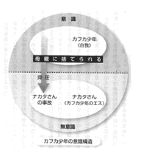
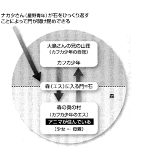
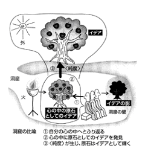

| 「恋する力」を哲学する (PHP新書) | |
| 梅香彰 | |
| PHP研究所 (2003) | |
「恋する力」を哲学する
梅香 彰
第１章 なぜか恋してしまう私
――自分と相手の不思議な関係
人はなぜ恋をするのか。しかも、特定の相手に対して......。
「なぜおまえは、この女に惚
れたのだ？」
恋する男がこんな質問をされたら、「そんなヤボなことは訊くなよ！」とでもいいたくなるだろう。
しかし、よくよく考えてみると、なぜあの女ではなくて、この女に惚れたのか、この女でなくてはいけなかったのか......。自分でもその理由ははっきりしないだろう（「顔が可愛い」とか「性格がいい」とか、あるいは「良家のお嬢さまである」などの理由をあとから拵えることはたやすいが、決してそれは、ほかならぬこの女に惚れた自分の内面の感情を説明していないことはいうまでもない）。
はっきりはしないが、それでも、この女でなければいけないわけだ。あなたが既婚者であれば、「いや、オレは別の女でもよかったんだが......」などとぼやきたくなるかもしれない。それこそ惚れた相手と結婚した相手が食い違った悲劇（？）なのか、結婚してから恋が冷
めてしまったからなのか。それはともかくとして、とりあえず、あなたがある女性に惚れたときのことを思い起こしてみてほしい。「なぜ、この女でなければいけないのか」、なんとも説明に窮するだろう。
相思相愛の恋人たちのことを、「生まれる前から赤い糸で結ばれていた」とよく表現する。互いを激しく思う、その絆の強さを並みの言葉では表現しきれず、これはもう運命の為
せる業
だと、いわば匙
を投げてしまうともいえる言い方である。
このような恋愛特有の激しい感情が、なぜ特定の相手に対して生じるのか、不思議に思ってそのメカニズムを解明しようと試みた人間はかなり昔からいた。じつは古代ギリシャでは、詩人や哲学者が恋愛について真剣に議論を重ねていたのだ。
ご承知のように、古代ギリシャではポリス（都市国家）が栄え、豊かな文明が育まれた。「哲学」なるものが生まれたのもこの古代ギリシャ、ミレトスというポリスで、タレースがその創始者であると考えられている。
哲学とは、単純にいってしまえば「なぜか？」と疑問をもつことだ。タレースは、この自然はじつにうまくつくられて運行しているが、それは「なぜか？」と考えたわけである。どんな力がこの大いなる自然を生み出したのか、と。
そこで、タレースは水に着目する。自然のエネルギーの源は水だと彼には思えた。たしかに、すべての生物を生かしているのは水である。水がなければ生き物は生きていけない。水は植物を育て、生き物に命を与え、川や海をつくり、そこから蒸発した水が空に昇っていって雲をつくり、恵みの雨となって大地に降り注ぐ。
命の根源は水にある――そう思ったタレースが残した有名な言葉こそ「万物は水である」というものだった。これが哲学の始まりである。
哲学草創期にあって、古代ギリシャの哲学者たちは、私たちの住む宇宙や自然、そこに生まれた生命に力が宿るのはなぜだろうと疑問を抱いた。ひと言でいうと、自然のもつとてつもないエネルギーや整然とした秩序に驚嘆したのである。そして、それはいったいどこから、何から生じてくるのだろうと考えた。いわば、宇宙や自然をひとつの生き物のように捉え、その命のエネルギーの源は何だろうと考えたわけである。
私たち人間もそういうふうに捉えれば、小さな宇宙と考えることができる。人間という小宇宙は、生まれながらに生きていく力をもっている。日々のエネルギーは食べ物によって補われるが、成長して一人前の人間になり、能力を発揮してこの小宇宙を完成させる力は、自分の中にもともと備わっている。それは潜在的な力として私たちの中に眠っているのだから、それを上手に引き出してやる必要がある。
古代ギリシャの哲学者たちは、人間は自分のもって生まれた力を引き出すのがあまりうまくないと考えたようである。
それにひきかえ、天体の運行や自然の生成過程はじつにうまく力を引き出すことに成功している。なんとかその智
慧
を人間も会
得
できないものか。そうすれば人間も、もう少し幸せになれるのではないか......。彼らは頭を絞
って考えた。
恋というのも、人間にもともと備わった潜在的な力と考えられる。実際に力を発揮するのは恋をしてからであるが、恋をする下地はもとからある。恋する相手が現れさえすれば、恋のエネルギーは燃え上がる。だれもが自分の心の中に、恋する力（エネルギー）をもっていると考えることができるのではないか。
彼ら哲学者たちは、もちろん人間のもつ力を考察しているわけで、当然、恋愛についても哲学の対象にしていた。なぜ恋の相手は、あの女ではなくてこの女でなくてはいけないのか......というようなことまでは哲学者は考えもしないだろうと思うかもしれない。ところが、そんなことはない。つまり、恋愛とはどういう行為なのか、人間にとっていかなる意味をもつのか、古来より人類はずっと考えてきたのである。
人類が生んだもっとも優れた哲学者（と私が考える）プラトンが、この問題に鋭く切り込んでいることはご存じだろうか。彼は対話篇と呼ばれる作品を多く残している。主として、彼の師であるソクラテスを登場させ、アテネの人たちとの対話形式で話は進むのだが、そこには「なぜか？」という哲学的な問いが満
載
である。
「恋とは何か？」
このテーマも、もちろん扱っている。その名も「恋について」という副題のついた『饗
宴
』。
プラトンの対話篇は、ソクラテスを主人公にする物語として書かれているので、世間一般でいうところの哲学書がもつ堅苦しさはまったくない。小説を読むように、気楽に読み進めることができるので、ぜひ手に取って読んでみてほしい。哲学って難しいという思い込みは、まず雲散霧消することだろう。高
邁
な哲学が難解な言葉で語られると思っている人の多くは、みずからの思想の貧困さを難解な言葉で糊
塗
しているにすぎない。
この『饗宴』は、悲劇作家アガトンの家で催された宴席のやりとりを描いた作品である。ギリシャ悲劇は当時の人々がもっとも愛好した催し物で、ものすごく権威のあるコンテストまで存在していた。ギリシャ時代にはすでに、スポーツの世界にオリンピックがあったが、さしずめ芸術世界のオリンピックといったところ。このコンテストに優勝すると、たいへんな尊敬と名誉を受けることになる。アガトンはここで見事に優勝したのである。
饗宴は、アガトンのコンテスト優勝を祝って開かれた。饗宴に招かれた人たちは当時のアテネの一流文化人。そこではもちろん、豪勢な料理やおいしいワインが出されたにちがいないが、彼らは、ただご馳走に舌
鼓
を打ち、お酒を飲むだけで満足するような人たちではない。
そこで、それぞれが弁論を披露しようということになった。この時代は、巧みな弁論に通じていることが知者の条件と考えられていたわけで、また同時に、優れた知者の弁論を聴くことに強い興味を抱いていた。いい話を聴くことは、何物にも勝るご馳走というわけである。
さて、この宴席でのテーマ、それがエロースという神の賛美だった。古代ギリシャにはさまざまな神がいるが、エロースは恋の神様である。そんなことからも、ギリシャ時代の神々がいかに人間臭かったかがわかるというもの。エロースは、帝政ローマ時代にはキューピッドと呼ばれ、どちらかというと日本では、こちらのほうが通りがよいかもしれない。
饗宴に参加した人々は一人ひとり、エロースの賛美を目的とした弁論を行うことにした。つまりは、恋について、それぞれの意見を述べようというわけである。『饗宴』はこのときの模様を詳細に記述している。
饗宴に招かれた人のなかに、喜劇作家のアリストファネスがいた。古代ギリシャは悲劇ばかりではなく喜劇も上演され、人々はそれを楽しんでいた。その喜劇のもっとも偉大な作家がアリストファネスである。
アリストファネスの作品はいまでも日本語で読むことができる。とても人間味に溢
れた、ユニークでおもしろいものばかり。たとえば『女の平和』という喜劇は、戦争ばかりしている男たちを皮肉ったものである。男たちが戦争ばかりしていることに愛想を尽かした女たちは、なんとかして男たちを懲
らしめて、戦争をやめさせることはできないかと智慧を出し合う。いつの世も戦争には、人々は頭を痛めていたものと見える。
女たちが出した妙案は一風変わったものだった。答えはなんと、セックス・ストライキ。戦争をやめないかぎりセックスをしてあげない......。これにはさしもの勇猛な戦士たちも音
をあげてしまう。男たちはすっかり参ってしまい、めでたく平和が戻ったというわけ。
このような喜劇を書いたアリストファネスが、恋する相手は、なぜあの女でなくてこの女でなければならないのかを雄弁に語っている。
「諸君、むかし人間は男と女ではなく、男
女
という者だったのだ。この男女は二つの顔と四つの手、四つの足をもち、その手足を使ってものすごいスピードで転がるようにこの地上を駆け回っていたのだ。力も強かったのでオリンポスの神々を恐れず、神々を倒そうとさえしたこともあるくらいだ。
これには神々もほとほと困ってしまった。それで考えた挙
句
に、この男女を二つに分割してしまったのだ。こうして男と女ができたのだ。こうすればもうそんなに乱暴はできない。神々はやっと安心することができた。
ところが、分割された男と女は、かつて自分であった相手に当然ながら強い思いをもっているので、一生懸命に相手を捜し回ることになる。そして、相手を見つけ出すと、二人はもう決して離れまいとして結ばれるのだ。これが恋なのだ」
実際にはもう少し複雑な話をしているが、こんな調子で饗宴の場を盛り上げた。恋の相手はもともと自分だった。自分の分身だったというわけである。それだったら、恋の相手があの女ではなくてこの女でなければいけないかは納得がいく。自分の心の中には、すでに意中の人がいるのだから、それこそ赤い糸で結ばれているといってもいい。
アリストファネスは、自分の心の中には、じつは最初から恋人はいるのだといっているわけだ。それはかつては自分自身であったのだから、その相手に強い思いをもつのは当然ということになる。
恋というのは、一般的には、相手が現れてはじめて芽生えるものだと考えられている。「それはそうだ、相手もいないのに恋などできるわけがないだろう！」というみなさんの声がいまにも聞こえてきそうだ。
しかし、ほんとうは恋人が現れるはるか以前から、自分の心の中には潜在的な「恋する力」というエネルギーが存在している......と（臆
面
もなくと思われるかもしれないが）私はここで断言したい。この恋する力は、恋人が現れるまでは意識されずに眠っている。そのため、自分では意識できないけれど、しっかりと潜在能力として心の中に存在している。
プラトンも、恋は人間がもっとも美しいと思う相手を求める根源的な欲望であるといっている。恋愛を心に内在するひとつのエネルギーとして理解していたと考えて間違いない。彼の考えについては、またのちほど、しかるべき場所で述べることにしたい。
ここではまずユングに登場してもらうことにしよう。フロイトと名声を分け合う心理学者のユングである。フロイトもユングも、人間の心の中には無意識の領域があることを発見したのだが、しかし、同じ無意識という言葉を使っても、フロイトとユングでは意味合いがかなり違う。
フロイトは一人ひとりの、個人の意識を対象にして、人間の行動には意識されうる動機だけではなく、無意識的な動機が隠されていると考えた。その好例が性欲であると彼が考えたことはつとに有名である。
性欲と恋は大いに関係がある。恋のエネルギーの一種である性欲は、無意識的な潜在エネルギーとして、人間は生まれながらにもっている。フロイトが考えた無意識は、人に欲望を起こさせる原動力である。
たしかに、人間はいちいち考えて行動しているわけではなく、ほとんどの場合、衝動的に行動が生じ、あとから自分の行動を反省する（意味づける）ことが多いだろう。
恥ずかしながら私も、若いころは喧嘩っぱやく、いろいろな人に迷惑をかけたり、お世話になった。気がついたときにはもう相手と取っ組み合いをしており、そうなるともう成り行き上なるようにしかならず、時が経ってから、あんなことしなきゃよかったと後悔したものである。喧嘩にかぎらず、考える前に行動してしまって、あとで後悔するというようなことは、だれもが日々経験することだろう。
そのような衝動の宿る場所としての無意識をフロイトは発見した。この発見は画期的なことではあるが、ただしフロイトの性欲説だけでは、なぜあの相手ではなくこの相手でないと恋が成立しないのかを説明することは難しい。性欲を満たすだけなら、極端にいってしまえば、相手はだれでもいいだろうということにもなる。ところが、恋は異性なら（同性ということもあるのだろうが）だれでもいいというものではない。
もちろん、フロイトの心理学は、世間一般でいわれるような単純な性欲説ではない。のちほどフロイトの真価を示したいと思うが、ここでは世の中に流通している通俗的なフロイト理解の範
疇
に留めておく。
いずれにせよ、いったん恋に陥ったら、相手のことしか考えられなくなる。以前、「二人のために、世界はあるの」という歌詞の歌が流行したことがあったが（若い人にはチンプンカンプンかも）、あの歌は恋する者の心理をうまく表現したものだと感心したものである。当時の若い私にとっては、自分の心境を見事にいい当ててくれているとヤケに感じたのだった。
なぜそのような強い思いが恋する相手に生じるのか、興味深い説を提示したのがユングである。ユングはフロイトのように、無意識を盲目的な衝動とは捉えなかった。ユングも無意識が人の行動を支配することには同意したが、そこには決定的な意味があると考えた。
人間は無意識に突き動かされて行動するが、その無意識とは、自分では意識できない目的なのではないかとユングは考えた。人は衝動によっても動くが、目的に向かって突っ走るのもまた人間という生き物である。
子どものころ、人は夢や希望に胸躍らせるが、その夢や希望がどのようにして生じてくるのかと考えてみると、よくわからない。しかし、それは自分にとって大切なもので、しかもこの夢やこの希望でないとダメなわけだ。画家になりたいという子どもに、いやいや公務員のほうが安定していて生活に困らないからと、親は「公務員を選びなさい」というかもしれない。
しかし、そんなふうに押しつけられたら、むしろ子どもは反発し、なにがなんでも画家になろうと遮二無二頑張るかもしれない。それは、理屈ではなくて気持ちの問題だろう。気持ちの問題となれば、理性や良識ではコントロールできない衝動的な行動となる。これはまさしく、無意識が心の底で働いているとしかいいようがないだろう。
人間は、おそらく生まれたときから、ＤＮＡに書き込まれているかのように、ある目的に向かう情熱をもつようにつくられているのだろう。しかも、その目的は生まれたときにはすでに、無意識の中に眠っている。眠っている状態ではあるが、潜在的なエネルギーとして必ず存在するとユングは考えた。この無意識の中に眠っている目的意識が、ユングが名づけたところの「元型」である。
元型には、「グレート・マザー」と呼ぶ母親のイメージなどいろいろあるが、恋に関係するものが「アニマ」と「アニムス」である。人は生まれたときから自分の心の中に、無意識的に理想の異性像をもっているとユングはいう。女性が心の中にもっているのがアニムスという男性の理想像、男性が心の中にもっている女性の理想像がアニマ。現実の女性を恋する前に、無意識的に男はアニマに向かって突進し、女性はアニムスに向かう。しかし、これはあくまで無意識的なもので、ふだんは「恋する力」として心の中で眠っているわけだ。
私も女性を見る場合、無意識に自分の好みの女性とそうでない女性を区別している。もちろん、頭で考えてやっているわけではない。なんでこの女性がタイプで、あの女性がタイプではないのか、などとは露
ほども考えていない。「どんな人がタイプなの？」という質問に対して、「好きになった人がタイプさ」というお決まりの台詞があると思うが、たしかに冷静に考えて、自分の好きな異性のタイプを説明することは難しい（し、これまたヤボな作業である）。
世の中で美女といわれている女性でも、ぜんぜんタイプではない相手もいる。女性を見た瞬間に、無意識の中にあるモノサシが働く。このモノサシになっているのが心の中のアニマ。このモノサシの一定の基準を満たした女性に出会うと、とたんに恋心が生じる。そして、その女性に向かってまっしぐら......ということにもなる。
思えば高校生のころ、決まって男子生徒だけで集まると、この学校でいちばんきれいな女子生徒はだれかという話題に花が咲いた。私にも好きな女の子がいて、だれでも女性の好みは共通すると不覚にも思っていた私は、きっとみんな彼女のことをいちばんきれいだと思っているにちがいないと確信していた。ところが実際には意見はマチマチで（当然だが）、女性に対する好みの違いが大きいことにはじめて驚
愕
した記憶がある。
もっとも、それだから世の中うまくいく。男性の好みが一人の女性に集中すれば、かぐや姫ではないが男たちから逃げ回らなくてはならないし、男は男でその女性をめぐる果てしない恋の争奪戦に消耗してしまうだろう。好みが違うからこそ、世の中、平和にカップルが誕生していく。蓼
食う虫も好き好きというわけだ。
ところで、私が好むタイプの女性と、ほかの人が好むタイプの女性が違うのはどうしてだろう。ユングにいわせれば、それは男性が心に秘めているアニマが一人ひとり違うからだということになる。
ユングの説明は、アリストファネスの説よりもずっと洗練されているように思う。アリストファネスの説では、自分の思う相手はただ一人ということになってしまい、恋愛は生涯に一回限りということになる。ところが実際には、人間の恋心は結構いろいろな相手に向かって揺れ動くわけだ。
ユングは、そのような恋心の揺れ動きを上手に説明してくれている。自分の心の中には理想像としてのアニマやアニムスがいて、それを現実の女性や男性に投影するわけだから、何度恋に陥っても不思議はない。
恋は男と女がいるからだけではなく、まずは自分の中に、恋するエネルギーが発動するようなメカニズムがあるということ。それが元型であるアニマとアニムスなのである。
ちょっと気恥ずかしいのだが、私を例にして、「恋する力」がどんな作用をするのかお話ししよう。
私が妻と出会ったのは、私が東京都町田市の小学校に就職した直後の、その職場においてだった。当時の小学校には若い職員が多かったためか、青年部というのがあって、顔合わせを兼ねた歓迎会を開いてくれた。その席に一人の若い女性がやや遅れてやってきた。その女性を見た瞬間、私は世間でいうところの一目惚れをしてしまったのである。それが妻との馴
れ初
めだった。
しかし、結婚するまでにはさまざまな紆余曲折が存在した。ほかの女性とも恋愛関係になったり、そのときそのときで気持ちは大きく揺れ動き、自分がいったい何をやっているのかさえもわからず、自分で自分と格闘しているといった感じで、いま思い出すと、まさに青春を謳歌していたものだと思う。
恋愛というのは男と女をめぐるドラマであるが、自分の心に生じた自分をめぐる物語ともいえなくはない。現実の女性たちは、心の中にあるアニマとは完全には一致しない。私の場合、気持ちが揺れ動いたのは、現実の女性たちが、それぞれある一部分だけ私のアニマ性を反映していたからなのかもしれない。あるいは、自分の中にあるアニマ自体がはっきりしていなくて、分裂していたのかもしれない。しかしそうなると、自分の心に内在するアニマとおのずと向き合うことになる。
そう考えると、アリストファネスのいっていることも、まんざらおかしなことではないという気もしてくる。アニマというのは、自分自身の中にある願望、あるいは願望の源だとすれば、アリストファネスがいうとおり自分は一人しかいないのだから、アニマも突き詰めれば一人ということになる。
現実にはアニマ的な女性はたくさんいるわけだが、自分の中のアニマはあくまでもただ一人。このもう一人の自分であるアニマをめぐる物語が、私の恋愛の実情だったのだろう。
もっとも、恋愛の渦中にあった若い時分に、こんなことを考えて恋愛していたわけではない（そんなヤツはコワイ）。自分の心に生じる恋愛感情に、ただただ振り回されつづけていたというのが正直なところだ。
自分が恋した女性たちに、いまからふり返って共通点があったかといえば、やはりあったのだろうと思う。しかし、一人ひとりをつぶさに思い返してみると、それぞれの個性はずいぶんと違っていた。
アニマには多様な要素が含まれているといえるだろう。現実に恋した女性は、多様なアニマのそれぞれ違った側面をもっていたのかもしれない。あるいは、アニマというのは自分の好む女性のイメージの核のようなもので、はっきりとした具体的な像ではないのかもしれない。女性に対する好みの傾向が無意識の中に漠然とあって、その傾向がかなりの点で合致すれば、恋心が芽生えるのかもしれない。
恥ずかしついでに、私の初恋の話もしてみる。私の初恋は高校三年生のとき。相手の女性とは一年のときに同級生だった。しかし、そのときはまったくといっていいほど、彼女に関心を寄せることはなかった。二年生のときは別々のクラスで、三年で再び同じクラスになったのだが、そのとき突如として激しい恋心が襲ってきたのである。いまから考えてみると、それが恋の不思議なところである。
それまでに淡い恋心みたいな感情を抱いた女性はたくさんいた。それはそれで、別に物理的な事情で別れがやってきても、精神的におかしくなるということはなかった。別れは別れと、自然に受け入れることができた。
ところが、この女性との別れに限っては、すんなりと受け入れることができなかったのである。卒業すれば当然、別れがやってくる。それぞれ進む世界は違ってくるのだから、顔を合わせることもなくなる。それが耐えがたい苦痛となって私の心に襲ってきた。
私の恋心は、かなり自分勝手なもので、要は一緒にいて顔を合わせていられればそれでよいというものだった。相手の顔を見たり声を聞いたり、相手の存在を身近に感じて、それを確認できれば満足だった。
しかし、物理的に別れがくれば、自分の恋心を満たしていたものがいっさいなくなってしまう。おそらく、私はこの女性に対して、きわめてユング的なアニマを相手にした恋をしていたのだと思う。
スタンダールは、恋は「結晶作用」だという。結晶作用とは、ユング的にいえば、自分の中のアニマの像が恋する相手に投影され、現実の女性に自分のアニマの像を見ることである。俗にいう「あばたもえくぼ」というやつで、相手の女性がものすごくきれいに見えてくる。恋する者の心理をスタンダールは的確に捉えているが、まさしく恋というのは、きわめて心理的な現象だということである。
私の場合、最初に彼女と一緒のクラスになった一年生のときは、三年になってあれほど激しい結晶作用が起こったにもかかわらず、そのかけらは微塵もなかった。ちょっと可愛い女の子ぐらいにしか感じていなかった。
まだ高校一年生の自分には、十分な「恋する力」がなかったのかもしれない。自分自身のアニマは無意識の底のほうで眠っていたのかもしれない。ところが、自分の中のアニマがしだいに力を増してきたとき、私はアニマの像を心の中で強く意識し、この女性に投影したのだと思う。
はじめて自分のアニマを現実の女性に投影したものだから、その女性がアニマそのもののように思えたのだろう。したがって、この恋愛は徹
頭
徹
尾
、片思いであり、性的な欲望をあまり伴わない、きわめて心理的な恋愛だった。この女性を自分の腕の中にかき抱こうとは、私は露ほども考えなかったのだから。
一緒にいて顔を合わせ、声を聞き、身近に彼女の存在を感じるだけでよかった。つまり、あまりにも強烈な結晶作用が起こったために、私は現実のその女性ではなく、自分のアニマをその女性に見ていたのだろう。あとになって考えてみると、そのときの私の心理がよく見えてくる。
しかし、そんな気持ちを投げかけられる女性にしてみればどうだろう。彼女にとっても、こういう愛され方は少し常
軌
を逸しているし、不自然に感じるにちがいない。もっとも、彼女がはじめから私に関心を寄せてくれていたら、そうではなかったのかもしれない。まったく関心がなかったとしても、ふつうにデートに誘うとか、相手を生身の女性として、エロス的にアプローチしていれば、かなり希望的な観測だが、この恋はもしかしたら実っていたのかもしれない。しかし、私はただただ賛嘆して相手を見ていただけだった。
ヘルマン・ヘッセの小説『車輪の下』の主人公ハンス少年は、恋人のエンマとデートをしても、彼女と一緒にいることにうっとりしてしまい、ほとんどボーッとしているだけ。ハンス少年はエンマにアニマを見ていたわけだ。エンマのほうは恋人として、一人の女として扱ってほしいのに、ハンスがただボーッとしているだけで何もしないので苛
立
ってくる。
そしてとうとう、エンマはハンスに愛想を尽かしてこういう。
「あんたは変な恋人ね。なんにもしようとしないのね」
私には、ハンスの気持ちがよくわかる気がする。『車輪の下』の主人公は、現実の少女を相手にしていたのではなく、アニマを相手にしていた。すなわち、結晶作用が憐
れにも少年の心を占領していたのである。このハンスと同じように、私の場合も実際の彼女を恋したというより、彼女の中に自分のアニマを重ねていたのだろう。
「恋する力」はもともと強いエネルギーをもっているから、それが生の状態で心を占領すれば、とんでもないことになりかねない。初恋はおうおう、「恋する力」がコントロールされずに生の形で心を占領するので、失敗することが多いのかもしれない。
私の初恋体験は、自分の心の中には、女性の理想像らしきものが住みついているのだということを思い知らせてくれた。私はこの女性にありったけの勇気を奮い起こして、手紙を書いた。便
箋
一枚が精一杯で、何を書いたかはまったくといっていいほど記憶に残っていない。
手紙の返事は待てど暮らせど来なかった。やがて私は、そんな返事は来るはずがないとようやく悟った。手紙のことなど忘れようと、郷里の長野県小諸市の祖母の家に足を向けた。
ところが、思いがけず彼女からの手紙が、兄の手によって自宅から祖母の家に回送されてきたのである。半ば期待しながら、その手紙を開けてみると、それは婉
曲
に交際を断る手紙だった。いまにして思えば、それまでほとんど口も利いたことのない相手から（文字どおり、私は彼女を見ているだけだった）突然ラブレターをもらったのだから、彼女にとってはただただ不気味な存在だったのだろう。私はその返事を見るや、高熱を出して倒れてしまった。周囲は受験で疲れたのだろうと思ったようであるが、それは失恋の痛手以外の何物でもなかったのだ。
この失恋のすぐあとだった、ルソーの『告白』を読んだのは。兄の蔵書で、当時は『懺
悔
録
』という仰
々
しいタイトルがつけられていた。この「懺悔」という言葉の響きが、失恋直後の私の心境にピッタリきたのだ。
読んでみると、たちまちにしてその内容に引き込まれてしまった。ルソーが描き出す、ジュネーブでの少年時代の生き生きした描写がまず気に入ったのである。
ルソーは、彫
金
師の徒弟になっていたが、親方とうまくいかず、徒弟仲間と市外へ遊びに行って市の門限に間に合わなくなり、親方にこっぴどく叱られることを恐れ、そのまま放浪の旅に出てしまう。今後の身の振り方を行きずりの土地の司祭に相談すると、司祭は一人の信心深い女性をルソーに紹介してくれる。ヴァランス夫人である。
ヴァランス夫人はきっと気難しい老婆だろうと勝手に思い込んだルソーは、会うのも厭
だったが、背に腹は代えられないと会いに行く。ところが、ルソーが目にしたヴァランス夫人は若々しくて美しい、愛
嬌
溢れる女性だった。このときルソー十六歳、ヴァランス夫人は二十八歳。ルソーはヴァランス夫人に、母と恋人の両者を見出したのだった。
次章で詳しく説明するが、ただ魅力的な女性というだけでは、アニマにはならない。その魅力のなかに母親の面影が入らないと、アニマとしては十分ではない。男性の心には母親への愛情がかなりの割合で占めている。極論すれば、世の男性は多かれ少なかれマザコンであると私は思っている（異論はあるだろうが）。
もっとも、母親を恋人にするわけにはいかないわけで、母親の面影はあくまでもアニマに投影されることになる。したがって、アニマは母親の面影をもった若い女性ということになる。
ルソーが会ったヴァランス夫人は、彼には母親とも恋人とも自然に感じられる女性だった。最初に会ったときは母親としての印象が少し勝っていたようだが、恋人としても十分な若々しさをヴァランス夫人はもっていた。
ルソーとヴァランス夫人が性的な関係をもち、ほんとうの意味で恋人同士となるのは、この最初の出会いからずっとあとのことである。それはむしろ、アニマとしてのヴァランス夫人が少し色
褪
せてきてからのことだった。
私や『車輪の下』のハンス少年のように、アニマを目の当たりにしてルソーもボーッとなってしまい、一緒にいるだけで幸せだと感じられたのだろう。一般的には、男が相手にアニマを感じ恍
惚
となっていたとしても、相手の女性が無条件でアニマを演じてくれるわけではない。生身の女性なのだから、当然ながら恋人には男性の役割を求めてくる。男性の役割を果たせない場合、ハンス少年のように女性に愛想を尽かされてしまうのが自然の成り行きである。
ところがルソーの恋愛の場合、ヴァランス夫人が彼に男性の役割を求めることはなかった。ルソーがボーッとするがままに任せたのである（信じられないことではあるが）。ルソーに対するヴァランス夫人の愛情が、最初は母性愛的だったからなのだろうか。
それがために、ルソーにとっては、ヴァランス夫人は現実の女性でありながらアニマでもありつづけたのだろう。もしヴァランス夫人に出会わなければ、ルソー自身が告白しているように、どこかで野たれ死にしていても不思議はなかった。彼女と一緒に過ごした十年、この現実の女性でありながらアニマでもある女性との共同生活が、ルソーを稀
有
な思想家へと変身させていくことになる。
仮に首尾よくいかなかったとしても、恋愛体験は人間をひとまわり大きく成長させてくれると私は信じているが、この奇跡的ともいえる幸せな恋愛こそが、ルソーのようなまったくのダメ人間を偉大な思想家に生まれ変わらせたのである。これを「恋する力」といわずして何といおう。
ルソーの『告白』を読めばよくわかるが、百歩譲ったところで、どう見ても若いころのルソーはダメ人間の見本みたいな男である。いくら親方が気に入らないからといって、市の門限に遅れただけで、何の当てもないのに放浪の旅に出るというのは無茶苦茶な話だ。
この親方のもとで徒弟を始める前には、司法書記のマスロン氏のところへ見習いにやらされているが、「まるで役に立たん......、この子はヤスリ使いの仕事くらいしかできない」と罵
られ、その結果として彫金職人の徒弟になったのである。
で、この親方のところでルソーがやっていたことはというと、じつは物を盗むことだった。親方専用の小部屋の錠をこっそり開け閉めすることを覚え、片っ端から欲しいものを盗む。しかも、盗むだけでは飽きたらず、自分の盗みを人のせいにすることも平気である。
また、ヴァランス夫人に会ってからのちのことだが、新教徒だったルソーは、旧教に改宗すれば職が得られるかもしれないと聞き、イタリアのトリノにある改宗者を教育する救済院へと赴
く。そこで無事に改宗を済ませ、あちこちで仕事にありつくが、ある家の召使いをしていたときに、その家のリボンを盗み、その罪をマリオンという女性料理人になすりつけてしまう。その理由がまたふるっている。マリオンが好きだったから、思わずマリオンの名前を挙げてしまったというのである。
このイタリア旅行の途上では、露出狂をやって捕まったりもしている。
結局はヴァランス夫人のもとに帰り、彼女はルソーを僧侶にしようと神学校に入れる。しかし、そこでもうまくいかず、僧侶になる資格のない人間という烙
印
を押され、ヴァランス夫人のもとへと送り返されてしまう。
どんな職業につこうがわたしは、くずみたいな人間になるときまっていたらしい。ガチエはわたしの進歩について、できるだけ不利にならぬように報告してくれたのだが、それでも勉強しただけの進歩がないと認められ、今後つづけて勉強させるねうちがありそうには見えなかった。司教も校長も力を落とした。そして、わたしは僧侶になる資格さえない生徒として、ヴァランス夫人のところへかえされた。
（ルソー著、桑原武夫訳『告白』、岩波文庫）
これほどどうしようもない人間と思われていた（実際そうだろう）ルソーであるが、無鉄砲としか思えない恋へと突き進んでいき、そのおかげで、ルソー自身が思ってもみなかった成長と変身を遂げることになる。恋愛がいかにすばらしいエネルギーをもっているか、ルソーという人間の一生がいみじくも証明しているといっていい。
恋愛というものはすばらしいものだと、しみじみ思う。恋をしているときほど人間が純粋になれることはないし、自分に正直であることもない。恋する気持ちの純粋さが、自分に嘘をつく暇さえ与えないのだろうか。そして何よりも、自分は生きているのだという実感を恋は与えてくれる。
私は初恋にはものの見事に敗れたが、しかし、あの失恋を後悔などはしていない。あれは私にとって、何物にも代えがたい貴い経験だったと衒
いなくいえる。おそらく、あの恋がなかったら、自分の人生は始まっていなかったのではないかとさえ真剣に思う。
あえていいたい。恋というのは、人生の一歩を踏み出すための門出の門なのだ。この門を開けて自分の、ほんとうの自分の人生を歩きはじめるためには、人間は恋をしなければいけないのだ。
ルソーがダメ人間だったのは、現象的には事実であるが、周囲の大人たちが寄ってたかって、自分たちの狭小な価値観をルソーに押しつけた結果でもある。大人たちは、とりあえずルソーが何らかの職業に就いて食べていけるようにと心配している。
それは通常ならありがたい話であるが、ルソーの大きな器はそのような小さな価値を受け入れなかった。人はそれぞれ自分に合ったもの、自分の人生をこれに賭けようという価値観をもっているし、それを実現する何かしらの取り柄をもっていると思う。
ルソーは「自然に帰れ」といっているが、この「自然」とは、自分の中に眠っている可能性としてのよいものといっていい。つまり、自分に立ち返って、奥底にあるよいものを掘り起こし、それを自分の手で取り出さなければならないといっているのだ。ヴァランス夫人との出会い、彼女との恋愛を通して、ルソーは自分自身に目覚めていく。
ヴァランス夫人との恋愛生活は、それまでにはない余裕をルソーに与えた。そして彼は、自分がほんとうにやりたいことに没頭することができた。もしかしたら、こぢんまりとした平凡な人間にまとまってしまうことを避けるために、それまでルソーはダメ人間を演じていたのではないかとも思えてくる。
ヴァランス夫人との十年に及ぶ共同生活ののちパリに出たルソーは、ディジョンのアカデミーの懸賞論文に応募して当選し、一躍高名な思想家の仲間入りをすることになる。ルソー三十八歳のことだ。そののち、『村の占者』と名づけたオペラを作曲してヒットさせ、国王から年金を与えられそうにまでなる。それほど音楽的な才能をも花開かせたということだろう。ちなみに『村の占者』は、少年時代のゲーテが愛好したオペラである。
ルソーの才能は止まるところを知らずに流れ出し、開花していく。それはほんとうに驚くべきもので、これが『告白』で語られているダメ人間と同じルソーなのかと訝
しく思えるほどである。
信じがたいけれど、こういうことは実際にある。私自身を例に挙げて恐縮だが、私も四十歳くらいまでは、自分がダメな人間だと思い込んで疑わなかった。実際、大学時代に専攻していたはずの哲学書を手に取っても、真の意味では理解できなかった。それでも、哲学書にはやはり惹
かれるものがあって、読めもしないのに高いお金を払って書棚に満たしつづけていたのである。
ちょうど四十歳のころ手に取った一冊の哲学書、それはフランスの哲学者フーコーの『知の考古学』という本だったが、それを読みはじめたら、目からウロコが落ちたように、内容が頭の中にスーッと入っていくのを感じたのである。これは不思議な経験だった。
ルソーがいうように、私も自分がもっていた自然を掘り当てたのだろうか。いまでは、哲学の本は一冊しっかりと理解できれば、ほかの哲学書も理解できると自信をもっていえるまでになった。ちょうどそれまで自転車にはまったく乗れなかったのに、一度乗れるようになると、もうどこにでも乗っていけるようになるのと同じようなものである。
ルソーが提唱した「自由・平等・博愛」の精神は、人間一人ひとりに与えられている「自然」であり、可能性として生まれながらにもっているよいものを社会的な圧力から守り、立派に開花させるための条件なのかもしれない。彼のいう自然とは、自分の中にある力のことである。ルソーはヴァランス夫人との恋愛においてこれを開花させていくのだが、恋愛は自分の中に眠っている力を目覚めさせ、それを発揮させる起爆剤なのだ。しかも、この起爆剤は、一人ひとり平等に与えられた人間の本性である。人間としての自分の本性こそ、ルソーは「自然」と考えた。
いわば自然とは、突き詰めれば「自分」ということになる。恋愛も哲学も、じつは自分をめぐる物語なのだ。そこで、次章では自分をめぐる物語について見ていくことにしよう。
第２章 理想の恋人像はどのように生まれるのか
――心の中の物語
ユングの心理学は、ユング自身の著作そのものを読むより、優れた物語に接するほうがはるかに理解しやすいと、私は思っている。
さまざまな神話や童話、物語、ファンタジーを読むことで、ユングのいう元型、恋愛についていえばアニマやアニムスを見出すことができる。一例を挙げれば、村上春樹の『海辺のカフカ』が、その観点から読み解くことができる小説だろう。ただし、改めてもう一度、この『海辺のカフカ』を精読してみると、たしかにユング的なアニマが主要なテーマとなって物語は展開していくが、その根底には、フロイト的な人間の自立の物語が語られていることに気がついた。
前章の終わりで私自身の実感として述べたが、恋愛は自分の自立した人生を始める出発点であるということである。そのためには必然的に、私たちが生まれながらにして従属している両親と自分自身との関係に、真正面から向き合わなければならなくなる。これをないがしろにしては、いい恋愛はできないし、当然、自立などできるわけがないのだから。
フロイトはエディプス・コンプレックスという考え方でこのことを示したが、このエディプス・コンプレックスをどう乗り越えるかが、「恋する力」を本来的に始動させるかどうかのキーポイントではないかと思う。
繰り返すが、『海辺のカフカ』にはユング的要素だけではなく、色濃いフロイトの影も見出せる。考えてみたらこれは当然のことで、ユングとフロイトは同じ泉から湧き出した流れなのだから。
いい恋愛ができることと、自分らしく生きることは、ほとんどイコールだと私は思う。このことは、この本全体でゆっくりお話ししていこうと思うが、つまりは、自分らしく生きる力こそ、恋する人自身が自己の中に見出すものなのである。これはユングがいう「自己実現」、フロイトのいう「自我の確立」と非常に関連が深く、のちに触れようと思っているキェルケゴールやニーチェ、プラトンの思想とも通じているのだ。
世に数ある小説のなかで、なぜにまた『海辺のカフカ』をわざわざ精読しなおしたのかといえば、たまたま仕事の会合から帰る際に受けた、ある女性からの質問がきっかけだった。
「梅香さん、メタファーって何ですか？」
「メタファー？ 暗
喩
ですね。でも、メタファーがどうかしたのですか？」
この女性、村上春樹が好きで彼の小説をよく読んでいる。ところが最近、村上春樹が書いた『海辺のカフカ』にメタファーという言葉がよく出てくるけれど、意味がよくわからないというのである。
メタファーというのは、言葉ではうまく説明できないことを、別なイメージを描くことによって想像力を働かせて説明する、一種の比喩技法を指している。村上春樹の小説は自分の内面、それも無意識の世界を描いているためか、このメタファーが多用されている。
彼の小説がおもなテーマとして扱っているのは、ご存じのことと思うが、恋愛であり、手を変え品を変え、よくもまあ、これほどさまざまな恋愛を描けるものだとも思えるが、じつは違っているのは細部だけで、小説の構造は驚くほど同じといってよい。むしろ私には、なんでこんなに同じパターンで小説が書けるのだろうと不思議に思えてくる（賛嘆の意味を込めて）。
その答えは比較的簡単、村上春樹の小説は自分をめぐる物語だからだ。もう少し正確にいうと、自分の心にあるアニマをめぐる物語。彼の小説の特徴は、一見すると現実世界を描いているように見えるが、いっさい現実は書かれていない。そこに浮かび上がってくるのは、彼の内面世界である。
『海辺のカフカ』には、ナカタさんという猫語を話せるユニークなおじさんが登場する。生活保護を受けながら、近所の迷い猫を捜して小遣いを稼いでいる奇妙な人物である。猫語がしゃべれれば、直接その辺をうろついている猫たちから、迷い猫の情報を聞き出せるというわけだろう。
しかし、この世の中に猫語を話せる人なんているわけが......ない（だろう）。これがすでにメタファー。この人物を登場させていること自体が、「この話は現実ではありませんよ」と宣言しているようなもの。
睡眠時に見ている夢のなかでは、かなりおかしなことが起こっているにもかかわらず、私たちは現実と錯覚する。目が覚めてはじめて、ああ、いまのは夢だったのかと気づく。村上春樹の小説は、何気なく読めば現実世界を描いているように錯覚してしまうが、それは一種の夢物語である。村上春樹が自分の無意識世界で見ている夢の物語、見方を変えれば、おとぎ話といってもいい。
そのような私なりの見方を、質問してきた女性に説明したのだが、なんとなく自分でも消化不良の感があり、それでもう一度、じっくりと読みなおすことにしてみた。
『海辺のカフカ』は、田村カフカという少年が家出をして四国に向かう物語である。海辺の町にカフカが行くので、『海辺のカフカ』というタイトルなのだろう。この作品名はまた、佐伯さんという、この物語のヒロインがつくった歌の題名でもある。
カフカは父親に、「お前は父親を殺し、母親と姉を犯す運命をもっている」といわれるが、これは説明するまでもなく、ギリシャ悲劇のエディプス王の物語をそのまま借りている。
養父母に育てられていたエディプスは、「父を殺し母を犯すであろう」との神託を受ける。養父母を実の両親だと信じ込んでいたエディプスは、その神託が現実になることを恐れ、みずから放浪の旅に出る。その旅の途中、争いになった男を誤って殺してしまう。これが実の父親だった。その後、テーバイの町にやってくると、人々を苦しめていたスフィンクスに立ち向かって見事に打ち倒し、その褒
美
としてテーバイの妃を娶
って王位に就くのだが、その妃こそ実の母親だったのである。
予言を避けようと旅に出たにもかかわらず、結局、予言は実現してしまう。すべてを悟ったエディプスは、節穴だったわが目を抉
り取り、さすらいの旅に出るという壮絶な物語である。
フロイトはこのエディプス王の物語をヒントに、有名なエディプス・コンプレックスを考えついた。生まれてきた赤ん坊の最初の恋人は、男の子の場合、母親である。子どもは母親に恋をするのだが、それを邪魔するのが父親。子どもは力ではとうてい父親に敵
わない。
自分の思いがかなわないどうしようもない現実を子どもは抑圧し、無意識へと送り込む。そのときに生じるのがエディプス・コンプレックスというわけである。ちなみに私は、このときに無意識に送り込まれて形成されるのがアニマではないかとも考えている。
ともかく、このコンプレックスに打ち勝つことこそ子どもの成長と自立にほかならない。父親を乗り越え、母親に代わって、ほんとうの恋人を得ること。父親は現実社会のメタファーでもあり、その父親を乗り越えることは、社会のなかで自立していくことを意味している。それは同時に、現実世界において恋愛が可能となることも意味するが、そこにいたるまでには、自分自身のアニマをめぐる物語、親子の葛藤を乗り越えねばならない――そういう物語を『海辺のカフカ』は語っているといってよい。
蛇足ながらつけ加えれば、『海辺のカフカ』がエディプス王の物語の形式を借りていること自体が、ひとつのメタファーでもある。それはフロイトのエディプス・コンプレックスを暗示すると同時に、そのことによって、この物語は無意識について語られるものだということを明示している。つまり、これは自分の無意識をめぐる物語なのだと。
では、『海辺のカフカ』の物語の概要と構造を私なりに分析してみることにする。読まれた方も多いと思うが、しばらく私の解釈におつきあいいただきたい。
『海辺のカフカ』は、カフカ少年の無意識的な世界を解明する小説であるが、ひとつだけ約束事を設定しておこう。無意識とは夢のように、自我が意識できない意識である。フロイトは基本的には潜在的な欲望と捉え、ユングは潜在的な目的意識と考えたことはすでに述べた。これらをいちいち分けて書くと、きわめて複雑な話になるので、無意識的なことはすべてフロイトが使った用語、「エス」で統一したいと思う。エスという言葉が出てきたら、それは広い意味で無意識を指していると理解してほしい。
物語は二つのストーリーが同時並行的に語られる。ひとつはカフカ少年が主人公。この物語がいわゆる現実の通常の自我意識世界のストーリーである。
カフカ少年は世界的に有名な彫刻家の父親と二人きりで暮らしている。この父親はカフカ少年が小学生のときに、「お
前
は
い
つ
か
そ
の
手
で
父
親
を
殺
し
、い
つ
か
母
親
と
交
わ
る
こ
と
に
な
る
」と予言していた。しかも、姉とも交わるだろうというおまけつき。カフカには母親と姉がいたが、母親はカフカ少年が小さいときに姉を連れて出て行ってしまっており、母の面影すら覚えていない。
カフカ少年は十五歳になるとき、家出をする。それがこの物語の発端である。家出の目的ははっきりとは書かれていないが、母と姉さがしである。四国へ向かう深夜バスの車中で、カフカは自分の姉と思しき女性、さくらさんと知り合いになる。
もうひとつの物語が、前述のナカタさんを主人公にしている。ナカタさんは、幼児期に疎開先で不思議な事故に遭ってほとんど痴
呆
状態になってしまい、その代わりに猫の言葉が話せるようになって、迷い猫の捜索を仕事にしている。
さて、この二人の人物がどのように関係しているのか、それがこの小説のミソといっていい。結論をいうと、このナカタさんがカフカ少年のエスなのである。すなわち、カフカ少年が自分では意識していない無意識の自分である。作者は、それをあたかも別人格のように分けて描いているが、カフカとナカタさんは、じつは同一人物である。カフカ少年が自身の自我を表し、ナカタさんはカフカ少年のエスを体現している。
この小説は、カフカ少年が一人称で語っていく物語と、ナカタさんを主人公とする三人称で語られる物語が交互に展開されるように構成されている。そして最後に、二つの物語が結びつく。
現実的に考えれば、まったく歳の離れたナカタさんがカフカ少年のエスを象徴しているのは納得できないかもしれないが、この作品は現実を描いているのではなく、作者である村上春樹の内面世界を描いたものだと考えればよい。とりあえずは、このことを了解しておく必要がある。これが了解できないと、物語の構造を理解することはできない。
カフカ少年には母親と姉との別れ、もう少し切実にいえば、母親に捨てられたというトラウマ（心の傷）がある。この幼児期のトラウマは、記憶からは完全に消え去っていて、カフカ少年は母親の顔さえ覚えていない。
母親に捨てられるというのは、想像するだけでも、子どもにとってはつらい経験だろう。記憶しておくのは耐えられない。それで、カフカ少年の自我はその記憶を抑圧し、自分のエスに送り込んで、記憶を意識から消し去ってしまっていると考えられる。
ところで、カフカ少年のエスであるナカタさんの物語は不思議な事故に遭遇することから始まるわけだが、このナカタさんの不可解な事故は、象徴的にはカフカ少年が母親に捨てられた強烈なショックを意味していると読み取れる。図示してみよう。

カフカ少年の意識構造がわかると、ナカタさんの行動の意味が見えてくる。ナカタさんがカフカ少年のエスを人格化していることが理解できないと、ナカタさんの行動は不可解に見えるが、ナカタさんがカフカ少年のエスであることさえわかれば、ナカタさんの行動も、この物語のつくりもおのずと見えてくるのだ。
ナカタさんは迷子になった猫のゴマを捜しているが、訪ね当てていくと、ゴマを迷子にさせていたのはカフカ少年の父親だったことが判明する。カフカ少年の父親は猫を捕らえてきては殺していたのである。この野蛮な行為をやめさせるには、ナカタさんが少年の父親を殺すしか手立てはない。
このような論理は、ナカタさんを独立した人格として読むと、なんとも奇妙な話である。しかし、ナカタさんがカフカ少年のエスだとしたら、話の筋が通ってくる。
おそらく母親は、自分の意思ではなく、やむをえずカフカ少年を残して家を出て行かなければならなかったのだろう。父親がその原因だった。そうだとすれば、カフカ少年には父親に対する深い恨みがあることになる。しかし、この恨みも抑圧され、エスに送り込まれてカフカ少年の意識にはもはやない。
ところが、カフカ少年のエスであるナカタさんには、父親に対する恨みがしっかりと根づいている。ナカタさんがカフカ少年の父親を殺す動機は十分すぎるくらいあるわけだ。つまり、父親を殺す役目はナカタさんしか考えられない。
ナカタさんが父親殺しを実行に移したとき、カフカ少年は意識を失い、やがて神社の境内で血まみれになって倒れている自分を発見する。少年のエスであるナカタさんの行為は、カフカ少年が無意識ではあってもみずからの手で父親を殺したことを意味するのであって、二人のつながりをほのめかしているわけだ。
しかし、カフカ少年はというと自分のエスを意識できないので、自分がなんで血だらけになったのかさっぱりわからない。不安になってさくらさんに助けを求め、姉であるさくらさんは甲斐甲斐しくも弟の面倒をみることになる。直接ではないけれどセックスの世話までして、手でカフカ少年を射精させたりもする。そのとき、カフカ少年はさくらさんの裸体を想像してしまう。これが姉を犯すという予言の意味。
話は少し前後するが、カフカ少年は四国の高松へやってくると、ビジネスホテルに宿泊しながら、甲村記念図書館という私立図書館へ足繁く通いはじめる。カフカ少年はそこの職員である大島さんに好意を抱き、彼女もカフカ少年に興味を抱いている。父親殺しの嫌疑がかかり、警察の捜査の手が伸びてくると、ホテルに泊まっているわけにもいかなくなったカフカ少年は、この大島さんに相談し、図書館の離れにしばらくやっかいになり、仕事を手伝うことになった。
その図書館の館長が佐伯さんという中年の女性で、この人がカフカ少年の母親だった。佐伯さんは若い時分に「海辺のカフカ」というヒットソングをつくっており、そのころには理想的な恋人も存在していた。ところが、この恋人が大学のセクトの争いに巻き込まれて死んでしまう。その後、佐伯さんはカフカ少年の父親と結婚しカフカ少年を産むのだが、カフカ少年が幼いときに姉を連れて出て行ってしまった。この一連の流れは、じつはカフカ少年の想像であるのだが、佐伯さんはそれを肯定も否定もしていない。
カフカ少年のトラウマは、なぜ母親は姉と一緒に自分も連れて行ってくれなかったのか、なぜ自分一人が父親のもとに残らなければならなかったのかという問いをめぐっている。
フロイトのエディプス・コンプレックスの理論に従えば、母と姉は心の中の恋人であり、カフカ少年は恋人を求めて旅に出たともいえる。そうしてみると、この物語はカフカ少年のアニマさがしという意味合いが濃いものと解釈できる。
では、カフカ少年のアニマはどこにいるのか。もちろん、自分のエスの中にいるのであるが、それがおぼろげなので、たとえ幻でもいいからそれを確認したい。それで、その面影を求めて、母と姉さがしの旅に出たわけだ。
カフカ少年が甲村記念図書館で寝起きしている部屋には、以前、佐伯さんが少女だったころ住んでいた。カフカ少年はある夜、その佐伯さんの少女時代の亡霊を目にすることになり、やがて、実際の佐伯さんと交わることになる。母と交わるという予言はこのことだったのだ。
さて、そうこうするうちに、警察の捜査の手がしだいに忍び寄り、甲村記念図書館も安全な場所とはいえなくなる。カフカ少年の身を案じる大島さんの助けを借り、彼女の兄がもっている深い森に囲まれた山荘にカフカ少年はかくまわれることになった。
この山荘とその周囲の森が、じつはまた別のメタファーである。カフカ少年が寝起きする山荘がカフカ少年の自我、森の奥深くがエスとなる。そして、森の奥深くには村があり、そこにアニマがいるという構造になっている（まったく複雑なストーリーである）。
ここでまた、ナカタさんの行動が大きな意味をもってくる。カフカ少年はアニマを求め、エスの森に入っていくことになるのだが、ふつう人間は自分のエスの世界を知ることはできない。ということは、エスの森に入ってはいけないのであるが、これを強引に可能にさせるのが、ナカタさんというこれまたカフカ少年のエスが担う仕事となる。
カフカ少年が森（エス）の中へと歩みを進めるためには、入り口の門を開かなければならない掟がある。この門を開くためには「入り口の石」と呼ばれる石を探し出してきて、それをひっくり返さなくてはいけない。カフカ少年を追うように四国に向かったナカタさんは、途中で出会った力強い助っ人、トラック運転手の星野青年に頼み、石を探させる。その石のありかを教えてくれるのが、不思議な老人カーネル・サンダーズである（いやはや）。
星野青年は、ようやくにしてこの石を持ち帰り、時間の経過とともにどんどんと重くなる石を渾
身
の力でひっくり返す。こうして、カフカ少年は自分のエスである森の中へと入っていくことができる。このあたりの構造をまた図にしてみよう。
カフカ少年は門が開いているこのときとばかり、自分のエスである森に入っていく。このあたりの物語は、元祖（？）カフカの『掟の門』という小説を思い起こさせる。『掟の門』の主人公は、門番が怖くて一生、中に入れない。しかしその門は、主人公だけに開かれていた彼自身のエスに入っていく掟の門だった。ただし『掟の門』の主人公とは違い、カフカ少年は門番の二人の兵隊に導かれ、門をくぐる。その中にはカフカ少年の掟であるアニマがいるはずなのだ。
この場面の主要な出来事は、母親である佐伯さんが少女のアニマに転換することである。母親を恋人として愛することはやはりできないわけで、母親のイメージだけを残した、少女としての新しいアニマが誕生しないといけない理屈である。だから、森の奥の村で対面することになる新しいアニマを体現した少女には、佐伯さんの記憶はまったくない。
少女が帰ってしまったあと、はじめて少女としてではない佐伯さんが現れる。それは自分が消え去ることをカフカ少年に告げるためであって、佐伯さんは自分の記憶をぜんぶ燃やしてしまったという表現でそのことをカフカ少年に告げる。
そして重要なことは、森から速やかに出なければならないと忠告する。母親としての深い愛情が顕著に表れるくだりである。

「あなたは僕のお母さんなんですか？」、僕はやっとそう尋ねる。
「その答えはあなたにはもうわかっているはずよ」と佐伯さんは言う。
そう、僕にはその答えはわかっている。でも僕にも彼女にも、それを言葉にすることはできない。言葉にすれば、その答えは意味を失ってしまうことになる。
「私は遠い昔、捨ててはならないものを捨てたの」と佐伯さんは言う。「私がなによりも愛していたものを。私はそれがいつかうしなわれてしまうことを恐れたの。だから自分の手でそれを捨てないわけにはいかなかった。奪いとられたり、なにかの拍子に消えてしまったりするくらいなら、捨ててしまったほうがいいと思った。もちろんそこには薄れることのない怒りの感情もあった。でもそれはまちがったことだった。それは決して捨てられてはならないものだった」
僕は黙っている。
「そしてあなたは捨てられてはならないものに捨てられた」と佐伯さんは言う。「ねえ、田村くん、あなたは私のことをゆるしてくれる？」
「僕にあなたをゆるす資格があるんですか？」
彼女は僕の肩に向かって何度かうなずく。「もし怒りや恐怖があなたをさまたげないのなら」
「佐伯さん、もし僕にそうする資格があるのなら、僕はあなたをゆるします」と僕は言う。
お母さん、と君は言う、僕はあなたをゆるします。そして君の心の中で、凍っていたなにかが音をたてる。
（
村
上
春
樹
『
海
辺
の
カ
フ
カ
』
、
新
潮
社
）
佐伯さんがカフカ少年の母親であることが、ここで暗示されている。
これまでの村上春樹の小説では、主人公はエスの迷宮で迷子になり、現実の世界に戻れなくなってしまうストーリーが多い。掟の門に入るのはそれなりにリスクがあるわけで、もう一度、掟の門をくぐり現実世界に戻らなければ、ほんとうの意味で自分のアニマを確立したことにはならない。これまでの小説は、その点で目的未達成のままだったともいえる。
さて、ここでまたナカタさんと星野青年に登場してもらわなければならない。カフカ少年が森を出ることでエスの世界から自我の世界へ立ち戻ったら、掟の門は閉じられなければならない。この門はカフカ少年のためだけにある門で、ほかの者が入ってはいけないものだからだ。
ところが、この門に魔の手が忍び寄る。父親である。父親はカフカ少年のエスに入り込み、その心を支配しようとしている。父親はすでに死んでいるが、父親の価値観（これをフロイトは超自我と呼ぶ）が忍び込もうとしているのである。この物語では、舌の化け物としてこれを描いている。舌は言葉を使って命令することができるという意味で、父親の価値観を象徴するにはいいメタファーなのだろう。化け物は石＝掟の門をくぐろうと、ナカタさんと星野青年のいるマンションの一室にやってくる。
ナカタさんは完全にエスに戻ってしまい、もはや意識がない。ほとんど死にかけているといってよく、星野青年がこの化け物と戦うことになる。最初は包丁やらを武器にして戦おうとするが、そんなものでは何の役にも立たないことを悟る。なにしろ相手は超自我という一種の観念なのだから。
要は、掟の門＝石を通さなければいいのである。ということは、もう一度、石を裏返して掟の門を閉めてしまえばいい。石はさらに重くなっているが、星野青年は渾身の力をふり絞って見事に成功する。すると掟の門は閉まり、カフカ少年は父親の超自我から守られることになる。一方、ナカタさんは父殺しの罪を背負って死んでいく。カフカ少年のエスに戻って無意識の世界に消え去っていくのである。
もうおわかりのように、カフカ少年は二つのエスをもっていることになるが、ナカタさんが象徴しているのがどちらかというとフロイト的なエスで、父親との葛藤を示す傾向にあり、森はユング的な目的意識を内蔵した元型（アニマ）的なエスで、そこには母親原理が働いている。
こうしてカフカ少年は、無事に自我の世界に戻ってくることができた。この時点でついに、カフカ少年はアニマを獲得し、自己の確立に成功したことになる。物語はカフカ少年の新たな世界が開ける予感をもって幕を閉じる。
少々長くなってしまったが、『海辺のカフカ』の心理学的構造を私なりに分析してみた。この構造を理解してから改めてこの作品を読めば、これまでとは違ったさらに味わい深い世界が見えてくるのではないかと思う（お読みでない方は、ぜひ）。
たとえば、さくらさんや佐伯さんは現実の女性なのではなく、カフカ少年の内面に住むアニマたちである。つまり、この二人の女性は一見、現実の女性のように見えるのだが、じつは違う。村上春樹の小説には、つねに独特な存在感をもつ女性が登場するが、それらの女性たちは、強引かもしれないが、作者自身のアニマを投影しているといえなくもない。そう考えると、『海辺のカフカ』の佐伯さんもさくらさんも、村上春樹のアニマと考えていい。
さらにいえば、この二人のアニマはきわめて一般的に共通するアニマである。ユングのいう元型は、だれの心にも共通している。さくらさんは姉タイプのアニマであり、佐伯さんは聖母マリアタイプのアニマである。つまり佐伯さんは、母親と少女がだぶっている元型である。聖母マリアは、処女である乙女とキリストの母という二重性をもっている。聖母マリアの存在そのものがアニマ的ということもできるだろう。
ミケランジェロの有名な作品、「ピエタ」のキリストを抱きかかえる聖母マリアは乙女像である。おそらくミケランジェロが思いを寄せる女性が、マリアの像に重ねられているのだろう。
聖母マリアのイメージは、キリスト教の魅力を増すひとつの象徴である。もちろんイエスの人物像も魅力的なのであろうが、マリアは美しい乙女であると同時に母であるという、まさにアニマそのものであるがゆえに、キリスト者にとっては輝かしい存在になっている。
男たちは思わず、聖母マリアに自分の愛する女性を重ねて見てしまう。そうすることで恋人はいっそう輝きを増し、恋の情熱もさらに高まる。
村上春樹が小説という形式を通して一貫して狙ってきたのは、解釈によっては、自分自身の、ひいては読者それぞれのアニマ像を描き出すことだったのではないかと私は思う。たいていの人は、自分の無意識をなかなか意識化できないから、自分のアニマ像を明確に意識するのは難しい。
もちろん、厳密な意味でいえば、アニマそのものを正確に描き出すことなど、たぶん不可能であろう。しかし、名作といわれる小説や絵画には、その作家や画家自身のアニマが投影されており、それらのヒロインや女性に私たちが惹きつけられるのは、そこに私たち自身もアニマを見出すことができるからではないだろうか。
その意味において、『海辺のカフカ』に登場する佐伯さんもさくらさんも、こんな女性は実際にはいないだろうと思いながら読みつつも、その生き生きとした魅力に惹かれていってしまう。
本人に訊かなければなんともいえないが（訊いても答えられないだろう）、この二人の女性がこれほど魅力的に描かれているのは、村上春樹にとってはこの二人が彼自身のアニマだからといっていいのではないかと思う。
『海辺のカフカ』で明示的に登場するのは、佐伯さんというアニマである。これまで村上春樹が描いてきた女性で、明確に母親のイメージをもっているのは、あとで紹介する『ノルウェイの森』のレイコさんだった。しかし、この作品におけるレイコさんは、それほど重要な役割を担っていない。
『ノルウェイの森』では、アニマ像は直子と緑という二人の女性に分裂しているとも解釈できる。佐伯さんの少女時代と重なるのは直子であり、緑はさくらさんのイメージの原型と見ることもできる。母親像と恋人像が合体したイメージをもつ佐伯さんのような人物は、それまでの小説では登場していない。その意味で『海辺のカフカ』では、村上春樹のアニマ像がかなり明確な形になったといえる。
カフカ少年が佐伯さんに会うために向かった森は、すでに述べたように、自分の無意識世界である。ところが現実世界では、佐伯さんは実際には甲村記念図書館で仕事をしていることになっている。しかしカフカ少年にとっては、図書館にいる佐伯さんのほうがどちらかといえば偽者であり、アニマ化した真の佐伯さんに会うためには、自分の心の奥底へと降りていかなければならなかった。そして、その心の奥底を象徴するのが、森の奥深い村というメタファーなのである。
そこで重要なことは二つ。ひとつは、母親のアニマは少女のアニマに生まれ変わり死なねばならないということ。そして、父親を殺すこと。
母親のアニマが少女のアニマに生まれ変わるのは、恋愛するためには、どうしても必要な過程である。母親のアニマにずっと支配されていたら、そのイメージをひたすら引きずってしまい、あくまでも異性として女性を愛することができない。それでは単なるマザコンである。だから、子どもにとって母親はどうしても乗り越えなければならない存在であり、そうすることで、母親ではない真の意味での恋人へと情熱を燃やすことができる。
父殺しに関しては、父親の価値観による支配を乗り越えて自立することを象徴している。
父親を乗り越え、若い乙女のアニマに脱皮させることで母親の拘束を断ち切ったとき、はじめて真の意味でのアニマが誕生し、このアニマを現実の女性に投影することで、恋愛がもっている本来の力、生きる力を発揮することができる。
村上春樹は『海辺のカフカ』において、はじめてこの構造を表現しきったのだと思う。いままでも同じパターンでアニマさがし（ひいては自分さがし）をしているが、それらの作品はたいてい無意識の世界で迷子になって終わっていた。
村上春樹が意図的に恋愛と取り組んだのが『ノルウェイの森』だった。この作品は、その二年前に刊行された『世界の終りとハードボイルド・ワンダーランド』の次の長編に取りかかる前の気分転換のつもりで短編を書こうとしたのが、予想に反してかなり大部な物語になってしまったと彼は述懐している。その点では、この二つはある意味でセットと考えてもよいのだろう。
『ノルウェイの森』は、僕（ワタナベ君）と三人の女性、直子と緑、そしてレイコさんをめぐる恋の物語である。僕にとってのアニマは直子であり、僕は直子を好きになるが、直子は心の病をもっていて、「阿美寮」という精神病の療養所に入ってしまう。
その間に、僕は同じ大学に通う緑を好きになる。緑は姉タイプのアニマを感じさせる現実性の強い女性で、僕は直子を愛しながらも、現実の女性である緑に惹かれていく。
レイコさんは阿美寮で直子と一緒になる、やはり心を病んでいる年上の女性であるが、彼女は明らかに母親のアニマを彷彿とさせる。
ざっと物語の構図を示せば、阿美寮がエスであり、エスの中に僕のアニマである直子と母親のアニマといえるレイコさんが一緒に暮らしている。一方、僕は現実の女性である緑をも好きになっている。
問題は、直子と緑は明らかに違うということである。もし、アニマである直子が緑に投影されれば話はすっきりする。ところが、実際には直子と緑はまるで違う個性なのだ。
直子はやがて自殺してしまう。『海辺のカフカ』では少女の（真の）アニマはしっかりとエスに残り、母親のアニマである佐伯さんが死ぬわけだが、『ノルウェイの森』では肝心の少女のアニマである直子が死んでしまうのである。
するとどうなるか。僕は激しい喪失感に悩まされることになる。僕は直子が死んだのち、レイコさんと二人で直子の弔
いの儀式を行い、さらにレイコさんと交わるが、それによって直子を失った喪失感が癒されるわけではない。母親のアニマであるレイコさんと交わることは、かえって直子との関係を想起させ、むしろ喪失感を深めてしまう。同じ母親のアニマでも、『海辺のカフカ』の佐伯さんは、カフカ少年のアニマを守って自分は消えていくが、レイコさんは僕をエスの迷路に引きずり込んだまま、旭川へと去っていく。
結局、僕はアニマ（直子）も母親のアニマ（レイコさん）も両方ともに失い、一人エス世界に取り残されてしまうのである。
緑に電話をかけてみて、はじめて自分が現実世界にいるのではないことに僕は気づく。
緑は長いあいだ電話の向うで黙っていた。まるで世界中の細かい雨が世界中の芝生に降っているようなそんな沈黙がつづいた。僕はそのあいだガラス窓にずっと額を押しつけて目を閉じていた。それからやがて緑が口を開いた。「あなた、今どこにいるの？」と彼女は静かな声で言った。
僕は今どこにいるのだ？
僕は受話器を持ったまま顔を上げ、電話ボックスのまわりをぐるりと見まわしてみた。僕
は
今
ど
こ
に
い
る
の
だ
？
でもそこがどこなのか僕にはわからなかった。見当もつかなかった。いったいここはどこなんだ？ 僕の目にうつるのはいずこへともなく歩きすぎていく無数の人々の姿だけだった。僕はどこでもない場所のまん中から緑を呼びつづけていた。
（村上春樹『ノルウェイの森』、講談社）
『世界の終りとハードボイルド・ワンダーランド』では、「どこでもない場所のまん中」は「世界の終り」という街（エス）で、そこではアニマである少女が図書館にいる。僕には僕の影がいて、影はこの街では生きていくことができない宿命になっている。おわかりのことと思うが、影とは現実の自分。この街はエス世界なので、現実はあくまでも影にすぎない。
影は僕に、一緒にこの街から抜け出そうと誘うが、僕は影を現実世界に逃してやり、自分はアニマのいるエス世界、「世界の終り」に留まる。そうすれば、少なくともアニマを喪失することはないからだ。
しかし、そうなると、僕は世界を喪失したままエスの世界に留まることになる。これは恋愛ではなく、自己逃避にすぎない。恋愛というのは、自分の内にあるアニマを大切にしまっておくことではないのだ。アニマはあくまでも現実の女性に向けられなければならない。
『ノルウェイの森』は、この課題に果敢に取り組んだ作品といえるだろう。直子というアニマはかなりのリアリティをもつことができた。しかし、結果として見出されたのは、アニマの住むエス世界と現実世界との深い溝だったわけである。
『ノルウェイの森』も『世界の終りとハードボイルド・ワンダーランド』も、こうしてみると、『海辺のカフカ』と似た構図をもっていることがはっきりする。両作品とも、自分のエス世界とアニマをめぐる物語といえる。
ただ決定的に違うのは、前者二つがエス世界を抜け出せないまま終わるのに対して、『海辺のカフカ』はエス世界にしっかりとアニマを保ちながら、現実世界にカフカ少年が無事帰り着くことである。エス世界で迷子になることなく戻ってこられたということは、エス世界もきちんと構築できたことを意味している。それは自分の両親と対峙し、自立したことをも意味しているのである。
自分のエス世界で迷子になる理由は、単に恋人となりうる少女のアニマを追い求めるあまり、無意識の迷路を彷徨
い歩くことになってしまうからだ。男性の無意識世界には、必ず母親のアニマが生きている。よく嫁と姑の葛藤が話題になるが、男の無意識の中では、アニマという形をとってこの葛藤が進行しているのである。
母親のアニマは恋人のアニマへと忍び込んで、その姿をぼやかし、明瞭な輪郭を見させないように遠ざける。すると男性は恋人のアニマを求めて、永遠に無意識という迷路を歩きつづけることになる。恋人のアニマを見つけ出すためには、まずは母親のアニマときちんと向き合わなければならない。
『海辺のカフカ』では、母親である佐伯さんがカフカの無意識世界に登場し、自分の記憶を燃やし果たすという行為を通して消滅することで、少女のアニマがカフカの無意識の中に姿を現す。しかもカフカ少年は、無事に無意識世界から意識世界へと生還することができた。強調するが、この点においてこそ、『海辺のカフカ』は村上春樹にとっての記念碑的な作品だと私は思う。作者自身が巨大迷路から抜け出たともいえるのではないだろうか。
この作品の最後の言葉が印象的である。
やがて君は眠る。そして目覚めたとき、君は新しい世界の一部になっている。
（『海辺のカフカ』）
「おつかれさま、やっと迷路を抜けて世界は開かれますよ！」。そんな優しい声がどこからともなく聞こえてくる。もっとも、実際の私たちの人生（つまりは現実世界）では、ここが出発点であって、世界はまさにこれから始まるわけだ。決してこれが到達点というわけではない。
『海辺のカフカ』がはっきりと示してくれていること、それは実り豊かな恋愛をするためには、父親・母親との関係にきちんと決着をつけなければならないということだった。ひたすらアニマを追い求めても、そのような過程を経ないかぎり、かえって自分のエスの迷路から抜け出せないことを、くしくもこれまでの村上作品が示しつづけてきたといえる。
アニマというユングの発想はきわめて優れたものであるが、アニマを追い求めるだけでは、自分の内面をグルグル徘
徊
するだけで、永遠に到達することのない自分さがしになりかねないということだろう。じつはカフカの小説がその典型を示していた。そういう意味では、従来の村上春樹の小説は、きわめてカフカ的だったともいえるのではないか。
改めてふり返ると、『海辺のカフカ』という表題は、作者が自分の小説のカフカ的性格を批判的に自覚したことを意味しているのではないか。『掟の門』を思い起こさせる森への入り口を無事に出入りできたことは、主人公が門の前で一生佇
んでいたカフカの小説との際立った対照を示しているが、随所に見られるアニマの由来を探求する姿勢が村上の物語の深度を深めているように思う。
アニマの由来は父母にある――これはフロイト的な原理の援用である。父母と自分との関係に、そのもっとも深層部分で決着をつけることが、アニマの由来を解明し、自分のほんとうのアニマを獲得する筋道である。このことに村上春樹は気がついたのだろう。
アニマは恋愛原理である。自分の心に豊かなアニマをもつことが、いい恋愛ができる条件であり、さらに自分の人生を豊かにすることになる。しかしながら、このアニマを明確にするにはユング心理学だけでは不十分で、フロイト原理の助けが必要となる。私がフロイトを評価するのは、この点においてなのだ。
『海辺のカフカ』は母親さがしの物語でもある。カフカ少年には、母親を見つけ出して自分の心に母親像を刻みつけ、そのうえで母親と訣別する必要があった。母親が不在のままでは、真の恋人のアニマを獲得することはできない。母親は新たに生まれるアニマにとって、欠くことのできない素材だからである。
父親殺しも同じことで、もちろん実際に父親を殺すわけではなく、自分の心の中にある父親への依存心を追い出すことである。父親の力や価値観に頼りきりでは、自立は難しいのはだれでもわかるだろうが、実際に乗り越えるとなると意外と難しい。フロイトがエディプスの物語を引いて父殺しを暗示するくらい、それは困難な作業なのだ。
父親への依存心や母親への甘えに心を委ねていたのでは、新しい恋の相手を心から愛することはできない。一人の人間として自立しなければ、ほんとうに相手を愛することなどできはしない。
そう、この物語は恋愛の物語であるとともに、一人の少年の自立の物語なのだ。恋愛は心の成長・自立と密接にかかわっている心の現象である。『海辺のカフカ』がフロイトのエディプス・コンプレックスを下敷きにしていることは、恋は人間の成長のドラマであるということの、それこそメタファーなのだと私は解釈したい。
まじめな顔をしていうのもなんだが、人間にとって恋愛とは、自分にとっての理想の生き方を探る道の始まりに立っているひとつの門だと思う。『海辺のカフカ』にも森（エス）への入り口という「恋愛の門」があった。
恋愛の門は幸福の道へと通ずる門でもあり、豊かな人生への入り口である門かもしれず、究極の人生の目的を示す道が始まる門かもしれない。私たちもカフカ少年のように、恐れることなくこの門をくぐっていかなければならないと思う。
恋愛という現象は、人間が生きていくうえで必要となる根源的な力と関係している。フロイトが示しているのはまさにそのようなことで、恋愛という一見ありふれた人間的な営為のなかに、この根源的な力を垣間見ることができるのである。ここに見えるひと筋の力を頼りにして、私はこの根源的な力を解明してみたい。
第３章 エロスとしての恋愛
――恥じらいと快楽原理
恋愛においては当然のことながら、エロス的な側面（性愛）を無視することはできない。そのことを本章では考えてみたいのだが、その前に、そもそも現実における恋愛とはどのようなものか、恋愛が成立するための条件とは何かを押さえておく。
よく知られているように、スタンダールが『恋愛論』において、四つの恋愛形式を示してみせた。
情熱恋愛
趣味恋愛
 肉体恋愛
肉体恋愛
虚栄恋愛
の情熱恋愛こそアニマが相手に投影される、唯一「結晶作用」が起こる恋愛である。ザルツブルクの塩坑で、廃坑の奥に枯れ枝を投げ込んで二～三カ月もすると、その枯れ枝は、あたかもダイヤモンドでできているかのようなきらめく枝に変身する。これは、塩の結晶が枝を覆って輝きを放つからである。恋する相手がどうしようもなく輝いて見えることを、スタンダールはこの現象に喩えて、「結晶作用」と呼んだ。
ユング的に説明すれば、恋する相手には自分のアニマが投影されるので、実際の相手そのものというよりは、相手に自分のアニマを見ることになる。アニマは理想の女性像なのだから、（実際よりも？）きれいに見えるのは当然なのだろう。
の趣味恋愛とは、いわば恋愛物語の主人公を演じているかのような恋愛をイメージしてもらえばよい。筋書きのある、演じられた恋愛である。恋愛ごっこともいえる。
の肉体恋愛、これは文字どおり、相手の肉体にのみ関心がある恋愛のこと。
の虚栄恋愛は、恋人の一人や二人いなければみっともないという、虚栄心がつくり出す恋愛を指している。
スタンダールにいわせれば、
の情熱恋愛のみが本物の恋愛であって、
～
の恋愛は恋愛の名にすら値しないとなるのだが、私もそう信じたい（し、みなさんも心底ではそう信じたいでしょ!?
）。趣味や肉体や虚栄からだけでは、そもそも恋愛感情なるものが生じてこないのは明らかではないか（！）。
「私は恋愛を趣味にしています」
こんなことを恥ずかしげもなく口にする人はまずいないだろう（と思いたい）が、いたとしたら、なんとまあキザなヤツだと感じるにちがいない。「私はワインが趣味です」という人に会って、これも相当キザなセリフに聞こえたものだが、ワインが趣味というのはありうる話で、これはまだ許せる。しかし、恋愛が趣味だなどとは、冗談でも認めたくない（そもそも、そんな冗談をいってほしくない！）。私だったら、とことん相手の人格を疑ってしまう。
しかし人間恐ろしいもので、自分でも気づかないうちに趣味的な恋愛に陥っていることは、残念ながら大いにありうる......。
「私は相手の肉体しか愛さない」
自分ではあまり意識していなくても、湧き上がる欲望に振り回されてしまうことは否定できない。しかし、相手の肉体だけしか愛さないというのは、お世辞にも本物の恋愛とは呼べないだろう。恋愛というのは、相手の一部分を愛することではなく、相手の人格総体を愛することだ。とはいえ、しばしば肉体だけに囚
われていながら、それで相手のすべてを愛しているかのように錯覚してしまうことはあるかもしれない。
「私は恋人の一人でもいないと恥ずかしいから恋愛している」
こういう人間は、恋愛がひとつのアクセサリーにでもなっているのだろうか。まるで恋愛が、デパートのショーウィンドウに陳列されているかのような感覚である。
周りのみんなに恋人がいるのに、自分だけいないのは恥ずかしい......といった気持ちは、ことに若いうちは往々にして抱くかもしれない。そこで、だれでもいいからあたりかまわず適当な相手を見つけ（見つかるだけ立派であるが）、無理やりにでも自分が恋愛しているかのように思い込もうとする。心当たりはないだろうか。
スタンダールがこのような分析をした背景には、おそらく彼の生きた時代に、かなりいかがわしい恋愛が横行していたのだろう。貴族社会などでは、趣味恋愛や虚栄恋愛といったものが数多く存在していたのかもしれない。では現代社会において、そのような恋愛がなくなったかといえば、そんなことはない。
自分では情熱恋愛をしていると思い込んでいても、肉体だけに囚われたり、趣味的であったり、虚栄心を満たすためであったり......。意識せずとも、そんな恋愛に現
を抜かしている人たちはたくさんいるではないか（！）。
そういう意味では、相手に結晶作用を引き起こすような情熱恋愛なるものは、その人の生涯において何度も体験できるようなものではないのかもしれない。幻想のような気さえしてしまう。本物の恋愛、純愛などと表立って口にすると、「バカじゃないの！」と冷笑されてしまいそうだ。
でも、だからこそというべきか、私たちは心の奥底では、本物の恋愛が必ず存在すると信じていたいし、求めつづけてもいるはずだ。
恋愛の難しいところは、心に描いている理想の女性と現実の女性が、必ずといっていいほど一致しないところにある。むしろ一致しないからこそ、枯れ枝が結晶作用を起こして、ダイヤモンドのように光り輝く枝に見える（女性を「枯れ枝」に喩えるのもなんだが......）。
しかしながら、現実の女性はあくまで現実の女性でしかない。
もちろん、女性にとっての男性についても同じことがいえる。男性が自分のアニマにピッタリの女性に出会えないように、女性が自分のアニムスに合致した男性にめぐり会うことも現実にはないだろう。つまりは、相手に自分のアニマやアニムスを投影して見ていただけでは、恋は成り立たないということになる。
『車輪の下』のハンス少年の初恋が失敗したように、あまりにも自分のアニマを剥
き出しの生の形で投影し、現実の女性を見ていないことは、私の初恋もそうだったが、思春期の恋愛にはよくあることだろう。実際に恋愛するとなると、純粋な恋愛要素だけではなく、趣味や肉体、虚栄、あるいは金銭的な欲求や親兄弟の問題など、いろいろな要素が絡んでくる。
だから、ただ純粋であればいいというものでもなく、現実のさまざまな要素を受け入れていく必要がある。相手にうっとり見とれていれば恋愛が成り立つかというと、それほど簡単なものではないのが現実というわけ。
もっとも、純粋に相手に自分のアニマやアニムスを見出そうとする経験は、決して無意味ではない。手痛い失恋の結果、恋愛するのが怖くなったり、最悪の場合は自殺することにもなりかねない危うい面は否定できないが、相手の女性がどんなにすばらしく見えるか、その周囲の世界がいかに美しく見えるか、その経験は失恋の痛手がどれほど大きくても、得がたい経験にはなる。
きっとヘルマン・ヘッセも、ハンス少年のような切ない恋をしたのだろう。ハンス少年は物語中で死んでしまうが、実際のヘルマン・ヘッセはそのようなつらい経験を乗り越えて生き抜いた。そして、自分の経験した結晶作用を書き残しておかなければとでも思ったのだろう。それだけ価値あるすばらしい経験だったと素直に思えたにちがいない。
私の失恋も、その後の恋愛においてはいい経験になったと思う。現実の女性に自分の心に存在するアニマが投影されるのは確実であるが、現実の女性にしても、欲望や利害をもったひとつの人格だということ。現実の女性とつきあうためには、ただただ理想化するだけではなく、そのような相手の現実をも受け入れなければならないわけだ。
エロス的な側面を考えても、あるとき男には、獣にならなければならない場面が必ずやってくるわけで（女性にしてもそうだろう）、相手に見とれているだけでは恋は成就しない。このあたりの事情を、バタイユはきわめて説得力をもって説明してくれる。
バタイユによれば、人類には禁止されていることが二つある。ひとつは人を殺すこと、もうひとつが女性を犯すこと。この二つが人類の二大禁止事項らしい。しかしながら、この禁止は、破られるためにある禁止であるとも彼はいうのである。
たしかに、だれもが人を殺してはいけないと思っているはずなのに、現実には、殺人事件は日常的に起こっているし、無益な戦争も繰り返され、多くの人が無駄に死んでいく。同様に、女性を犯してはならないといいながら、これも日常的に破られている。
しかしバタイユが強調したいことは、人間は禁止を破り犯罪行為に走る罪深い存在であるというようなことではない。じつは、この女を犯してはいけないという禁止は、恋愛や結婚においても原則的に変わりはないと彼はいうのである。
「エッ、ウソだろ！」と思うかもしれない。恋愛関係や夫婦の間で交わるのは、お互いの合意の上なのだから、犯したことにはならないはずだとふつうは考えるだろう。しかしバタイユは、たとえ恋愛だろうが結婚だろうが、男が女を犯すという構図に変わりはないというのだ。
その理由がたいへん鋭い洞察で、この地球上で唯一、人間だけが「恥ずかしい」という感情をもっているが、男女が交わるときの恥じらい感情は、たとえ恋愛であろうが、結婚であろうが、どんな状況下で交わろうとも、消え去ることはないからだという。
むしろ、この「恥ずかしい」という気持ちこそ、エロティシズムの源泉であって、恥ずかしければ恥ずかしいほどエロティシズムは高揚し、喜びは大きくなるとバタイユは考える。
結婚は多くの場合、エロティシズムとはほとんど関係がないかのように考えられている。
人間存在が習慣的な行為や判断と同時に、明らかにそれに反するような一つの対立を表わす行動様式を示すとき、そこには必ずエロティシズムが見てとれる。エロティシズムは、その端正な外観が決して隙を見せない正面玄関の裏
を垣間見せる。つまり、私たちが一般に恥
ず
か
し
い
と思う感情や、肉体の部分や、態度などが裏
返
し
になって明るみに出るのである。
（中略）だから、私の考えでは結婚がそうであるような違犯もまた、むろん、一つの逆説なのだ。逆説は、違犯を予想し、違犯を適法と見なす掟に固有のものである。
（バタイユ著、澁澤龍彦訳『エロティシズム』、二見書房）
交わることは「恥ずかしい」ことにはちがいないのだけれど、自分が愛している相手だけには、「恥ずかしい」ことも許してあげるというわけである。違犯なのだけれど、これは予想された逆説的な違犯である。不安や恥ずかしさがあるからこそ、相手に対するエロティシズムの高まりが大きくなるという。
性交における人間の美は、最も純粋な人間性と、器官の醜い動物性との対立を生ぜしめる。エロティシズムにおける美に対立した醜の逆説については、レオナルド・ダ・ヴィンチの『手帖』が次のような衝撃的な表現をあたえている。すなわち、「交接の行為とそれに用いられる肢体とは、もし顔の美しさや当事者の飾りや羽目を外した躍動がなかったならば、自然が人類を間違って創ったのではないかと思われるほどの醜悪ぶりだ」と。レオナルドには、美しい顔や美しい着物の魅力も、この美しい顔が着物の隠しているものを暗示しているからこそ、生きているのだということが分っていない。問題は、この顔、顔の美しさを冒涜することなのである。まず女の秘密の部分をさらけ出し、次にそこに男性器官を挿入することによって、この美しさを冒涜するのである。性行為の醜さについては誰も疑う者がない。犠牲における死と同様に、性交の醜さは不安に陥れるのだ。しかし不安が――パートナー同士の力量に応じて――大きければ大きいほど、それだけ限界を乗り越える意識も強くなり、したがって歓びはますます高まるのだ。
（『エロティシズム』）
動物にとっては、交接することは自然な生理的欲求を満たすこと以外の何物でもないだろう。しかし、人間にとってだけは、いつの世でも、交わることは「秘めごと」なのであって、「秘めごと」だからこそ、胸がワクワクするのだ。
恋愛には、こうしたエロティシズムを満たす肉体的結合が自然と生じてくる。性欲はフロイトがいみじくも示したように、人間が無意識の中に基本的な欲望としてもっているものだ。これはもちろん、子孫を残すという人類の営みのもっとも基本的な目的を達成するために、人間という生物のプログラムに書き込まれていることだろう。
しかし、人間の性欲は対象を選ぶ。しかも、人間は時期を選ばず発情する。ほかの動物は命が短いせいもあるが、自分の生きている一定の時期に必ず発情するようにできている。そうしないと交尾する機会を失ってしまいかねず、種が滅びてしまうからだろう。
人間は、時期はまるで関係なく、相手によって発情するという、動物世界では珍しい行動様式をとる生物である。
食べ物ならば、ほかの動物であっても対象を選ぶ。私はここ十年くらいの間に、ウサギを二羽飼ったのだが、食べる野菜がぜんぜん違うのには驚いた。はじめのウサギはニンジンをまるっきり嫌いで口にせず、小松菜と春菊、キャベツ、リンゴの皮、それにイチゴのへたが好物だった。妙なところでは、鬼打ち豆を好んで食べていた。
このウサギが七年ほどの命を閉じたときは、あまりの哀しさのためにウツ病になってしまった。可愛がっていた動物の死が強烈なショックを飼い主に与えることを、身にしみて経験したものだった。このショックから立ちなおるのに、正直いって一年近くかかった。
それでも、時間が経つとやっぱりウサギが飼いたくなり、新聞で「子ウサギあげます」という募集記事を発見して、すぐにもらい受けた。このウサギはセリとクレッソンが大好物で、そのほかチンゲンサイとキャベツの青菜を喜んで食べたが、リンゴや小松菜、春菊には目もくれず、鬼打ち豆もイチゴのへたも食べなかった。
同じウサギでも食べ物の好き嫌いは違うことがわかったのであるが、問題の性欲はというと、発情期ともなれば、同じ巣で飼っているかぎり、どんどん子どもが増え、もらい手を探すのに苦労して新聞広告でも打たないと収拾がつかなくなるらしい。
人間がもつ恥じらいという感情は、特定の相手に対して自分をよく見せたいという感情の裏返しといえる。思うように自分をその相手に見せられないと、自分自身を恥ずかしいと感じてしまうが、どうでもいい人間に対しては、私たちは「恥ずかしい」などという気持ちを抱くことはそれほどないだろう。
「旅の恥はかき捨て」という言葉がある。旅先では多少の羽目は外してもかまわないということであるが、それは、旅先で出会う人たちが、自分にとってはどうでもいい赤の他人だからであって、仮に旅先であろうと、恋をした相手の前でとんでもない失態をやらかしたら、穴があったら入りたくなるくらい恥ずかしくなるはずだ。その相手を前にして「恥ずかしい」という感情が生じることは、恋愛の必須条件ですらあるのかもしれない。
『旧約聖書』によれば、アダムとイブがエデンの園で禁断の木の実を食べ、智慧をつけてしまったために、裸である自分たちを発見し、猛烈な恥ずかしさを感じて、イチジクの葉で人類最初の着物をつくったことになっている。これは神話の世界ではあるが、夫婦であるはずのアダムとイブでさえ、お互いに裸だと恥ずかしいと感じるわけだから、やはり「恥ずかしい」という心理構造は、かなり根源的なものなのだろう。
したがって、バタイユがいうことも、おそらく人間のもつ精神構造の核心を捕らえているにちがいない。
じつは日本の『古事記』にも、この「恥ずかしさ」に関連した記述がある。伊
耶
那
岐
命
と伊
耶
那
美
命
が、国生みをするために結婚し、日本の島々を産む場面がそうだ。二人は結婚を決めるうえで、天
の御
柱
の周りをお互いに左右から回り、出会ったところで結婚することにした。
さて、二人が出会ったとき、女の神である伊耶那美命が最初に「まあ、いい男だこと」と声をかけると、男の神である伊耶那岐命が「やあ、いい女だな」と返し、二人は交わった。しかし、このときは「水
蛭
子
」というものを産んでしまい、考えていたような立派な島ではなかった。
不思議に思った二人は、天に昇って天の神に相談した。すると、「それは女から先に男に声をかけたのがいけないのだ」という。男が先に声をかけなければいけないというのである。日本が誕生したころの女性は積極的だったのかもしれないが（もしかしたら現代もそうであろうか）、それはやってはいけない「恥ずかしい」ことだった。そこで今度は、男の神が最初に声をかけ、めでたく日本の島々を産み落としたという。
前にも述べたとおり、神話というのはユングがいうように、人間心理の元型的なものをよく示しているが、ユダヤと日本、それぞれの神話に同じような「恥ずかしさ」の話が、しかもほとんど冒頭から出てくるのは、やはりそれが、かなり重要な人間の意識構造を指し示していることを見事に物語っている。
繰り返すが、「恥ずかしい」という感情は、動物一般のレベルでは不要なことだ。種の保存を図るために交接する必要はあっても、別にそれを恥ずかしがる必要はまったくない。実際のところ、人間以外の動物が交接することを恥ずかしいと感じているとはとても思えない。
人間はこのように、行為の本質とは一見すると関係のない、余計な感情をもっていることになる。いい換えれば、人間は過剰なものをもっている。たいていの人は恋愛にかぎらず、単調なことにはすぐ飽きてしまうが、これも過剰性の為せる業ともいえる。
動物は生態系のなかで、自分の住む場所と食料が確保され、十分に子育てができる環境にあれば、それだけで満足して生きていける。ところが人間は、やっかいなことに平凡な日常生活にはすぐに飽き飽きしてしまう。
それはつまり、人間の心には過剰な欲望が渦巻いていることを示している。そして、この欲望は与えられたものを破壊し、新しいものを目指す性質をもっている。過剰な欲望というのはつねに暴力的であり、血なまぐさいものだというわけだ。
バタイユは、そのような人間の破壊衝動のなかに死を見るが、同時に死は新しい生を生み出すものとして考えられている。古代の祭りにはよく生
贄
が登場するが、これは死を意味する一方で、部族の繁栄を願って捧げられるものである。すなわち、暴力的な破壊衝動を生贄という最小限の被害に抑えることで抜け道を与え、人間の本能を満足させたうえで、新たな繁栄を願う。
このような祭りに象徴される暴力抑制装置が、現代、つまりは二十世紀以降うまく機能しなくなり、大規模な世界大戦や自然破壊という、人類自体を破壊してしまいかねない方向に人々を向かわせたという見方もできるだろう。
暴力的な傾向は過剰な欲望と結びついた、人間の本質である。フロイトは、この人間の性質を「死への衝動」と呼んだ。そして、この「死への衝動」の対極にあるもの、それが「エロス原理」である。
バタイユは祭りのなかに「死への衝動」と「エロス原理」の調和を見出しているが、同時に、人間が恋愛行為において見せるエロティシズムでこそ、この調和が成り立っているといいたいのだ。
男が女の着物を剥ぎ取り、「恥ずかしい」秘密の場所を露
わにして性器を挿入するのは一種の暴力である。これは「死への衝動」が行わせる暴力であるが、しかし、女性はこの「恥ずかしさ」を受け入れることによって、単なる生理的な性行為よりもはるかに大きな喜びを感じる。結果として、男の「死への衝動」が空気口を得て解放されるだけでなく、大きな「エロス原理」が働くことになる。これこそが恋愛の本質だとバタイユはいう。
誤解しないでほしいのは、『旧約聖書』や『古事記』などの神話の作者が、意図的に「恥ずかしさ」について語ろうとしたのではない。これも無意識的に為されている。神話や童話やファンタジーにしばしばユングの元型やフロイト的なエス構造が現れるのは、作者の意図ではなく、人間の創作能力の大本となるエスに、人間の根源的な精神構造を汲み取る力があるからなのだろう。
フロイトやユングの心理学が先にあって、その心理学に則
って神話や童話やファンタジーが成立したのではないことは、その成立年代を考えればいうまでもない。第２章で詳しく見た村上春樹の『海辺のカフカ』にしても、フロイトとユングの心理学で分析したとはいえ、村上春樹が意識的にユングやフロイトの心理学を用いて物語を書いていると思ったら大きな誤解。そんなことをしたら、物語はいっぺんにやせ細って、読むに値するようなものにはならないはずだ。
優れた物語というのは、人間の原意識構造を必ず捕まえる。そして人間の原意識構造をもつ物語は、フロイトやユングの心理学で、その構造を分析できるというわけだ。
村上春樹は自分のエスをメタファーを使って覗
いているが、エスの部分は本人であってもすべて意識化できるものではない。その漠然とした構造を、上手にメタファーを使って物語にしていく過程で、人間の原意識構造がしだいに浮かび上がっていくのだろう。
プラトンの対話篇のなかに、ソクラテスが、自分はギリシャ随一の知者であるというアポロン神殿の神託を受け、びっくりして知者たちを訪ねる、というくだりがある。ギリシャ悲劇の作家たちにも会いに行く。そうして、なるほど、この人たちはすばらしい悲劇をつくる才能には恵まれているし、作品のすばらしさはだれもが認め、だれもが解説できるのに、当の作家たちは自分でつくっておきながら、自分の作品についてはまともな説明がまったくできていない。しかも、自分たちを知者だと自任している。とすれば、自分はたしかに無知であるが、この人たちは自分が無知であることすら知らないわけだから、自分が無知であることを知っているだけ自分のほうが知者なのだ――これが『ソクラテスの弁明』という対話篇でソクラテスがいう、有名な「無知の知」であった。
悲劇作家たちを弁護するわけではないが、彼らは自分のエスを総動員し、直観力と想像力を駆使して悲劇を創作しているのであって、頭で考えてつくっているわけではないのだろう。ソクラテスに訊かれてうまく説明できないのも、当然といえば当然か。ギリシャ悲劇をつくり出すほどの能力は、天才と呼べる人間にしか与えられない。天才はつくるだけで説明はしない、いや、できないといってもいい。ソクラテスは理論家なので、むしろ理論的に説明しようとしたのだろう。
フロイトは夢の分析を通してエスの存在を知り、精神分析という手法を開発した。精神分析があるから人が夢を見るわけではない。夢がまず先にあり、夢がその人の無意識の構造をすぐれて示すから、精神分析が成り立つ。優れた物語もこれと同じような原理だと思う。
ところで、『旧約聖書』にしても『古事記』にしても、違犯の主導権を握っているのが女性であることは注目に値する。
『旧約聖書』では、裸でいることが「恥ずかしい」行為であることを知る原因となった智慧の実を最初に食べたのは、女であるイブのほうである。イブは自分で先に食べてから、夫のアダムにその木の実を与えている。『古事記』では、女の神である伊耶那美命がまず男の神に声をかける違犯をした。そう、両方ともに、まず違犯をしたのは女性なのである。このことは、違犯の決断が女性にかかっていることを示しているといっては穿
ちすぎだろうか。
というのも、「恥ずかしい」と思うのは男性にも女性にもある感情ではあるが、女性のほうがこの感情は強い。特に性的な事柄になると、女性のほうが男性よりはるかに強く「恥ずかしい」と感じるはずだ（これにも異論があるだろうが）。これは、男性が能動的な性であり、女性が受動的な性であることから生じているといえなくもない。
より強く「恥ずかしい」と感じたほうが、その「恥ずかしさ」を乗り越えるのはきついはずで、したがって、より強く「恥ずかしい」と感じたほうが決断しないかぎり、違犯は起こりにくい。
これまではどちらかというと、男性にとってのアニマの確立を話題にしてきた。男の側にアニマが確立し、現実の特定の女性にそれを投影することで男の心に恋心が芽生えたとしよう。しかし女性の側にしても、その男に対して自分のアニムスを投影できなければ、違犯どころか、恋自体成立しようがないではないか。
恋愛はそういう意味においてこそ、心と心のやりとりである。そして、そこで鍵を握っているのは、もしかしたら女性の側なのかもしれない。
恋愛において、女性はただただ男性の気持ちを受け入れるだけの受動的な存在ではなく、恋愛の門の鍵を開けて先に中へと入っていくのは、むしろ女性のほうなのだということを、フランスの小説家マルグリット・デュラスの名作『愛人
』が教えてくれる。
『愛人』は、デュラスが自分の若いころの経験を七十歳になって発表した私小説である。その大胆でみずみずしい描写と感動的な内容でセンセーションを巻き起こし、日本でいえば芥川賞に当たる若手の登竜門であるゴンクール賞を受賞するなど、フランス文壇の話題をいっとき一人占めにした。
自分の肉親について書くということは、それほど容易なことではないはずだ。冷めた視線と微妙な距離感を保たないと、人物像は作者の感情で歪んでしまう。この点、じつにデュラスの眼差しはクリアであり、そのうえ温かいものだ。個人的な感想をいえば、これだけ身も蓋もない書きっぷりをしていながら、肉親への情愛をじわっと感じさせる文章にはなかなかお目にかかれない。現代文学の傑作のひとつであることは間違いないので、一度読まれることをお勧めする。
ちなみに文庫本のあとがきを読むかぎり、この小説はマルグリット・デュラスの写真集を編集しようとしたことがそもそもの発端だったようである。写真にデュラスのコメントを付して、彼女の一生をアラカルト風にまとめようとしていた。
ところが、彼女の心のネガに強烈に焼きついている光景が、実際の写真には見当たらなかった。そのため、彼女は心のネガを自分で取り出してプリントアウトする必要に迫られた。結果としてそれは映像ではなく、活字の体裁をとることになった。それが『愛人』である。
まずは物語の概要をざっと説明しよう。
主人公の少女は一九一四年、当時フランス領だったヴェトナムに生まれた。そして十七歳までその地で暮らすことになる。父親も母親も現地の小学校の校長で、兄が三人と少女の四人兄弟。当初は相応の生活をしていた。
ところが、少女が四歳のときに父親が亡くなってしまう。女手ひとつでは生活は苦しく、しかもやっとのことで貯金をはたいて購入した土地は耕作不能で、豊かな実りと収入を得るどころか、逆に山のような借金を抱えてしまう。苦しい生活は家族生活をおのずと荒んだものにしていった。
物語は少女が十五歳のときに始まる。いちばん上の兄はきわめて粗暴な性格で、下の弟たちに危害を加える恐れがあるため、勉学も兼ねてフランスに滞在している。次兄も同じく粗暴で、いつも弟に危害を加えているといったありさま。
母親は長男を溺
愛
していて、身近にいる子どもたちのことはあまり眼中にない。少女は密かに小説を書きたいと願っているが、母親は数学の大学教授試験を受けろといって、少女の夢を子どものバカげた考えくらいにしか思わず取り合わない。
母親の支配から抜け出して、自分の意志を貫きたいとつねづね思っている少女。その強い願望は、母親の寵
愛
を受ける長兄への殺してしまいたいくらいの憎しみに転化している。
少女が慕っているのは、いちばん下の兄で、彼女同様に華
奢
な体つきをしており、運動神経がよくすばしっこいのだが、いつも次兄の暴力に屈しなければならない運命に甘んじている。母親にいつも屈しなければならない少女は、この兄と自分を運命共同体のように感じていた。
ちなみに、この兄は少女が二十五歳になった年に、気管支炎であっけなく死んでしまう。そのときのショックは彼女を立ちなおれないくらいに打ちのめすことになる。それほど、この兄と自分を一心同体と見なしていたようだ。
さて、少女はサイゴンにある国営の寮に入っていて、そこからフランス人高校に通っている。夏の休暇を母親のもとで過ごし、寮に戻るための長距離バスに乗ったあたりから物語は動きを見せる。メコン川を渡るためフェリーに乗り入れたバスから降りると、少女は甲板に出て、手すりに肘をついてメコン川を眺めていた。
ふと見ると、バスの横に黒い立派なリムジンが停車している。運転手の傍らには一人の上品な青年。彼はじっと少女を見ている。やがて青年は車から降りると、少女に語りかける。彼は中国人で、人種の違いもあってかおどおどした様子。じつは少女に嫌われはしないかと戸惑っているのだ。富裕な中国華僑の一人息子である青年は、フランス留学からの帰途に少女と出会ったのだった。
彼は少女に完全な一目惚れをしてしまう。青年の下心を一目で察知したうえ、金持ちなのもわかると、少女は青年の誘いに乗ってリムジンに乗り込む。
すんなりと青年の誘いに乗った彼女の心には、母親からの自立願望が占めている。その行為が母や兄たちとの決定的な断裂、別れを意味していることを少女は悟るのである。
青年と少女はほどなく、ショロン地区にある、いまでいうラブホテルで逢
瀬
を重ねることになる。青年との関係を許したのは母親の禁止を破って自立するためであったが、じつのところは、少女は青年を好きになっていたのである。最初の逢瀬ですでに、少女の身体はそのことに気がついていた。
わたしは、自分が彼を欲していることに気づく。
（マルグリット・デュラス著、清水徹訳『愛人』、河出文庫）
逢瀬を重ねながら、青年は父親に少女との結婚を許してくれるよう懇願するが、父は中国人の嫁でなければダメだといって拒絶する。一方、少女の母親は相手が大金持ちだとわかると、手のひらを返したようにこの事態を受け入れるが、兄二人は中国人の愛人を受け入れようとはしない。
そうこうするうちに、少女の一家はフランスへ帰国することになる。それを知った青年は絶望のあまりインポテンツになってしまう。しかし時は情け容赦なく流れ、別れが訪れる。
船の甲板から港に停まるリムジンと青年を見つめる少女。やがて汽笛が鳴り、船は動き出す。しだいに青年の姿は小さくなり、ついに視界の彼方へと、永遠の彼方へと消え去ってしまった。ふと少女は考える。自分は、あの青年を愛していたのではないかと。
そして娘は、まるで自分も自殺しようとしているかのように、自分も海に身を投げようとしているかのように、すっくと立った、それから彼女は泣いた、あのショロンの男のことを想ったからだった、そして彼女は突然、自分があの男を愛していなかったということに確信をもてなくなった、――愛していたのだが彼女には見えなかった愛、水が砂に吸いこまれて消えてしまうように、その愛が物語のなかに吸いこまれて消えていたからだ、そしていまようやく、彼女はその愛を見出したのだった、はるばると海を横切るように音楽の投げかけられたこの瞬間に。
（『愛人』）
この物語の通奏低音には、やはり双方向に恋のメロディーが流れていたわけだ。
それから長い年月が過ぎ去り、すでに結婚した青年がかつての恋人の声を聞くためパリにやってくる。このラストシーンがじつに官能的で、私はたいへん気に入っている。
戦後何年かたったころ、何度かの結婚、子供たち、何度かの離婚、本も何冊か出したころ、男が妻を連れてパリに来た。男は女に電話した。ぼくだよ。女は声を聞いただけでわかった。男は言った、あなたの声が聞きたかっただけでした。女は言った、あたしよ、こんにちは。男はおどおどしていた、以前のように怯えていた。男の声が突然ふるえた。そして、そのふるえとともに、突然、その声は中国訛りを取り戻していた。女が本を書きはじめていたことを男は知っていた、サイゴンで会ったお母様から聞いてね。それからまた、下のお兄様のこと、お気の毒と思いました。それからあとは、男はもう女に何も言うことがなかった。次いで、男はそのことを女に言った。男は女に言った、以前と同じように、自分はまだあなたを愛している、あなたを愛することをやめるなんて、けっして自分にはできないだろう、死ぬまであなたを愛するだろう。
（『愛人』）
『愛人』は、男性の視点から見れば、中国青年のアニマをめぐる物語として読むことができる。この青年がいかに少女のことを愛し、少女に愛してもらいたかったかは、読み手の心が切なくなるくらいわかる。
しかし、この物語は決して悲恋ではない。立派に成立した美しい恋愛だったのだ。ただ恋の順序が、少女の自己防衛心のおかげで少々狂ってしまっているだけなのである。
少女の心理はたしかに転倒している。少女は青年を愛してはいけないと思っている。セックスするのは、あくまでも母親から自立するための自分の義務なのだといっている。娼婦のように振舞うのは、母親の価値観を一八〇度ひっくり返したいがため。大学教授の資格を取れというくらいだから、母親は娘を娼婦にしようなどとは考えるはずもない。
しかし実際のところ、少女と青年の関係は決して娼
婦
と客とのそれにはならなかった。
少女のアニムスを探してみよう。少女のアニムスが確立され、それが青年に投影されていれば、これは立派な恋愛といえる。彼女のアニムスの由来は三番目の兄である。この兄が死んだとき、強いショックと苦悩へ少女を陥れる様がよく描かれている。
彼女にとって、この兄は永遠不滅だったらしい。
彼は教養がなかった、何であれ知識を身につけることがどうしてもできなかった。彼は口下手で、ほとんど読み書きができなかった、ときには苦しみ方も知らないんじゃないかと思われたほどだ。それは、ものごとを理解せず、そして怖がる、というようなひとだった。
（『愛人』）
これのどこが永遠不滅なのかと思うだろう。単なる出来損ないじゃないかと、耳を疑ってしまう。まあ、こういう不器用な人間がもっている純粋さ、ハッとさせるような無
垢
な精神に惹かれる女性はいるというわけ。母性本能をくすぐるとはこのことだろうか。
「苦しみ方も知らないんじゃないか」――この言葉が少女の思いを知るヒントになる。思わず私は、『告白』に描かれたルソーの姿を思い浮かべてしまう。単なる愚か者としか思えない少年時代のルソーは、それこそ「苦しみ方も知らないんじゃないか」。怒りたいときには怒り、泣き喚
きたいときには泣き喚けばいいじゃないか（！）......といいたいくらいだが、すべてをあるがままに受け入れていくルソーの姿勢は、これこそが子どものあるべき姿じゃないかとさえ思えてくるから不思議なものだ。
少女が慕う兄は、まさにすべてを受け入れることができる人間だった。上の兄に虐待されても涙を浮かべるだけで耐え忍んでしまう。苦しみすら彼の上辺を通り抜けていく。
少女が心に抱え込んでいた苦しみ、それは、自分が自立するためには母殺しを実行しなければならないだろうし、またいつかそうなるだろうという葛藤だった。母殺しはあくまでも象徴的な意味だが、母との戦いは避けられない自分の運命であると彼女は悟っている。それは、母親が溺愛した長兄を殺してしまいたいと書いていることからも窺える。
しかし、彼女の愛する小さな兄は、母殺しなど必要としていない、まったくもって罪から解放された永遠不滅な人間だったわけだ。
わたしが彼に抱く非常識な愛情は、わたしにとってうかがい知れぬ神秘のままにとどまっている。いったいなぜ、彼の死ゆえに自分も死んでしまいたいと思うほど彼を愛していたのだろう。
（『愛人』）
「彼の死ゆえに自分も死んでしまいたいと思うほど彼を愛していた」のは、ほかならぬこの兄が、彼女のアニムスだったからだろう。
さて、中国青年とこの少女の出会いをもう一度思い返してみよう。
上品な男はリムジンから降りて、イギリス煙草をふかしている。男物のソフトをかぶり金ラメの靴をはいた娘を男はじっと見つめる。娘のほうにゆっくりやってくる。男が怖じけづいていることは、ありありと見てとれる。
（『愛人』）
この青年、肝心なところではいつも怖じけづいてしまう。この出会いの場面も、最初のセックスのときもそう。ラストシーンで永遠の愛を誓うときもやっぱり怖じけづいている。
ところで、少女のアニムスである兄の性格はどうだったかといえば、「ものごとを理解せず、そして怖がる、というようなひとだった」。やはり、物怖じするタイプである。
彼女は意識していないが、間違いなく自分のアニムスを青年に投影している。ということは、最初から恋愛は成立していたともいえるわけだ。なのになぜ、少女はこの愛に最初から気がつかなかったのか。
それは青年との性行為が、母親殺し、つまり、母親の価値観を徹底的に否定するものでなければならなかったからである。少女は自分が娼婦の役割をするために、わざわざほんとうの恋人に客を演じてくれと頼んだに等しいわけだ。
そういう条件つきで、彼女は男の愛を許した。この場合、完全に彼女がイニシアティブを握っている。したがって、最初のセックスで喜びを得たのは少女のほうである。彼女にはエロティシズムを満たす要因が十分すぎるくらいあったのだから。
なにしろ相手は、ほんとうは自分も愛すべき男性だったのであり、しかも自分はというと、娼婦というもっとも「恥ずかしい」はずの立場で交わったのだから、その恥ずかしさ、不安が大きければ大きいほど、それだけ限界を乗り越える意識も強くなり、喜びはますます高まりを見せたのである。
その結果が、「わたしは、自分が彼を欲していることに気づく」という意識へと変わっていく。実際には、少女は自分のほんとうの愛に青年と別れてはじめて気づくのだが、自分で自分の意識を抑圧することはしばしば見られることで、決して珍しいことではない。
このように、エロティシズムを肉体が感じる喜びとだけ理解したとしても、その底流には恋愛心理が働いていることがわかる。エロティシズムとは、性欲だけでは決して達することのできない至高の喜びだといってもよい。
単に性的な快楽を満たすことは、可能ではある。しかしそれは、その場限りの刹那的な「満足」にすぎないだろう。エロティシズムを感じるためには、男と女の会話、それも、心と心の会話が必要となってくる。
『愛人』は、一見すると赤裸々な性愛の物語に見えるが、その奥底に光っているのは純粋な愛の物語である。少女が青年を恋人として選んだことは正しかった。彼が誠実に少女を愛したからこそ、彼女は破滅しないで済んだのだから。
愛するという行為が、苦悩に押しつぶされそうな少女を立ちなおらせ、やがてマルグリット・デュラスという類まれな作家を生んだことになる。もちろん、青年を選んだのはデュラス自身であるから、運命を自分で切り開いたともいえるのかもしれないが、私はこの青年の純粋な愛に、ほんとうの生きていく力、デュラスのいう永遠不滅を見出す。
人を生かす力は、このように現実の恋愛のなかに脈打ち、この鼓動が人に生きていく意味の何たるかを語りかけるのである。
第４章 永遠の愛を求める心理
自分の人生を受け入れる
第３章までは、恋愛そのものを対象に私なりの分析を続けてきた。心の中で理想の恋人像ともいうべきアニマ・アニムスがどのような過程を経て成立し、それがどのようにして現実の異性に投影されるか。いわば恋愛の準備段階から感情の発露までを追ってみた。
本章では少し角度を変え、恋愛が人間の一生にどれほどの影響を与えるか、その意味を詳細に論じてみたいと思う。
ところで、前章で紹介した『愛人』は、デュラスが七十歳のときに書いた作品なのだが、七十歳といえば、たいていの人は、もはや恋愛などはとっくの昔に卒業してしまった「御老体」だと考えるだろう。そんな老人が恋愛に興味をもつ......。十代のときの体験なのだから、もっと早く、心身ともにエネルギッシュなときに書けばいいだろうにと不思議に思わないでもない。
人生も半ばにさしかかると、人はなにかと回顧的になり、若い時分の恋愛体験をふり返ってみたくもなる。そう考えれば、デュラスが愛した中国人青年がパリにやってきた直後に、この物語が書かれていてもおかしくはない。しかし、実際にこの体験談が文字として命を吹き込まれたのは、その年代からもはるかあとになってからであった。
人間というのは、ある問題と格闘しているときには、そのことだけに囚われてしまう。いまを生きるのが精一杯で、ゆっくりと過去をふり返っている余裕などない。一時的に昔を回顧したくなったとしても、そこで過去にばかりこだわっていると、現実問題がおろそかになり足元をすくわれかねない。だから現実に立ち戻る。そして、そのことに集中しているかぎり、自分がこれまでやってきたこと、いまやっていることの意味など意識してはいないはず。
しかし、不思議なもので時間が経つと、いつの間にか、ある過去の出来事が自分の生きてきた歴史のなかにしっかりとした居場所を得て、その意味や価値が見えてくることがある。
これは私の勝手な推測だが、デュラスは、たぶん恋多き女性だったのだろう。作家として書きたいことが次々と頭をよぎり、女性としてさまざまな男性と出会い、つきあいをもつ。そのような多感なときに、若いころの性的なアバンチュールなどは、彼女にとっては、それまでの数多くの恋愛劇のたかだかひとつにすぎず、思い返されることもなかったのかもしれない。
ところが、自分の一生をふり返る年齢になって、たまたま一生を俯
瞰
するアルバムをつくろうと思い立ったとき、心の奥底に深く秘められていた宝玉の存在に気がついた――。
実際のデュラスの心の動きなどわかるはずもないのだが、彼女の脳裏に、メコン川を渡る船上の光景、そして、その光景が象徴する彼女の恋愛物語が鮮やかに蘇ってきたことは間違いない。それは彼女が女を意識した最初であり、自身の人間像を形づくる重大な転機だった――そのことに気づいたからこそ、彼女はそれを留めようとしたのだろう。
十八歳でわたしは年老いた。
（『愛人』）
まるで、十八歳で人生が終わったような口ぶり。作家が用いる一種の比喩表現ではあるが、しかしながら、これは若者の心理をよく表している。
現代の日本であれば二十歳という年齢は、成人に変わる画期である。大人と呼ばれる年齢に達したことは、いい換えれば少年時代の終
焉
であり、なんとなく人生が半分終わったような不思議な気分になるものだ。それまでの人生との訣別――若者の不
遜
といってしまえばそれまでなのだが、若い感性には、ひとつの時代が終わりを告げたと感じられることもある。
人生の何たるかなど当然知る由
もないが、これからの人生が自分にとってたいしておもしろくも刺激的でもないと、どこかで嗅ぎ取ってしまう。それに比べたら、いかに十代の恋愛体験がかけがえのない、すばらしいものかを、若いときには直観的に感じているのだ。七十歳のデュラスは、まさに、そのみずみずしい感覚を語っている。
彼女にとってのあの体験は、たえずそこに戻っていく人生の原点だった。たとえそれが、名もない青年との短い性的関係であっても。十代のささやかな恋愛がその後の作家デュラスをつくりあげたと考えれば、恋愛には人の一生を方向づけてしまうだけの力がある。
恋愛体験が偉大な人間をつくった例は、いくらでもある。反対に失恋によって、その後の人生を過ってしまう例も、やはり少なくない。
どのような恋愛であろうと、その後の人生にそれをどう活かすかは、その人次第。恋愛したからといって偉大になれるわけでもないし、いい人生を送れるというものでもない（当たり前だが）。恋愛体験からルサンチマン（恨み）を引きずってしまったら、その人にとっては恋愛も、人間をダメにする猛毒でしかない。
それでも、恋愛できるエネルギーはとても貴重なものだ。決してほかの経験では代替できないだけの希少価値がある。だからこそ恋愛体験を、その後の人生を生きるうえでの糧
にしなくてはいけないと私は思う。
ドイツの文豪ゲーテも、恋愛体験を自分の成長に活かすことができた好例である。
彼の『ファウスト』は文学史上に燦
然
と輝く名作である。完成したのは最晩年。最後の力をふり絞ってゲーテは第二部を完成させ、直後に八十三歳の生涯を閉じた。
この『ファウスト』には、グレートヒェンという可
憐
な女性が登場する。悪魔のメフィストフェレスによって力を得たファウストは、この純真で無垢なグレートヒェンと恋をする。この恋は結局、ファウストの不実のために悲惨な結果に終わってしまう。身も心もファウストに捧げたグレートヒェンだが、そのために家を破滅させ、子どもを死なせ、獄中で息を引き取る。ファウストは自分の身勝手のために、少女の人生を踏みにじってしまうことになるわけだ。
このグレートヒェンの悲劇は、じつのところゲーテ自身の恋愛体験に基づいている。彼は恋に明け暮れた人生を送ったのだが、二十一歳のときに、シュトラスブール近郊にあるゼーゼンハイムという自然に恵まれた村の牧師の娘、フリーデリケ・ブリオンと恋に落ちた。このブリオンがグレートヒェンのモデルなのである。
ブリオンは素朴で純真な少女で、二人の愛は、ゼーゼンハイムの歌と呼ばれるみずみずしい詩までゲーテにつくらせた。有名な『五月の歌』や『野ばら』などがそう。
しかし、この牧歌的な恋は残念ながら実ることはなかった。ゲーテは天才の道を歩むために、田園に住むこの少女を見捨てなければならなかったのだ。結果として、ゲーテは純真な少女の心を踏みにじることになり、彼は一生、このときに犯した罪の意識に苛
まれることになる。
グレートヒェンの悲劇は、フリーデリケ・ブリオンの悲劇をなぞるように『ファウスト』に描かれた。自分の犯した罪の償いをするべく、ゲーテは残りわずかなエネルギーを作品の第二部に集中する。彼が求めたもの、それはグレートヒェンを救済することだった。最終場面で天国の聖母マリアのもとにいるグレートヒェンは、ファウストを天国に導くようマリアからいいつかり、二人は無事に天国へと昇っていく。
それはまるで、ブリオンに対する罪の償い、そしてゲーテ自身の人生の完成を物語っているかのような情景である。一人の少女への愛と贖
罪
の強い思いが、ゲーテの人生の最後の炎を燃え立たせたのだろう。
ブリオンとゲーテの恋愛がなかったら、『ファウスト』という作品は完成されていなかったかもしれないし、そもそも『ファウスト』が書かれたかどうかもわからない。仮に書かれたとしても、これほどまでに感動的な作品にはならなかったはずである。
ゲーテの作品はどれもすばらしいと思うが、なかでも『ファウスト』は、とりわけ神々しい構造と詩の精神を宿している。
最終場面の美しさは、何度読んでも息を呑み、心をハッとさせる力がある。
贖罪の女のひとり
（かつてグレートヒェンと呼ばれし女）
気高い霊の合唱に取囲まれて、
この方［ファウスト］は自分で自分がおわかりにならないのです。
まだ新しい生命にお気づきにならないのです。
それでも尊い方々に似ていらっしゃいました。
ごらんなさいまし、地上の絆を一切断って、
そこから抜け出してしまわれて、
まとった霊気の衣の下からは、
若々しい新たな力を湧き出させていらっしゃいます。
あの方にお教えすることをお許し下さいまし。
新しい日の光をまだまばゆがっておいでです。
輝ける聖母
おいで、もっと高くお昇り。
お前だということがわかれば、ついて行きます。
（ゲーテ著、高橋義孝訳『ファウスト』、新潮文庫）
ゲーテはここを書きたいがために、死の寸前まで格闘したのではないか。
この場面が示唆しているのは、自分の身勝手のために捨てた少女のほうが、むしろ自分を導く存在であるということだ。
ファウストを導くことは、さらに高みにいる聖母マリアのもとへとグレートヒェンが昇っていくことを意味している。グレートヒェンとファウストが、手を携えてマリアに向かって昇天していくことは、突き詰めれば、二人の愛が永遠を求める愛であることを物語っているといってはどうだろう。ゲーテが書き残したかったことは、この愛の永遠性ということでもあったと私は考える。
フリーデリケ・ブリオンとの恋は世間的に見れば、どこにでも転がっている月並みな恋なのかもしれない。しかし、この恋が巨大な「恋する力」をもっていたことは、ゲーテに『ファウスト』を書かせたという事実そのものが如実に語っているのだと思う。
恋愛とは、恋する男女が、ある一定の期間、二人だけの世界をつくり出すことでもある。しかし「恋する力」は、その瞬間にだけ、二人の間にだけしか力を及ぼさないわけではない。恋する相手に、生涯にわたる影響を与えることもあれば、もっと広く第三者に力を及ぼすこともある。
フリーデリケ・ブリオンとの恋が、ゲーテの生涯を左右したのは明らかだろう。しかも、この愛は永遠を求める愛である。それは、ゲーテの人類に対する愛でもあった。ファウストが死ぬときに願ったのは、すべての人が自由で幸福な姿である。その光景を思い描き、「とまれ、お前はいかにも美しい」と叫び、メフィストフェレスとの賭けに負けて死んでいく。
私が『ファウスト』に感動するのは、このような不屈の人間愛に出会うときだ。そしてそれが、ふつうならば忘れ去っても不思議でない、若き日の小さな恋愛劇から生まれてきたというのだから驚いてしまう。
パスカルは『パンセ』のなかで、「クレオパトラの鼻がもう少し低かったら、歴史は変わっていただろう」といった。何度も繰り返すが、フリーデリケ・ブリオンとの出会いがなかったら、ゲーテの文学も変わっていただろう。
出会いが人の運命を決めることがある。私がいま、自分の妻と結婚生活を送っているのは、当たり前であるが、妻との出会いがあったからだ。すでに今年で結婚して二十五年、世間的にいうと銀婚式を迎えたことになる。
十年ほど前に書いた最初の本で、私は「結婚恋愛論」なるものを提唱したことがある。結婚した夫婦の間の恋愛などというと、みなさんはどう思われるだろう。男と女というものは一緒に暮らすようになると、現実生活のなかで恋愛の情熱は少しずつ冷めていき、最終的には互いに関心を寄せることなどなくなってしまうというのが、日本のごく一般的な夫婦のありようかもしれない。だからなのか、私が真剣に「結婚恋愛論」などとぶち上げると、その真っ直ぐな言い草に異論を挟む友人が多かった。
しかしそれは、恋愛＝情熱的なものという一面的なイメージが、ことのほか強いからこその反応ではないだろうか。私の主張はそうではなく、結婚した夫婦の間でも、互いを「思う」という意味での恋愛的要素を活かしていくべきだというものなのだ。
熱烈な恋愛の結果めでたく結婚した夫婦が、時を経て互いを憎み合い、傷つけ合う関係に変わり果てる姿を私はいくつも目にしてきた。この信じがたい（信じたくない）光景を前に、私なりにいろいろ思いをめぐらしてみると、このような関係になってしまう原因は、私がいうところの「恋する力」の欠乏なのではないかと考えついた。
恋する力とは激しい恋愛感情だけではなく、年月を経て、もう少し広い意味での愛へと形を変えていく作用を引き起こす力を指している。私自身がそうありたいという願望もある。
まず最初に恋人としての愛がある。それが見事に成就すれば結婚し、やがて子どもが生まれ、家族ができるだろう。そのとき、たいていの人は、夫婦の愛は子どもへの愛に移り変わっていくのだと単純に考えるかもしれない。
しかし、それはちょっと違うのではないか。夫婦の愛があればこそ、子どもへの愛も生まれ、また強まっていくのではないだろうか。激しい恋愛の末、子どもができたとしても、もし、その恋愛（婚姻関係）が破局を迎えたら、はたして子どもへの愛情を保ちつづけることができるのだろうか。
女性にしてみれば、自分の腹を痛めて産んだ子に対する愛情は、夫と別れたところで変わりようがないと断言するだろうし、実際そうなのかもしれない。ところが男性はといえば、手放したとたんに、子どものことなど忘れてしまう人も少なくないのではないか。いや女性ですら、子どもを見ていると憎たらしい夫を思い出すとかなんとかいって、愛憎半ばになることもあるだろう。
そう考えると、子どもへの愛、家族愛も「恋する力」から派生するもの、つまり男女の愛が前提となって生じてくるものなのではないか。家族の団
欒
が子どもの人格形成には大切だとよくいわれる。もし夫婦の気持ちがバラバラで、互いが自分勝手に子どもを愛したとしたら、子どもはどちらのいうことを信じていいか迷ってしまう。夫婦の気持ちが通い合い、家族の団欒が成立していれば、子どもは安心して両親を頼りにすることができるだろう。
私がいっているのは、それほど目新しいことではない。結婚しても夫婦が恋愛関係にあること、互いに愛情を抱きつづけることが家族愛の基盤、家庭円満の条件だということだ。
子どもが自分のアニマやアニムスを構築するときに父殺しや母殺しが必要となるという、フロイトのエディプス・コンプレックスをいま一度思い起こしてほしい。父殺しも母殺しももちろん比喩的な表現で、それは父や母を乗り越えながらも、彼らがもつよいイメージをアニマやアニムスに変えていくことだった。
つまり、子どもが自立するためには、エディプス・コンプレックスを通過することが前提なのだから、両親が互いにしっかり愛し合っていなければならないはずだ。そうでなければ、両親と子どもの間に三角関係が形成されなくなる。
たとえば、父親が仕事にかまけてほとんど家にいない、母親のことなど女性として見ていないような家庭では、母親は子どもにばかり関心を注ぎ、子どもはがっちりと母親を恋人にしてしまう。その結果、完全なマザコン人間ができあがる。
逆説的かもしれないが、母親と父親が愛し合っていれば、子どもといえども二人の間に割り込むことはできない。弾き飛ばされ、そこにコンプレックスを抱くことが可能となる。そして、いつか父を越えてやろう、母を越えてやろうという無意識的な目標が心の内に芽生えてくる。
こうして、子どもは心の中の葛藤を経て成長し、力をつけて、父や母のイメージを受け継いだ、しかし決して父母ではないアニマやアニムスをつくる。つまり、自立していくことによって、はじめて恋する力がつくといえる。
「結婚恋愛」とは、「恋する力」のある側面を語っているにすぎない。恋する力はもちろん、よい恋愛ができるための力であるが、その力は独力で身につくものではなく、父や母、あるいは家族の目に見えない力が複雑に作用してはじめてできあがってくる力といっていい。その意味で、結婚恋愛は、家族愛を含めた広い意味での愛を育む土台ではないかと私は考えるのだが、いかがだろう。
この流れを受ければ、「恋する力」は男と女、子どものみならず、さらなる広がりを見せる可能性がある。ゲーテのような天才は、それを人類全体への愛にまで高めてみせた。それはすばらしいことで、私もできることならその域に達してみたいとは思うが、まあ、凡人にはなかなか難しく、あまり背伸びをしてもろくなことにはならない。ただ、少なくとも子どもにまで広げることができるのなら、もう少しだけ広げることは私たちでもできるのではないか。
たとえば、それは相手方の両親であったり、友人に対する愛情（これを友情と呼んでも別にかまわない）に広げることは、それほど困難ではないはずだ。最近、しみじみとそう実感する機会があった。個人的な体験で恐縮だが、少しだけ触れてみたい。
妻の母は二〇〇二年の三月に七十六歳で亡くなったのだが、その最期はじつに安らかなものだった。七十歳のときに肺炎を患
って入院し、危篤状態にまで陥ったが、なんとかして家に帰りたいとの一念が強かったのだろう、一年近い入院生活を経て奇跡的に回復し、実家に戻ることができた。
私の自宅は妻の実家から歩いて五分とかからない近所にある。私たち夫婦は共働きだったので、子どもが小さいときには、病気をしたりすると、ずいぶんと妻の母親に世話になった。
退院したとはいっても、妻の母は酸素吸入をしていなければならず、家事ができるような状態ではなかったので、妻が実家へ通っていろいろと面倒をみていた。ところが、妻の父親も自分で面倒をみなければと頑張りすぎたのだろう、脳梗塞で倒れてしまい、今度は父が入院する羽目になった。
父親の脳梗塞はそれほど重症ではなく、三カ月で退院できたのだが、右半身が不自由になってしまった。無事に退院できたとはいえ、私の妻は実家に二人の病人を抱えて看護する必要に迫られた。こういう状況では、ときには泊り込んで介護するしか方法はなく、私は妻と話し合って、可能なかぎり両親の世話がしやすいような体制をとることにした。
妻は毎日、朝昼晩と実家に通っていたが、幸い二人とも小康を得て、家の中でなら、なんとか生活を楽しむことができるまでに回復した。
こうした私たちの援助に対して、妻の両親はたいへん感謝してくれた。実際にたいへんだったのは妻で、私は特にたいしたことはしていないのだが、嬉しかったのは、どうにか支えてあげようという私たちの気持ちが、じつに素直に受け入れてもらえたことだった。
私が妻の両親を支えたいと思ったのは、妻を愛していたからこそ......。よくも、そんなことをぬけぬけというものだと思われるかもしれないが、愛する人が大切にしている人は、私にとっても大切だと素直に思えたわけで、それが愛の広がりだと感じている。
ところで、つらいことは重なるもので、妻の母の場合は私は当事者ではなく、あくまで介護の支援にすぎなかったのだが、同年の六月、今度は私の父が病に倒れてしまった。両親はまだ長野県の小諸に住んでいて、兄から連絡を受け、すぐに実家へと駆けつけた。
父親も肺炎をこじらせて、一時は危篤状態になったものの、なんとか乗り越えることはできた。とはいえ病状は一進一退を繰り返し、小康状態を保っていたが、結局、数カ月後には亡くなることになった。
父が倒れてから亡くなるまでの期間、私は住まいの神奈川県から長野まで、週末がくるたびに通いつづけた。私が行くと、父はたいそう喜んでくれた。はや二十数年、互いに離れて住み、せいぜい年に一、二回しか帰省しない息子が、どういうきっかけであれ頻繁に顔を見せるようになったのを、父は喜んでくれたのだろう。
私の妻も、自分の父親の世話をしながら暇を見つけては、小諸まで足を運んでくれた。妻が見舞いに行くと、父は、実の息子である私よりもはるかに喜んで迎えたというのだから、ちょっと複雑な気分だった。
ともかく、妻が私の父に対して、そのような優しさ、心からの愛情を示してくれたのも、私たち夫婦の絆が強かったからだと――これも自惚
れかもしれないが――思っている。私と妻の「結婚恋愛」の結びつきは、お互いの両親を、それぞれの子どもの伴
侶
を実の子であるかのような気持ちにさせたのではないだろうか。
私の場合、恋愛力の範囲は、せいぜい妻の両親までで精一杯だが、器の大きな人は、それをさらに、ゲーテのような人類愛にまで広げていくことも不可能ではないのかもしれない。
はじめて出会ったとたんに、「この人こそ！」と強く惹かれてしまう恋もあれば、それまでずっと身近にいたのにまったく気がつかず、ある日、突然にして相手を意識するようになる恋もある。恋愛の始まりにもさまざまなケースがあるわけだが、ニーチェが運命の女性、ルー・サロメと出会ったのは、一八八二年四月、ローマのサン＝ピエトロ寺院でのことだった。
「どのような星に導かれて、私たちはここで会うことになったのでしょう」
ニーチェが最初に発した台詞がこれだったという。この聡明な女性を一目見て、ニーチェが強く惹かれたことが窺える。ルー・サロメはロシアの将軍の娘で知的好奇心が強く、勉学のため母親と一緒にローマに来ていた。
ニーチェの友人であり、信奉者でもあるパウル・レーという哲学者がいるが、彼がまずルー・サロメに夢中になってしまう。彼女は写真で見るかぎり、たしかにスラリとした美人である（私の主観といえばそれまでだが）。とはいえヨーロッパには、この程度の美人はいくらでもいるのではないかと思うのだが、ルー・サロメとつきあう男性は、例外なくその魅力に参ってしまう。ただ容貌が美しいだけではなく、知的な魅力に溺れていたからなのだろう。
パウル・レーはニーチェを信用していたので、まさかこの友人が恋敵になるとは思いもせず、明らかに興奮した文体の手紙をニーチェに送り、彼女に会うようにと強く勧める。その誘いに乗ったニーチェはローマに向かい、ルー・サロメに一目惚れしてしまうわけだ。
数日後には、パウル・レーを仲介に立てて彼女に結婚を申し込んだのだから、なんという気の早さだろう。とにかくニーチェは、夢中になるとまっしぐらだった。出会ったばかりの男性に求婚されて、それを素直に受け入れる女性なんて、まあ、お互いに一目惚れしたというのならともかく、ふつうでは考えられない。当然、ルー・サロメはニーチェの求婚を断わる。しかし、ここからが一般人には想像もつかないところで、彼女はその代わりに、三位一体と名づけた奇妙な研究生活を提案することになる。恋愛相手としてではなく、ニーチェやパウル・レーの才能に惹かれ、彼らの哲学を吸収しようとしたのだろう。
ウィーンかパリのいずれかで、三人がひとつ屋根の下に暮らし、哲学研究を目的とした共同生活をしようというのが彼女の提案であり、ニーチェはこの話にすっかり乗り気になる（これまた一般人にはなんとも......）。ところが、この状況を知ったニーチェの母と妹が割って入ってくる。特に妹のエリーザベトは兄を崇拝していたので、どこの馬の骨だかわからない女に、大事な兄を取られてなるものかと躍
起
になる。
この恋愛事件には、有名な三位一体の写真というのがある。パウル・レーとニーチェが二頭の馬になり、ルー・サロメが馭者になって手綱と鞭を握っている。こんな悪ふざけはニーチェがもっとも嫌いそうなものだが、こんなことをしてしまうくらいに（しかも写真にまで残して）ニーチェはルー・サロメの魅力に参っていたのだろう。
ところが、この写真を見るなり母親は怒ってしまい、息子を勘当するといい出す始末。結局は三位一体の研究生活も不可能になり、結果的にニーチェを完全な孤独へと追いやることになった。
この失恋を境に、完全な孤独のなかで旺盛な創作欲がニーチェを駆り立てる。ニーチェ本人が予想すらしていなかった、エネルギーのほとばしりがやってきたのだ。
「一八八三年二月における、まったくありそうもない状況下で突然始まった分娩の日」――ニーチェが『この人を見よ』で吐露しているように、十日間で『ツァラトゥストラはこう語った』の第一部を書き上げてしまう。
ニーチェはどうやら、自分の思想をルー・サロメが完全に理解していて、彼女の考えも自分とほとんど一緒だと思っていたようである。彼女はたしかに理解力が高く、聡明な女性だった。しかし、はたして彼女がほんとうにニーチェの思想を理解し、それに賛同していたかどうかは、いまでは知る由もない。
この先は私の想像だが、ニーチェは自分の思想が世間や学会で理解されないのを厭というほど思い知らされていた。ところが、たかだか二十一歳ほどの女の子が、やすやすと自分の思想を理解するのを見て狂喜したのだと思う。恋心もあったのだろうが、ニーチェはルー・サロメと終日話していても飽きず、夜通し会話に夢中になっていたらしい。そこでニーチェは、自分の思想を洗いざらい語って聞かせた。
それまでも孤独な生活を送ってきたニーチェにとっては、自分の思想を人に語ることなどほとんどなかったにちがいない。ルー・サロメへの奇妙な恋心がニーチェを饒
舌
にしたのである。そして、完全にハイ・テンションになってしまったというわけ。
そうすると、この時点ですでに、ニーチェは創作欲へのアクセルをふかしていたといえる。あとはギアのシフトを上げるだけでよかった。ニーチェは「恋する力」を創作力へと転換したのである。
『ツァラトゥストラはこう語った』の第一部の冒頭で、ツァラトゥストラは十年住み慣れた山の高みから、人間の住む下界へと没落する決心をする。この没落というイメージは、ルー・サロメとの高揚した恋愛気分からの没落と重なるのかもしれない。
しかし、この没落は人間に対する深い愛ゆえの没落である。同時に、ニーチェがこの作品を書く意味と捉えることもできる。彼がもっている智慧は、書かれなければだれも目にすることもなく、理解することもできない。
山を下ろうとするツァラトゥストラは、森の隠者に声をかけられる。どうして居心地のよい山上から没落しなければならないのかと隠者は問う。
「（前略）あなたは孤独の中にいて、まるで海に浸っているようにして生きてきた。海があなたを、楽々と運んでいたのだ。それをあなたは、陸に上がろうとなさるのか？ あわれ、あなたはおのれの身体を、ふたたびおのれで引きずろうとなさるのか？」
ツァラトゥストラは答えた。「わたしは人間を愛している」
「なぜわたしは」と、老人が言った。「人跡絶えた森へなどはいったのか？ それは、わたしが余りにも人間を愛したからではなかったか？
今はわたしは神を愛し、人間は愛さない。人間はわたしにとって、余りにも不完全な代物だ。人間への愛は、わたしの命取りになるだろう」
ツァラトゥストラは答えた。「なぜわたしは、愛するなどと言ってしまったのだろう。わたしは、ただ人間に贈り物を持って行くのだ」
（ニーチェ著、薗田宗人訳『ツァラトゥストラはこう語った』、ニーチェ全集・白水社）
これは、「私は人間を愛しているから、人間への贈り物として『ツァラトゥストラはこう語った』をこれから書きますよ」という、ニーチェの高らかな宣言と受け取ることができる。ルー・サロメとの出会いは、ニーチェをしてこういわしめる大きなきっかけとなったのだ。
たしかに『ツァラトゥストラはこう語った』は人類へのかけがえのない贈り物となった。これを書き上げるのは、いかにニーチェといえどもたいへんな作業だったことだろう。それを可能にしたのは、ルー・サロメへの恋愛感情、「恋する力」だったといえなくもない。
ニーチェがこの作品で語っている思想は、ひと言でいえば「永遠回帰」の思想である。もう少し平易な言葉でいえば、運命愛といってもよい。
ニーチェが考えたのは、どのように生きていけば人は幸せになれるかという問題である。その問いの根源にあるのは、現代の人間は間違った価値観をもち、その間違った価値観を支えに生きているから、自分で自分を不幸にしているという認識だった。
人間は何らかの価値観にすがらないと生きていくのが難しい。そのため、たとえお仕着せの価値観であっても、すんなり受け入れてしまう傾向がある。さらに、国家や社会がそれでうまくいく価値観ならば、多少の人間が犠牲になってもかまわないとさえ思いがちである。
多少の人間が犠牲になるだけなら、それはまあ仕方がないと考える向きもないわけではないが、結果として大多数の人間が犠牲になってしまうとすれば、これは大きな問題となる。たとえば、かつてのソ連という国を考えた場合、ちょっと乱暴な言い方をすれば、ソ連という国の価値観は、一人ひとりの人間の意志や思いや幸せを無視して、いかに国家が経済をコントロールできるかに収
斂
されたものだった。
人間は畢
竟
、自己中心的に考えたり感じたりする生き物である。一生懸命に働いて、それに見合う報酬を得られるからこそ働こうという意欲も湧く。必死に働いても、人間はみな平等なのだからといわれて、ろくに働いてもいない人間と同じ給料しかもらえなければ、労働意欲は減退する。
逆に働かなくてもそこそこの給料がもらえる、あるいは要領よく立ち回れば濡
れ手で粟
になると人々が思えば、国家経済を食い物にしかねない。実際、一部の人間が利益を独占し、大多数の人間が犠牲になる悲惨な国家が出現してしまった。
そうなると人々は、自分たちが働かないことは棚上げして、不平不満を口にしはじめる。
「こんなになってしまったのは、いったいだれのせいなのだ!?
」
決まって自分たちの不幸を、だれかのせいにしたくなる。ニーチェはこういう状態に陥った人々を、ルサンチマン人間と呼んだ。実際は自分たちが誤った価値観を採用し、生き方を間違えたために不幸を招いたのに、他人のせいにしてひたすら不平不満を抱く人々である。
経済ならば目に見える形で弊害が現れるから、にっちもさっちも行かなくなってしまい、ソ連のように崩壊してしまう。しかし、精神的な価値観となるとそう簡単ではない。ニーチェの生きた時代、特にピューリタン思想には原罪思想というものが色濃く滲み出ていた。すなわち、人間は生まれながらに罪深いものだという思想、価値観である。
ご存じのように、キリスト教には、アダムとイブが禁断の木の実を食べたため、エデンの園から追放されて死すべきものになったという原罪思想がある。この罪は生きているかぎり、あらゆる人間にも負わされていると考える。
だから、人間が生きていくということは、この罪を贖
うことなのだという論理となるわけで、ピューリタニズムではこの傾向が一段と強い。ニーチェは父も祖父もピューリタンの牧師という一家に生まれたので、この価値観のもとで育てられた。
しかし、成長する過程で、ニーチェはこの価値観に疑問を抱きはじめる。
「人間はほんとうに罪を背負って生まれてきたのだろうか？ 人間はその罪を償うために生きていかなければいけないのか？」
人間が生まれながらに罪を背負い、その償いに自分の人生を充てなければならないとしたら、恨みのひと言もいいたくなるだろう。あるいは、生きていくのが厭になってしまうかもしれない。ルサンチマンとは、まさしくこうした恨みのことで、こういう精神に侵された人間は、まさにルサンチマン人間である。
ニーチェはこれを、間違った思想、間違った価値観だと考えた。人間は一人ひとり、原罪どころか、よいものが可能性として与えられているのではないか。この可能性を自分で掘り起こしていけば、人間はもっと幸せになれるのではないか、と。
人間が生まれながらにもっているよいものの可能性を、ニーチェは「力」と呼んでいる。この「力」を掘り起こす作業は、自分自身の意志で行わなければならない。これが「力への意志」である。
いわば、自分の人生は自分で切り開いていかなければならないということ。すると、自分の人生は自分の責任で生きていくことになる。そうなれば、人生の結末をだれかのせいにすることなどできなくなる。
もちろん自分が選んだ道が、よい結果をもたらすことも悪い結果をもたらすこともあるだろう。いずれにしても、その結果を経験し乗り越えていくことで、人生における自分のステージを上げていき、死を迎えたときに、これで自分の人生はよかったのだ、自分の人生はここで完成したのだと思えるのが、幸せな生き方ではないかとニーチェは考えたのである。
運命とは、すなわち自分の生きる意志そのものとなる。ニーチェのいう運命愛とは、自分の人生は自分の意志で生きることを意味する。つまりニーチェの思想とは、自分で選んだ道なのだから文句はいわない、それを受け入れる、そういう思想なのだといっていい。
ニーチェにとってルー・サロメとの恋愛は、お世辞にもうまくいったとはいえない。
恋愛の破局を悔やんだり、破局の原因となったあれこれを思い返して悩んでみたり、「あのとき、ああすればよかったのに......」などと、人は不幸な経験にくよくよ悩んで、いつまでも思いを引きずってしまうものだろう。
しかし、ニーチェの運命愛の思想は、失恋は失恋として、自分の運命として受け入れようという。だれが悪いなどといい出せばキリはないし、ますます自分を傷つける。そういう不毛なことは、いっさいやめようとニーチェはいう。実際、ニーチェはルー・サロメとの悲恋を乗り越え、『ツァラトゥストラはこう語った』を執筆するエネルギーに変えてみせた。
私たちの生きる現代は、さらに価値観の定まらない時代である。ニーチェはこういう時代が来るのを百年以上も前に見越して、そのときのための処方箋を書き残していったといえなくもない。
その処方箋こそが、永遠回帰、すなわち運命愛の思想だった。どんな一瞬においても、自分から逃げ出さず、自分の意志で生き、自分の人生を完成させる。人生をトータルなものとして考えるのである。ある瞬間のみで自分の人生を犠牲にしてはいけないというのだ。
もちろん、過酷な運命が目の前に立ち塞
がることがあるかもしれない。しかし、どんなことがあっても、自分の人生から降りることはできない。そして、どんな人生だって隈なく見渡せば、必ずいいことはあるはずだとニーチェはいう。ここがニーチェの真骨頂である。
人はちょっとつらいこと、惨めなことがあると、人生のすべてがおしまいのように思いがちだ。けれど、それは一時的な気分であって、頑張っていれば必ずまたよいことがやってくる、だから頑張って生きていこう――それがニーチェの真の主張だといえる。
あなた方はこれまでに、ひとつの歓びを「然り」と言って肯定したことがあるか？ おお、わが友たちよ、もしそうなら、そのときあなた方は、一
切
の
悲しみにも「然り」を言ったのだ。あわれ、一切の事物は鎖でひとつに繋ぎ合わされ、愛情の糸で結ばれている。――
――あなた方がこれまでに、一度あったことを二度あれ、と欲したことがあるのなら、あなた方がこれまでに、「お前はわたしの気に入った、幸福よ！ 刹那よ！ 瞬間よ！」と、語ったことがあるのなら、そのときあなた方は、一
切
の
も
の
が戻って来ることを欲したのだ！
――一切のものがもう一度、一切のものが永遠に、鎖と愛情の糸に結ばれたまま、戻って来ることを欲したのだ。おお、世界をそのようなものとして、あなた方は愛
し
た
のだ。――
――あなた方、永遠なる者たちよ、永遠に、不断に永遠を愛することだ。そしてまた、悲しみにもこう言うがいい。「過ぎ去れ、しかしまた戻って来い！」と。な
ぜ
な
ら
す
べ
て
の
歓
び
は
、
――永
遠
を
欲
す
る
か
ら
だ
！
（『ツァラトゥストラはこう語った』）
あるとき絶望したとする。そこで自分の過去をふり返ってみると、だれでも人生のどこかで、「ああ、自分は生まれてきてよかった」と思える経験を一度くらいはしているはず。それを思い起こしてみる。「そうだ、あんないいことがあった。いまはたしかに不幸かもしれないけれど、でも頑張れば、また生きていてよかったと思えるときがきっと来る」。
「悲しみにもこう言うがいい。『過ぎ去れ、しかしまた戻って来い！』と」
いまの悲しみには、「過ぎ去れ！」というしかない。しかし、生きていてよかったと思えれば、過去になった悲しみは、自分の人生において、それなりに意味と価値をもつにちがいない。ニーチェがいいたいのはこういうことだ。
人生は、自分が生まれてから死ぬまでのひとつながりを指す。これをバラバラにして、不幸ばかりをむやみに取り出すこともできれば、逆に幸せなことばかりを抽出することもできなくはない。しかし、それでは意味がないとニーチェは語る。
お腹が空くと、私たちは不幸な気分になる。空腹にもかかわらず、あと一時間は仕事を続けなければならず食事にありつけないとしたら、仕事を命じた上司を呪いたくもなる（少々極端かもしれないが）。しかし、その一時間をなんとか耐え、ようやくにしてありつけた食事ときたら、ふだんの何倍にもおいしく感じるにちがいない。
それほどまでにおいしいのは、お腹が限界まで空いていたからであって、それを、お腹が空いた＝不幸、食事を食べた＝幸福、と分けてみてもあまり意味はない。結果として、おいしい食事ができて幸せだったことにほかならないわけだから。
人生のある瞬間を切り取って、それで自分の人生は不幸だ、無意味だと嘆くのは、ちょうど空腹な瞬間だけを取り出して、自分は不幸だといっているようなものではないか。
そういう私も、これまでの人生において、もう死んでしまいたいと思うような瞬間が何度かあった。しかし、あとから考えてみれば、なんであんなに思い詰めなければならなかったのだろうと恥ずかしくなる。ごく些
細
なことで、人は悩むものだと思う。
もちろん、そのときは些細なことには思えないわけで、その瞬間にどっぷりと浸かってしまうと、自分の人生全体を見渡すことなどできるはずもない。もし、自分という人間が自分という歴史を全
うすることができれば、おそらく人は、自分の人生を愛するようになるだろう。
人間が生きるということは、宇宙的に見ればどれほど短く、どんな小さなことであるにしても、たしかに「私が存在した」ということだ。存在した事実は永遠に残る。
その意味で死は、いかなるものであれ、その人間の人生の完結をもたらす。死ぬときに、「まだやり残したことがある。もっと生きたい」という無念の思いがあったとしても、それは、もはやどうしようもない。たとえ道半ばであれ、あるいはその人なりの仕事をやり遂げた人生であれ、それはそれで完結したものとなる。
私たちは死を迎えるとき、自分の人生という歴史を永遠の視線のうちに眺めるのではないだろうか。死ぬ際に、自分の人生に満足できれば、その瞬間に人生は完結し、この瞬間だけ私たちは永遠の愛に満たされるのだと思う。たぶん一瞬にして、自分の人生すべてを俯瞰するのだろう。それは同時に、この宇宙の歴史全部を俯瞰することにもつながる。私は死をこのように捉えている。
まあ、そんな大げさなことを考えなくても、過去のよい思い出を取り出すことによって、未来への希望は生まれてくるということで、頑張って生きてきた人生が、まったく無意味なものであるはずがない。何かいいことがあったからこそ、人は生きることを選ぶ。それならば、これまでの人生を、とりあえず丸ごと肯定してみる。それは自分の価値を認めるということであり、自分の価値を自己承認できれば、未来への夢や希望は必ず湧いてくる。
こう考えると、ニーチェの永遠回帰の思想、運命愛という考え方が、人間が絶対に絶望しないための処方箋であるという意味が、おわかりいただけるのではないだろうか。
ニーチェがルー・サロメに出会い、恋に落ちたことは、彼の全生涯を考えてみれば、きわめて意味深い経験であり、まさにニーチェにとって、つねに永遠回帰する過去であったにちがいない。この出会いと経験が、『ツァラトゥストラはこう語った』という不滅の名作を、ニーチェに書かせるエネルギーときっかけを与えたのだから。
無人島に一冊の本しか持って行けないとしたら何を持って行くか、というアンケートをよく見かけるが、私であれば迷わず、『ツァラトゥストラはこう語った』と答えるだろう。この豊 穣 な世界を味わうことに、私は決して飽きることがない。とすれば、私はニーチェにこの作品を書かせる原動力となったルー・サロメに、大いに感謝しなければならないのかもしれない。
第５章 好きだからこその苦しみ
――実存としての恋愛
スタンダールが『恋愛論』のなかで示してみせた四つの恋愛形態――情熱恋愛、趣味恋愛、肉体恋愛、虚栄恋愛。恋している私たちは、よほど心が歪んでいないかぎり、それが情熱恋愛だと信じて疑わないだろうし、決してスタンダールのいう趣味恋愛、肉体恋愛、虚栄恋愛だとは思わないだろう。しかし、現実の恋愛にはさまざまな要素が混じってくる。一見すると情熱恋愛に見えても、じつは肉体恋愛であったり、趣味恋愛や虚栄恋愛であるかもしれないし、ほんとうは金に目が眩
んでいた......なんてこともないわけではない。
離婚率が年を重ねるごとに高くなっている今日、その理由のひとつは、よくいわれるように、女性の社会的・経済的地位が高くなり、夫と別れても生活していけるからだということはある。ただ夫婦が別れる要因はというと、突き詰めれば、一緒に暮らしてみたら、自分が相手に期待していたのとはぜんぜん違っていた、ということに集約されるだろう。
「こんな人だとは思わなかった！」
そういう失望感が何かのきっかけで爆発し、案外と簡単に別れてしまうことがある。「こんな人」と知って失望するのは、当然「違う人」だと思っていたからだ。その思い込みには、その人のアニマ・アニムス、あるいは現実的な利害が入り混じっている。
たとえば、経済的に恵まれ、見た目にも好青年のエリート・サラリーマンと情熱的な恋愛の末、結婚。ところが突然、リストラの憂き目に遭い、中小企業に転職することになって収入が半分。「こんなにだらしない人だとは思わなかった！」と妻は愛想を尽かす。女性が経済的な安定を（意識的にか、無意識的にか）結婚の条件としていたのに、状況ががらりと変わり、男性がそれに応えられなくなってしまったゆえのすれ違い。
まあ、実際は夫にさらなる落ち度がないかぎり、それだけで簡単に離婚することはまれで、妻は夫を支えて頑張ろうとするだろうが、女性が期待したほどの経済力を夫がもっていないことが原因で不和になり、家庭内離婚状態に陥っている夫婦など探せばいくらでもある。
とすると、極言すれば、二人が結びついたときの愛に、何か不純なものが混じっていたということもできなくは......ない。
恋愛にかぎらず、親子の愛でも、さらに広い人類愛でもいいのだが、愛それだけを抽出すれば、原理的には無償のもの。しかし、たとえば親子の愛といいながら、親が子に何かを期待し、「勉強ができればママ、○○ちゃんのこともっと好きよ」などと条件つきで子どもを愛するようになると、子どもは親の愛を素直に受け入れることができなくなる。
親が子を可愛がる、特に三歳までは愛情を注ぐことが大事だといわれる背景には、この時期は、親が無償の愛を子どもに注ぎやすいこともある。子どもは可愛い盛りで、全面的に親を頼ってくる。この時期に親が子を十分に愛
しんであげれば、子どもはおおむね精神的に安定して成長する。親子の間に信頼関係が生まれるからだ。
恋愛においても、それが無償の愛であるなら、同じように信頼関係が生まれてしかるべきではないか。信頼関係が確立されれば、そんなに簡単に別れることにはならないはずで、二人の信頼関係などじつは嘘だった、自分は裏切られたと感じて関係がひび割れてしまうのは、相手の愛に不純な臭いを嗅ぎ取ってしまうからだろう。
スタンダールが「結晶作用」という言葉を持ち出したのは、単に相手のあばたがえくぼになる現象を説明したかったわけではなく、恋心は結晶のように純粋なもの、無償の愛を説きたかったからかもしれない。だからこそ、あえて趣味恋愛、肉体恋愛、虚栄恋愛といった不純な要素を情熱恋愛と並置させたのだと思う。
愛することにより信頼関係をつくる力、これも恋する力である。とはいえ、これが頭で考えるほど容易ではないことをスタンダールは知っていた。しかしまた、純粋・無償の「結晶作用」が起こると、人間がどれほどすばらしい力を発揮するかも理解していた。
スタンダールの晩年の傑作『パルムの僧院』は、彼の『恋愛論』をこの現実世界の物語に移し変えた、たいへん示唆的な作品である。
『パルムの僧院』はきわめて緻密な構成に基づいた壮大なドラマである。これをスタンダールはたったの五十三日間で口述筆記で書き上げているのだから、完全に頭の中で完成していたのだろう。どんな小さなエピソードも物語全体の展開に関連している。その意味ではほとんど無駄がない。スタンダールの代表作といわれる『赤と黒』も傑作であるが、『パルムの僧院』こそ彼の真骨頂を示していると思う。
ただ、物語の壮大な構想が見えてくるのは後半部分に入ってからで、前半はその布石を打っているようなもの。そのため、あまりにも煩
雑
な印象があり、多くの読者は途中で投げ出してしまうのかもしれない。たいへん残念なことである。
主人公はファブリス・デル・ドンゴという青年貴族。ミラノ近郊のグリアンタ城で、美しく若き叔母ジーナと楽しく暮らしていた。そこに、失脚していたナポレオンがジュニア港に上陸し、兵を起こしたとの知らせが入る。ファブリスはまだ十七歳だったが、ナポレオン軍に参じる決心をする。
勇んでフランスへ出かけたファブリスだったが、結果は惨
憺
たるもので、ナポレオン軍はワーテルローの戦いに敗れ、ファブリスも負傷して帰国する。しかもミラノでは、彼は国の裏切り者として告発されていた。ファブリスを愛していたジーナは、彼の無罪を求めて奔走するが、なかなかうまくいかない。
官憲の手を逃れる道中、やはり官憲に追われていたパルム公国の将軍ファビオ・コンチとその娘クレリアと遭遇したファブリスは、彼らを馬車に乗せてあげる。ファブリスはクレリアの美貌に心を奪われる。この出会いが、物語後半を彩るファブリスの大恋愛の序章である。
結局、ファブリスは亡命し、失望したジーナは、パルム公国の総理大臣モスカの誘いに乗ってパルムへ向かう。モスカは四十五歳になっていたが、ジーナを一目見るとたちまち恋に陥ってしまう。
パルム公国は、自由主義を徹底的に弾圧するエルネスト四世が統治していた。自由主義者は罪をでっち上げられて殺されたり、要塞に収容されていた。この要塞の司令官が、美しいクレリアの父ファビオ・コンチ将軍だった。
さて、モスカはジーナのためにファブリスを特赦で救い出してくれる。ファブリスの祖先はパルム公国の大司教を務め、たいへん尊敬されていたので、ファブリスもこの大司教職に就けようと考えたのである。
しかし、パルムにやってきたファブリスは少しもおとなしくしようとせず、劇団の女優マリエッタと恋愛事件を起こし、挙句の果てには、正当防衛とはいえ恋敵のジレッチを殺してしまう。パルム公国を逃げ出したファブリスはマリエッタに会うが、もはや彼女に恋心を抱くことができない。マリエッタとの恋愛事件は恋敵を殺してしまったにもかかわらず、趣味恋愛の域を出なかったわけだ。
ファブリスはまた、ファウスタという名の歌姫とも恋愛事件を起こす。ファウスタにはＭ伯爵という恋人がいたが、ファブリスが横槍を入れたために最後は決闘となり、ファブリスはＭ伯爵を傷つけてしまう。しかしこのときも、ファブリスはファウスタに夢中になっていない自分を見出すことになる。これは虚栄恋愛と呼ぶべき恋愛だろう。
一方パルムでは、ジレッチ殺しのためファブリスに十二年の禁固刑が確定する。ファブリスは逮捕され、要塞に収監される。彼が閉じ込められたのはファルネーゼ塔という高い塔の上部で、その部屋の窓からクレリアを発見する。城塞の司令官が父なのだから、その娘であるクレリアもこの城塞に住んでいたわけだ。しかも、向かいの部屋がクレリアの飼っている鳥の部屋だった。そのため、クレリアは毎日、鳥の世話をするためにこの部屋を訪れる。
二人は恋に落ち、ファブリスの毒殺計画を知ったクレリアは、なんとか彼を助け出そうと奔走する。それがファブリスへの恋心をさらに激しいものとしていく。
ところでジーナも、ファブリスの命が危ういことを知り、密かに縄を送って脱走させようとするが、クレリアと別れたくないファブリスはこの脱走に気乗りがしない。クレリアの必死の説得でようやくファブリスは重い腰を上げ、ジーナは愛するファブリスを安全な場所にかくまうことができた。
この直後、エルネスト四世が暗殺され、パルムは大混乱に陥る。モスカは若いエルネスト五世を補佐してこの反乱を鎮め、権力者の地位を守る。そして治世が変わったのを機に、モスカはファブリスの名誉回復を図ろうとする。ファブリスの罪は、前王のファブリスに対する悪意が大きな影響を与えていたからだ。前王がいなくなったいま、裁判をやりなおせばファブリスへの刑を無効にできる。大司教への道も開けるだろう。これにはジーナも賛成し、裁判までの間、ファブリスを町の刑務所に入れておくことにする。
ところが、クレリアに会いたい一心のファブリスは、こともあろうに危険に満ちたパルムの城塞へとみずから戻ってしまう。将軍ファビオ・コンチは、自分から飛び込んできたこの獲物を見てほくそえみ、今度こそ確実に毒殺してしまおうと画策する。料理女から夕食に毒が盛られていることを聞き出したクレリアは、息を切らせて階段を駆け上がり、看守を押し退けてファブリスの部屋へと飛び込んだ。窓越しの恋は、ここに結実することになった。
一方のジーナも、ファブリスの身に迫った危険を察知し、自分を愛するエルネスト五世の前に身を投げ出して援助を請うた。
部屋の外が騒がしくなったことを、毒殺に失敗したファビオ・コンチが今度は刺客を送り込んだと勘違いしたファブリスは、クレリアから小さなナイフをもらうと部屋から躍り出る。ところが、そこにいたのはファブリス救出に駆けつけたフォンタナ将軍だった......。
と、物語はまだまだ続くのだが、このあたりがクライマックス。この先は、ご自分で読んでみてほしい。
さて、ファブリスを思うクレリアとジーナ、その気持ちの激しさは結晶作用以外の何物でもない。クレリアに会いたい一心のファブリスも常軌を逸している。無謀な試みさえ厭わず命を投げ出す姿勢は、無償の愛の力をまざまざと見せつけてくれる。
ファブリスとクレリアの恋が情熱恋愛であるのはいうまでもない。ファブリスは一時、ジーナにも恋心を抱きかけていた。クレリアとジーナは、いわばファブリスのアニマというわけ。ジーナが母親タイプのアニマなら、クレリアは真の恋人のアニマ。逆にクレリアやジーナにとっては、ファブリスがアニムスといえるだろう。
しかし、マリエッタやファウスタへの恋はどうか。ファブリスと彼女たちの恋は、それだけで一編の小説に仕上げることができるほど興味深い。フランスやドイツでは、実際にそのような小説が書かれている。ファブリスの彼女たちへの恋心は、スタンダールが『恋愛論』でいう趣味恋愛や虚栄恋愛といっていい。愛するというよりは恋敵を刺激して、相手を倒したり、決闘することに喜びが見出されているようだ。
スタンダールより少し前のフランスの作家ラクロは、ナポレオン配下の将軍でもあり、スタンダールは十七歳のときにミラノのスカラ座で彼に出会ったと記している。そのラクロが書いた『危険な関係』は、趣味恋愛の極致といった小説だった。
美貌の悪女メルトイユ公爵夫人とヴァルモン子爵が、未亡人で貞淑なツールヴェル法院長夫人と可憐な少女セシルを誘惑し、破滅させるためだけに恋愛遊びをする。ところが、ヴァルモン子爵はツールヴェル法院長夫人を本気で愛してしまう。
この小説は、表面的には貴族社会の趣味恋愛を描いているようであるが、もう少し深く読み解いていくと、ヴァルモン子爵とツールヴェル法院長夫人との、この世ではかなえることができなかった純粋恋愛を描いているといってもいい。
ところで、このラクロは『危険な関係』を書くにあたり、書簡体を採用している。書簡体というと、私などは、中世に公にされたアベラールとエロイーズの往復書簡をつい思い出してしまう。神学者アベラールと修道院長エロイーズ、この二人の関係は、エロイーズがアベラールへの愛を赤裸々に告白したことで有名となった。
二人の往復書簡を下敷きにして、ルソーは『新エロイーズ』と題する書簡体の小説を書き、当時のヨーロッパでベストセラーとなっている。
なぜ書簡体の小説が書かれたのかと考えると、ヨーロッパ中世の騎士たちの間に広まった女性崇拝に起源を見出すことができる。中世の騎士たちは女性という性を理想化し、女性のためには命を賭けることも辞さない騎士道文化をつくりあげた。
ラクロの『危険な関係』にも、スタンダールの『パルムの僧院』にも決闘場面が出てくるが、これはヨーロッパの騎士道の流れを如実に示している。いってみれば、騎士道では女性は決闘の道具にすぎないわけだ。スタンダールは、女性のために命まで賭けていながら、実際には女性を愛していない趣味恋愛、もしくは虚栄恋愛を暗に批判しているのだろう。
騎士道物語といえば、『ローランの歌』『ニーベルンゲンの歌』『トリスタンとイズー』『アーサー王物語』など枚挙に暇がない。これらはとてもおもしろいし、高い文学性を備えている。しかし、登場人物は紋切り型で、その心理を表現するには不適切な形式といえる。
そこで、これらの騎士道文学には見られない一人ひとりの人間心理、男女の恋愛における細やかな心情の揺れ動きを存分に描いてみたいと考えるのは自然な流れだろう。それには、騎士道文学にはない文体技術を加えることが必要である。そこで登場してきたのが、書簡体形式を代表とするフランスの心理小説だった。つまり、フランスの恋愛心理小説は、騎士道文学の恋愛的要素をさらに深め、磨き上げることで成立してきたといえるだろう。
手紙という形式は、恋愛のような込み入った人間心理を表現するには適している。ルソーの『新エロイーズ』を読めば、そのことがよくわかる。
フランス心理小説の始祖はラ・ファイエット夫人の『クレーブの奥方』であるが、その心理描写はまだまだ貧弱で、騎士道文学の要素を色濃く残していた。本格心理小説へと大きく舵
取
りしたのがルソーであるといっていい。『新エロイーズ』は手紙文学の傑作だと思う。
ラクロも当然、このフランス心理小説の流れに位置している。ラクロが書簡体で『危険な関係』を書いたのは、騎士道的な俗悪趣味恋愛を徹底的に描きながら、書簡は人間の真の気持ち、肉声だからこそ裏の部分をさらけ出してしまうという、きわめて深層心理的な要素を見抜いていたからだろう。
ヴァルモン子爵は結局、ツールヴェル法院長夫人を愛してしまった。その彼の死は、ある種の崇高さすら感じさせる。もっとも俗悪な調子でもっとも美しいものを描くという、前代未聞の振幅の大きさがラクロの魅力である。
書簡体はまた、書き手の考えを率直に表現できる。そこでは、女性は騎士道文化が理想化するような単なる人形ではなく、意思も欲望ももつ生き物であることが雄弁に語られる。エロイーズがアベラールに書いた書簡は、見事にそのことを示している。
私の胸にひそむ思いは、しばしば我にもあらぬ身体の動作となってあらわれ、また不意に言葉となって出てまいります。ああ、私は何と憐れな女でございましょう。
（畠中尚志訳『アベラールとエロイーズ』、岩波文庫）
これを書いたのは敬
虔
な修道院長であるが、「私は女である」と、「正真正銘、生きている女なのである」と読む者に語りかける。『パルムの僧院』のクレリアもやはり人形ではない。命賭けでファブリスを救い、自分の身をファブリスに投げかける人間である。
つまり、このような女性の行動が示している恋愛の原点とは、「自分の愛した人は唯一この人である」ということ。クレリアが牢獄の中で、「ああ、あたしのたった一人の方」とファブリスに呼びかける場面があるが、エロイーズがアベラールに呼びかける文中の言葉も「唯一の方よ」であった。これこそ、まさに情熱恋愛である。
ここで私はまた、アリストファネスの説を思い出す。恋愛とは、一種の自己愛であるという考え方である。
自分の心的な回路が働かなければ、恋愛感情は生じない。しかし、いったんこの回路が動き出せば、内気でおとなしいクレリアをして、男顔負けの勇敢な行動に走らせる。自分にとってただ一人の男のためなら、命だって捨てられる。これは、ファブリスがマリエッタやファウスタのために命を賭けたのとは根本的に意味が違う。女のために決闘するというのは、その内実には、みずからの男らしさを見せたいという男の見栄が隠されているのではないだろうか。
一方、愛する人のために命をも投げ出すことは見栄ではない。しかしそれは、自分が満足すること、それも単なる自己満足ではない自己納得でもあるはずだ。つまり、自己愛の延長線上にこそ無償の愛がある。だからこそ「恋する力」は、人間の根源的な力なのだ。このような健全な自己愛の回路が回転するのはまれなのかもしれないが、それゆえに、情熱恋愛のすばらしさが際立つというものだろう。
そうすると、「恋する力」は「自分力」と置き換えることもできるかもしれない。自己愛を情熱恋愛にまで高めることができたら、自分の力をフルに発揮しているといえるのだろう。
デンマークの思想家キェルケゴールは、「実存」の存在を見出したことで有名である。実存とは自分そのものを指している。実存が自分そのものであるならば、実存がもっている力、あえていえば「実存力」は「自分力」ともいえる。当然ながら「恋する力」とも結びついて不思議はない（少し強引だろうか？）。
キェルケゴールを語るには、その生い立ちに触れておく必要がある。彼の父親ミカエルは貧しい農奴の家に生を受けた。農地といっても、ヒースの生い茂る荒れた土地しかなく、そこでは羊を飼うのが精一杯だった。ミカエルは小さいころから働かされていたが、ある日、羊の番をしているとき、あまりのひもじさと寒さに耐えかね、神を呪ってしまう。もともと信心深い人間だった彼にとって、この神への背信行為はのちのちまで深いトラウマとなる。
さらにもうひとつ、ミカエルを絶望させる事件が起きる。彼は十一歳でコペンハーゲンに出ると毛織物商として成功し、三十八歳で結婚したが、その最初の妻がわずか二年でこの世を去ってしまう。その後、ミカエルは妻に付き従っていたお手伝いのアーネを力ずくでものにし、やがて結婚にまで漕ぎ着けるのだが、自分が犯した行為の野蛮さを自覚し、良心の呵責に苛まれつづけることになる。
この二つの罪が重くミカエルの心に圧
し掛かるのは、度重なる子どもたちの死を前にしてであった。七人いた子どもたちがバタバタと死んでいき、妻のアーネも亡くなってしまう。残ったのは長男ペーターと末子のセーレン（キェルケゴール）だけだった。
ミカエルは考える。これは自分が犯した二つの重大な罪に対する神の罰なのだ。わが子どもたちはイエスが他界した三十三歳までは生きられず、私は子どもたちの死を見送って、一人、この世に取り残され、生きていかなければならない。そういう運命にあるのだ......。
こうした考えはミカエルにとってあまりにも切実だったのだろう、父親に可愛がられて育ったキェルケゴールにも受け継がれてしまう。彼は自分が三十三歳以上は生きられないと本気で信じていた。その証拠に、三十三歳になると、戸籍が間違っているのではないかと調べたといわれるほどである。キェルケゴールほどの聡明な人間が、こんな迷信じみた考えに縛られていたというのは信じがたい気もするが、それだけ親子の絆が深かったのだろう。
この罪の意識は、キェルケゴールの恋愛にも色濃く影を落とすことになった。
三十三歳までしか生きられないとなると、恋愛をしても、結婚となると二の足を踏むのは容易に想像できる。若くして死んでしまう自分と結婚する女性は到底、幸せになるとは考えられない。
キェルケゴールはレェャダム夫人の青年会に参加したとき偶然にも知り合った、レギーネ・オルセンに恋焦がれる。完全な一目惚れであった。そのときレギーネは十四歳、キェルケゴール二十四歳。絵や写真に描かれたレギーネは、たしかにキェルケゴールが一目で参ってしまったのも頷けるほど可愛らしい......。
キェルケゴールは三年間も（！）彼女を思って時を過ごした。その間、なんとかして恋心を抑え込もうとした形跡も見受けられる。しかしまあ、恋心というのは諦めようと思えば思うほど燃え上がるもの。神学の国家試験に合格したことも手伝ってか、彼は意を決し、レギーネのもとへと向かう。路上で彼女に出会うと、だれもいないという言葉を無視して家に上がり込み、結婚の申し入れをするのである。
レギーネはフレデリク・スレーゲルという男性が好意を寄せてくれている旨を伝えるが、自分の彼女に対する愛情に勝るものはないとキェルケゴールは迫り、彼女はついに婚約を承知する。しかし......。
『《彼女》に対する私の関係』という一文が残っている。この文章は不思議な経緯でレギーネの手に渡ったのであるが、奇跡的に残ったこの文章の中で、キェルケゴールはレギーネとの出会いから婚約、そして婚約破棄にいたった経緯を説明している。
婚約した次の日に、彼は自分が間違いを犯したことに気づいたと書いた。
しかし内面はどうかと言えば、その次の日に、私は過ったということが分った。私のような痛悔者、私の従前の経歴（vita ante acta）、私の憂愁、それだけでもう充分だった。
私はその頃、書き表わせないほど苦しんだ。
（キェルケゴール著、大谷長訳編『婚約』、創言社）
「私のような痛悔者、私の従前の経歴」――この言葉が取りも直さず、父親の罪を引き継いでいるというキェルケゴールの自覚を暗示している。
彼は親子という絆を介して、父親の罪と罰を受け継いだ。そして、もしレギーネと結婚すれば、その絆のために、今度は彼女に自分の罪と罰が受け継がれてしまう。その罪と罰は、自分一人で責任を取らなければならない――キェルケゴールはそう考えたのだと思う。
では、どうするか。彼が選んだ道は、自分を冷酷な人間に見せかけ、レギーネを捨てることだった。愛するがゆえに、愛する人間を裏切るという悪役を演じることだったのである。
私はかつて神に向って彼女を贈物、最も可愛い贈物として与えられることを乞うた。また私が結婚を実現出来る可能性を認めていた時にも、私は神に対して彼女を贈物として感謝した。私は後に彼女を私に対する神の罰として見なければならなかった。しかし私は何時も彼女を神に関係させ、それを忠実に守って来た、彼女があらゆる手段をとったために、私が匙を投げて却って私自身の優越性を感ずるようにさせた時でさえも。
そして実際、神は恐ろしく罰する！ 重荷を負わされた良心に対して何と凄まじい罰であろう！ この魅力ある少女を手の内に握り、彼女の生活を夢中にさせることが出来、憂愁な者の最高の幸福である彼女の無上の喜悦を見――それでいてしかも内心にこんな判決の声を聞かねばならぬとは、「お前は彼女を放さなければならぬ」と、それはお前の罰なのだ、そしてこの罰は、お前が彼女の苦しみを残らず見るということによって厳しくなるのだ、この罰は彼女の哀願と涙によって厳しくなるのだ、その彼女はそれがお前の罰だということを気づかず、寧ろ彼女が動かさねばならぬのはお前の冷酷さだと信じているのだ。
（『婚約』）
悪役を演じることがいかにつらかったか、察するに余りある。
レギーネはキェルケゴールが自分を心の底から愛していると感じていたし、自分も彼を愛している。なのに彼は、婚約を破棄しようとしている。それは彼の性格がウツ的にすぎるからだ。だったら自分が傍らにいて治してあげる――健
気
な娘が、恋人にそのような思いをもったとしても不思議はないだろう。しかしそれは、キェルケゴールにとっては恐ろしい罰以外の何物でもなかったのである。
彼女は言った、もしあなたの側におれるなら、そしてたとい小さな戸棚の中に住まねばならないとしても、私は一生涯あなたを恩に着るでしょうと。
（『婚約』）
ここまで愛する者にいわれて、なおかつ拒絶しなければならない苦悩。それでも、キェルケゴールは耐え抜いてみせた。それは彼がほんとうにレギーネを愛していたから、最愛の女性を不幸にしたくない一心からであった。
婚約破棄はたしかにレギーネを不幸のどん底に陥れたが、それは一時の不幸にすぎない。キェルケゴールが背負わされたのは、生涯に及ぶ生き地獄である。レギーネには同じ苦しみを味わわせたくないと思う一念が、針の筵
を歩くような悪党の役をキェルケゴールに演じさせたのだろう。
その後のキェルケゴールの凄まじいまでの思索・創作は、すべてレギーネに捧げられたものといってよい。彼はレギーネのために生き、レギーネのために世界でいちばんインクを使った男といわれるまでになった。
彼のすばらしい思想は、レギーネという彼がやむなく捨てなければならなかった女性のために編み出された。キェルケゴールにとっては、生きるとはレギーネを愛すること以外の何物でもなかったわけだ。
こうして、彼は自分の実存を忠実に生きていくことになる。自分の実存を生きる際の膨大な「実存力」こそが、彼の高貴な思想を織り上げていったのである。この実存力こそ、レギーネに向けられた「恋する力」にほかならない。
キェルケゴールがなぜ、自分を裏切り者に仕立ててまでレギーネの幸せを守ろうとしたのか、その背景は簡単に理解できるものではないだろう。これは彼の生き方、つまりは彼の思想と深くかかわった問題だからである。
キェルケゴールがもっとも重要視したのは、一人ひとりの人間は幸せになる権利をもっているということだった。この一見すると当たり前の事柄が、現実ではなかなか難しい。人間はさまざまな制約をもって生まれてくるのであって、自分ではどうしようもない運命を背負っているわけだ。
そもそも人間に生まれてきたこと、それ自体が運命だろう。キェルケゴールの思想は、「この運命を認めよう」というものである。このあたりはニーチェによく似ている。自分の運命を認めるとどうなるか。当然、自分は自分以外のものではありえないということになる。
人間はみな、それぞれに固有の運命をもって生まれてくる。別の人間の運命を肩代わりすることなどできないわけで、それぞれが自分の生を生きていくしか道はない。自分は自分でしかありえない――この了解こそが実存である。
キェルケゴールは「自分にとって真理」という、いかにも矛盾した言葉を使ってこのことを説明している。ふつう真理とはだれもが共有する価値観を指すのであって、自分一人だけの真理などありえないはずである。
しかし、自分という実存に与えられた運命は固有のものである。人が幸せになるには、この固有な運命に適合する真理が不可欠となる。
西行法師は歌聖として知られているが、もとは武勇に優れた家に生まれた武士だった。名前を佐藤義清といい、平清盛と同い年で、ともに北面の武士として鳥羽院に仕えていた。その勇士、佐藤義清が二十三歳のときに、妻子を残して出家してしまう。西行にとって武の道は、どんなに人が認めようとも、「自分にとって真理」ではなかったわけだ。彼が向かうべき道は歌と旅の人生だったということだろう。歌こそ西行にとって、「自分にとって真理」だったのである。そして、その選択は決して間違っていなかった。
実存を生きるとは、その人だけに用意された道を歩いていくことである。その道を無難に歩むための処方箋は、個々によって違う。しかも、その処方箋は自分で書かなければならない。自分自身を深く読み取らなければ、それは不可能である。
キェルケゴールはというと、自分という運命の道筋を与えたのは神である、したがって、信仰がその道筋を読み取ることにつながる、と考えた。信仰において神と向かい合うことが、取りも直さず、自分と誠実に向かい合うことになる。そうすることによって、自分の生きる道を模索し、そこから幸せは生まれてくる。自分の人生に対する責任や納得も生まれてくることになる。
レギーネとの愛の結末も、キェルケゴールが自分の実存を突き詰めていった結果、生じてきた結論なのだろう。婚約した瞬間に、彼は過ちを犯した自分にハッと気がついた。結婚したところで、自分はレギーネを幸せにできる人間ではないと悟ったのだ。
自分のせいでレギーネが不幸になったとしたら、きっと彼は死んでも死にきれなかっただろう。キェルケゴールが書けたただひとつの処方箋、それが、冷酷な人間になりすまして婚約を解消するという、一般的にはごくごく奇妙なものだったのである。
私たちからすれば、なんとまあクソ真面目にも、おかしな選択をするものだと思ってしまう。しかし、キェルケゴールの生き方、実存のあり方においては、ぜんぜん不思議でもおかしなことでもない。というより、徹頭徹尾、首尾一貫しているといえるのだろう。彼の真摯な姿勢が、かえって、キェルケゴールがいかにレギーネを愛していたかの証明にさえなっている。
第６章 新・恋愛論
幸せな恋をするために
ところで、キェルケゴールの思いはレギーネにどの程度届いていたのだろうか。もしレギーネに彼の気持ちがまったく届いていなかったとしたら、キェルケゴールの恋愛は、まるで一人芝居のようなものである。
前章でも少し紹介したように、キェルケゴールがレギーネに宛てた手紙と、婚約解消の顛
末
を語った文章が残っている。日本語訳では『婚約』と題されたキェルケゴールの遺稿集で、それを読むことができる。
この手紙や遺稿がこの世に残ったことが、キェルケゴールに対するレギーネの気持ちを代弁しているといえなくもない。もし彼女がキェルケゴールの仕打ちに怒り、彼を憎んだとしたら、これらの遺稿集は決して後世に残されることなく、すべて灰になっていただろう。
さて、婚約破棄事件ののち、レギーネは以前から心を寄せてくれていたフレデリク・スレーゲルとの結婚を選ぶ。どうやら彼女は二度ほど、キェルケゴールにこの結婚を同意してくれるかどうかの確認を試みたようである。教会や路上で偶然にも会うと、レギーネは目で合図を送った。キェルケゴールはその意味をよく理解していなかったようだが、彼が頷いたことで、レギーネは承諾を得られたと思ったらしい。
もともとスレーゲルとの結婚は、婚約破棄に際しキェルケゴールが勧めた道である。だから、キェルケゴールはむしろホッとしたのだと思う。『ハンネ・ムーリェによるレギーネ・スレーゲルの思い出手記』は、レギーネと親しかったハンネ・ムーリェという女性が、レギーネとの対話をまとめたもので、彼女の承諾を得て公開された文章である。そこに、キェルケゴールがレギーネの結婚を承認しているくだりがある。
キェルケゴールがあなたの主人とのあなたの結婚に賛成したということを、あなたはあなたに当ててキェルケゴールが次のように書いている個所のある手紙によって、あなたは知っている、即ち、「お前が結婚したということ、しかし特にお前がスレーゲルと結婚したということに、感謝する！」（つまりあなたが最初に愛していた彼とである！）「分るかい、レギーネよ、永遠の内には結婚というものはないのだよ、そこではスレーゲルも私もみんなお前と一緒に居ることを喜ぶのだよ」
（『婚約』）
レギーネの父親が死んだとき、キェルケゴールはレギーネに手紙を出す決心をする。彼女の父親はキェルケゴールを絶対に許さなかったので、存命中は遠慮していたのだろう。
手紙はスレーゲル宛てに出され、そこにレギーネ宛ての手紙も添えることで、彼女がそれに目を通すかどうかの判断をスレーゲルに委ねたのである。キェルケゴールは和解と友情の回復をレギーネに求めている。
彼にとっては残念なことだが、この手紙は開封されないまま返送されることになる。スレーゲルは、キェルケゴールの行為を厚かましいと感じたようである。
ところで、レギーネはキェルケゴールと一緒に暮らせるなら、小さな戸棚の中に住んでもいいとまでいっていたが、その戸棚を、キェルケゴールは実際につくらせていた。高さ一五〇センチメートルほどの紫
檀
の小さなもの。この戸棚に、戻ってきた手紙と『》彼女《に対する私の関係』を一緒にして入れておいた。
キェルケゴールは死に際し、レギーネをすべての遺産相続人とする遺言状を残していた。彼女は遺産の相続こそ断ったが、戸棚に眠っている手紙と遺稿だけは欲しがった。こうして数奇な運命を経て、封の切られていない手紙がようやく宛て名のもとに届いたのである。
一八九五年、七十二歳のレギーネは、親友でキェルケゴールの姪に当たるヘンリエッテ・ルンに、例の手紙も含めたキェルケゴールの手紙や遺稿の保管を依頼する。さらに数年後、一私家に保存されているのでは万一の紛失があるといけないとレギーネは危惧し、大学の図書館で保管してくれるように頼んでいる。
このように大切に保管されていた手紙と遺稿は、レギーネの死後、その遺志で直ちに公開されることになった。これらの存在があればこそ、婚約破棄を決断したキェルケゴールの複雑な心理状態が明らかになったのである。
こうした経緯を見るかぎり確かなことは、レギーネはキェルケゴールを嫌いになったわけではないということである。夫のスレーゲルにキェルケゴールの著作を買ってきてくれるように頼んだり、一緒に作品を読んだりもしている。
司書ユリウス・クラウセンは、スレーゲルの死後、残された膨大な蔵書の整理をレギーネとともに担当しているが、彼がレギーネについて述べている文章がある。
私は自分の前に誰を置いているかということを、勿論知っていた、けれども何かほのめかしをやるようなことは、言うまでもなく敢てしなかった。しかし老婦人は余り遠慮がちではなかった。いつもスレーゲルで始まり、彼の立派な性格を彼女は高い調子で賞讚した、しかし話はいつも――キェルケゴールで終った。若い日々の夢が彼女の安楽椅子に蘇っていた。
（『婚約』）
老婦人となったレギーネには、キェルケゴールとの思い出は楽しいものに変わっていた。彼の熱い思いは達せられたと考えていいのではないだろうか。
キェルケゴールが『》彼女《に対する私の関係』で、レギーネへの率直な気持ちを吐露している文章があるので、最後に掲げておくことにしよう。
彼女は恋人だったのだ。私の生存は絶対に彼女の生涯に重点を置くようにしなければならない、また私の著作家活動も彼女に対する栄誉と称讚の記念碑と見做されるだろう。私は彼女を共々に歴史の内へ連れて行く。そして私、憂愁の内にも彼女を夢中にさせるという唯一つの望みを懐いていた私、その私にそ
こ
で
は
拒まれないのだ、そこでは私は彼女と並んで行くのだ、私は意気揚々として式場長のように彼女を導き、そして述べる、どうか彼女「私達の大切な、愛する、可愛いレギーネ」に少し席をおあけ下さいと。
（『婚約』）
二人の奇妙な恋愛については、いろいろといわれ、実際さまざまな解釈ができるだろう。しかし、『婚約』に収録されている遺稿や手紙を素直に読めば、この恋愛がきわめてまれな情熱恋愛であったことがわかるではないか。
キェルケゴールの行動は、一見しただけでは、常軌を逸した振舞いのように思えるかもしれない。けれど、時を経て諸事情が解明されてくると、むしろ彼のレギーネへの愛がとても純粋なもの――ここで私の言葉を使えば――ものすごく高い〈純度〉をもっていることがわかる。これを指してルカーチは、人間業でできるものではない、神のみができる愛だというほどだ。
『パルムの僧院』においても、ファブリスとクレリアの愛の〈純度〉の高さは、この物語に登場するあらゆる恋愛を圧倒している。それはたぶん、だれが見ても明らかだろう。だれか特殊な人間にしかわからなければ、それは基準とはなりえないが、だれにとっても比較的わかりやすければ、基準としては優れているといえるのではないか。
私があえて持ち出した愛の〈純度〉とは、なにも特別な基準を想定しているわけではない。
たとえば、いちばん価値のある金が「純金」と呼ばれるように、金の価値を計るのが〈純度〉であり、その基準を人々が承認しているのも事実である。純粋さの度合いを指して使われる〈純度〉を、恋愛の場合にも当てはめて考えてみようというにすぎない。
恋愛における純粋さの度合い、すなわち〈純度〉とは何か。具体的には、相手に対する「まごころ」と読み替えてもいいのではないかと思う。嘘や偽り、打算のない愛。愛とはそもそも無償であるのがほんとうで、そのような純粋な愛だからこそ結晶作用が生じるのだと前に説明した。〈純度〉が高い愛とは、無償の愛であり、それが結晶作用にまで高まるということである。
結晶とはそもそも、物質の純粋な形を意味する。人間の心という現象について考えてみれば、心が結晶すれば、それは真の心になる。〈真―心〉、つまり「まごころ」。たしかにキェルケゴールの不思議な行動は、見方によれば、「まごころ」から生まれてきたものと説明できなくもない。
ただし、逆に〈純度〉を単に「まごころ」とだけで表現できるかといえば、そうではないと私は考える。恋愛に限るなら、〈純度〉は「まごころ」と読み替えても差し支えないが、これはあくまでも〈純度〉の一形態でしかない。
私はこの本の最後で、人間を幸福な生に導くものとして、美をプラトンの哲学と絡めて説明しようと思っている。美は価値を示しているが、その価値を決めるのは、やはり美の純粋性とその圧倒的な力といえる。とても「まごころ」という概念で説明できるものではない。そこで、〈純度〉というもう少し広い使用範囲をもつ尺度を採用してみた。
蛇足ながら、「純粋性」という平易な言葉ではなく、なぜ〈純度〉という概念を持ち出したのかといえば、純粋性では、結晶作用のもつ比類のない力を表現できないと考えたからである。
結晶作用が起こると、とてつもない加速力を伴って人の心を動かし、枯れ枝をダイヤモンドに変えてしまうほどの力を発揮する。これは冷静に考えれば考えるほど驚くべき現象で、人間にはそのような驚くべき力が可能性として眠っていると考えられる。この可能性が眠っているのは、ほかでもなく自分の内。それは無意識の中に、ダイヤの原石のように横たわっている。このダイヤの原石を上手に光らせるのが〈純度〉の働きだと思う。
（純度〉は、人間のエスに眠っている欲望に筋道を与えてあげる力でもある。欲望の多くは潜在的なものとしてエスの中に眠っている。そのかぎりにおいては、欲望が自分の意識上で光り輝くことはありえない。
このエスで眠っている欲望を眠りから覚まし、光を与える力、それが〈純度〉ともいえる。それは力であると同時に、恋愛に関していえば、自分の中にあるアニマ・アニムスを目覚めさせて異性に向かわせ、そのとき人間が感じる喜びや驚き、世界の広がりを計るものでもあるだろう。
したがって、当然、自分の人生を生きていくうえでも、〈純度〉が基準となる。キェルケゴールは恋愛において高い〈純度〉を示したが、それはまた、自分の実存を生きる〈純度〉の高さをも示していた。〈純度〉の高い生き方があればこそ、彼のいう実存の思想がいよいよ輝きを増す。実存とは、自分のエスの中に眠る欲望を正直に取り出して生きることであり、その意味で、キェルケゴールの生き方そのものが実存といえるのだろう。
キェルケゴールを引き合いに出すまでもなく、私たちだれもが、日常生活において自分らしく生きたいと願っている。この「自分らしく」とは、自分の〈純度〉の高さを求める気持ちの表れともとれる。自分らしく生きたいというのは、エスに眠っている自分自身の欲望を上手に取り出したいということなのだ。それはまた、自分を誠実に生きることの尺度でもある。
ところで唐突だが、私は自分の妻を愛していると断言できる。しかし、うまく愛せたと思えることは、残念ながら、たいへんにたいへんに少ない。どんなに愛しているつもりでも、人は一〇〇パーセント、人を愛することなどできるものではないのだろう。多くの場合、恋愛において人は失敗ばかりを重ねる。自分の気持ちがうまく相手に伝わらない、素直に態度に出せない......。そんなことはいくらでもある。
でも、失敗ばかりしていたら、もうダメなのか。そうではないと私は思いたい。ジタバタしながら、ろくでもないことを続けてしまう自分を救うもの、それが〈純度〉という考え方なのではないかと信じているからである。
自分に誠実であるだけでも〈純度〉は高いと思う。自分に誠実でなければ、欲望を眠りから覚ますことなどできるものではない。現実には恋には相手がいるから、すべてがうまくいくとはかぎらない。しかし、その過程で極力、自分らしくあろうとすれば、それは自分のもっている力をあらん限り尽くしていることになるのではないか。それが、自分に対して〈純度〉が高いことの証ではないか。
実際に私の日々の振舞いを身近に見ている妻は、何をバカなことばかりしているのだろうといつも思っているのかもしれない（本書を妻が目にしたら、さらにその意は強まるのだろうか？）。それでも私自身は、いろいろな女性にめぐり会ってきたなかで、最終的には妻への愛の〈純度〉がいちばん高いのだと自任しているし、それは妻にも通じていると正直に思っている（妻が本音でどう感じているのか、じつは不安なのだけれど......）。
妻への愛の〈純度〉は、その誠実さにおいて、キェルケゴールがレギーネに抱いた愛の〈純度〉に決して負けるものではないと私は思っている。批判や冷笑を恐れず、ここではあえていわせてもらいたい（！）。といっても、別に私が特別だといっているわけではない。愛の〈純度〉という点に限れば、だれもがキェルケゴールに負けないだけのものをもつことができると思うのである。つまり、私のような凡人でも、〈純度〉という基準で考えれば、キェルケゴールと張り合うこともできるといいたいのだ。
この〈純度〉という考え方で自分を見なおせば、自信を回復できる人もたくさんいるのではないか。それは、自分を開発する力でもあるのだから。
実際の恋愛がさまざまな形を帯びるのは、人間はみな一人ひとり、多くの恋愛要素をもっていて、それがうまく調和したときには〈純度〉の高いすばらしい恋愛になるし、調和を欠いてある特定の要素だけが突出すると、〈純度〉の低い恋愛になってしまうと考えられないだろうか。
情熱恋愛は結晶作用と呼ばれるくらい〈純度〉の高いものであるが、スタンダールが挙げたその他の趣味恋愛、肉体恋愛、虚栄恋愛といったものを考えてみれば、〈純度〉が低いともいえるし、ある部分だけが肥大して、調和に欠けているともいえるだろう。
そう考えると〈純度〉には、調和という側面が関係している。
じつはこの〈純度〉や調和という考え方は、古代ギリシャ哲学に顕著に現れている。この基準がわかりやすく、合理的なものだと捉えられていたからだろう。
「ピタゴラスの定理」で有名なピタゴラスは、数学者であるとともに有名な哲学者でもあった。彼は数学を調和のとれたものとして研究したが、同時に音楽もたいへん調和のとれたものとして推奨していた。現代の私たちが音楽を快いものと感じるように、ピタゴラスも、音楽は宇宙の調和を自分たちに体現しているものと考え、また感じていた。
この世界はさまざまな要素で構成されているが、それらが調和したとき美しいものが生まれ、美しいものに接すると幸せになれる。
つまり、調和のとれた美しいものが、幸福をもたらすものだと考えたわけである。これに従えば、〈純度〉の高い、調和のとれた恋愛は、幸せをもたらすものだといえる。また、〈純度〉の高い生き方は、バランスのとれた自分を発揮することであり、それこそが人間の幸せに結びつくといえるのではないだろうか。
本書の冒頭で少しだけプラトンに触れたが、改めて詳しく、プラトンの恋愛論を見ていくことにしよう。
『饗宴』でのアリストファネスの自己愛説はすでに紹介したとおりだが、饗宴最後の弁者として恋の神エロースを賛美したのが、ソクラテスであった。といっても、単純に賛美しないところが、ソクラテスのソクラテスたる所以
である。
それまでの弁者はエロースのすばらしさ、美しさなどを口を極めて褒め称えたのだが、ソクラテスはそれらをはじめから否定する。エロースは神ではなく、神と人間の中間者で、両者を取り持つダイモーン（神霊）だというのである。
美の女神アフロディテが生まれたとき、神々は祝宴を開いたが、その場に権謀術策の神ポロスがいた。ポロスはすっかり酒に酔い、ゼウスの園で眠りこけてしまう。そこへ物乞いにやってきたのがペニアという女。困窮しているペニアは、ポロスとの子をもうければ豊かになれると思いつき、彼の横に臥
す。そうして身ごもったのがエロースだという。
したがって、エロースはこの両親の性格を受け継いだ。姿は母親譲りで、ゴツゴツした身体に、薄汚く、裸足で、宿なし、つねに欠乏と同居している。一方で父親の性格も継承し、美しいもの、よいものを狙い企む狩人、生涯、知を愛し、策略を編み出す魔術師。死ぬこともあるが、父の神性を受け継いでいるがゆえにすぐに生き返る。そのような神と人間の中間者である――ソクラテスはエロースをこう定義する。
ペニアは貧しいがゆえに不幸だった。よって、エロースは幸福を貪欲に求めつづける欲求者として、絶えず欲望しつづける。エロースは狭義の恋の幸せのみならず、あらゆる美しいもの、よいもの、智慧など、人間が幸せになれるものすべてを欲求するダイモーンである。
エロースは永遠の生さえも欲する。個体としては死すべき運命にある人間が、出産によって、人間としては永遠の生をもつことができる。それはエロースの働きにほかならない。
ソクラテス、つまりはプラトンの説明に従えば、このエロース原理が人間には備わっているということになる。だから、人間は「知」や「美」や「善」を、すなわち幸福を求める欲望原理に支配されていることになる。
プラトンの考えはすでに、のちのフロイトとユングをひとまとめにしているような印象がある。人間は盲目的な欲望原理と、知や美や善という目標を熱望する原理を併せもっているという。プラトンは無意識という言葉こそ使わないが、しかし、明らかに無意識を想定していると考えられる。
というのは、ダイモーンという概念をしつこいまでに使っているが、これがじつは無意識と同じことを意味している。エロースがダイモーンだというのは、この無意識の把握があればこそである。『饗宴』の冒頭でも出てくるのだが、『ソクラテスの弁明』で、プラトンはソクラテスにダイモーンの声なるものを語らせている。
ソクラテスが自分の考えで事に当たろうとして、何か間違いを仕出かしそうになると、ダイモーンの声が聞こえてきて、彼のやろうとすることを阻止する。ダイモーンの声は必ず正しく、よって、この声が聞こえるときには、ダイモーンのいうことに従うようにしているという。
これは、ソクラテスの第六感とでもいうべきもので、無意識的な原理である。当時の社会では、神殿による神託は、巫
女
が狂気に陥ってお告げをしたり、予言をしたりして出していたが、現代流にいえば、それは無意識の為せる業と考えてもよい。
ところで、ソクラテス＝プラトンは狂気の正当性を認めている。狂気の正当性を認めたのはフロイトが最初のようにいわれているが、プラトンがすでに恋愛という現象を説明するために、かなり明瞭な輪郭を提示していることがわかる。
プラトンは『パイドロス』のなかで、恋は狂気だけれど、それは悪いものではないとして、占い術、予言術、詩作の三つを挙げて狂気の正当性を論じている。狂気とは、人間の力をはるかに超えた、神的な力が働いているのだと彼は考えた。神的な力は人間には計りがたく、意識することのできない、つまりは無意識的な作用だという。
恋愛原理をエロースというダイモーンに求めたのは、ダイモーンは神と人間を橋渡しする役目を担っているので、神的な無意識原理を人間に内在させることができるとプラトンが考えたからだと思う。
このように見てくると、プラトンが考えた世界はじつに壮大なものだ。私の主観にすぎないかもしれないが、ちょっと仏教の世界観に似ている。魂は不滅であること、輪廻転生すること、輪廻転生では人間が動物になったりもすること、正しい行いによって輪廻から脱し、天上世界に行けることなど、もともとの古代インドの自然哲学は、ギリシャ哲学と比べてみると非常に似ているように思える。
一例を挙げれば、インドにはブラーフマンとアートマンという考え方がある。ともに「息」を指しており、ブラーフマンは宇宙全体の息である。アートマンは人間の息。人間の息は命を宿すが、その命は、ブラーフマンという宇宙的な生命原理である息によって吹き込まれているという。
第１章で紹介したタレースは、万物の根源は水であると考えたが、同様にアナクシメネスは、空気を生命原理と考えている。表現方法は違うが、古代インドと古代ギリシャの発想にはどことなく近いものを感じさせる。プラトンの世界観が仏教に通じているとしても、別に驚くことではないのかもしれない。
このプラトンの世界観の一端を私たちに垣間見せてくれるのが、『パイドロス』である。プラトンという哲学者は、恋について論じても、この壮大な世界観にまで話が広がっていくのだが、それがまたプラトンの魅力だと私は思っている。
『パイドロス』という対話篇は、ソクラテスと若いパイドロスとの間で交わされる対話である。パイドロスは、リュシアスというソフィストの原稿を携えているところをソクラテスに見つかってしまう。ソフィストとは当時の弁論家で、いまでいうとさしずめアメリカあたりのプラグマティックな有能弁護士といったところ。当時のアテネも訴訟が多発していたようで、あらゆる詭弁を弄して相手をいい負かすことを専門にやっていた人たちである。
リュシアスの原稿の趣旨はというと......、若者は自分に恋していない相手に恋するのが正しい（！）。自分に恋している人を相手にすると、恋というのは狂気なのだから、いってみれば狂人を相手にしているようなもので、ろくなことにはならない。まず、うるさく付き纏われることになる。また、熱が冷めてしまえば、それまでの約束などは反
故
にされてしまうのがふつうで、恋心が強かっただけに、いってもらいたくないこともいいふらされてしまうかもしれない。とにかく相手は狂っているのだから、いいことはひとつもない。
だから、自分に決して恋していない人を恋人にするほうがいいとリュシアスは説く。恋していなければ正気なのだから、冷静に相手をしてくれる。したがって、被害を受けることなく、相手から得るものも少なくないだろう。
おおよそ、このような内容である。なんだか筋が通っているようで、現代に生きる私たちこそまんまと引っかかってしまいそうな理屈だが、よくよく考えれば「ほんとうかいな？」と（少なくとも）私は疑ってしまう。パイドロスはこの原稿に夢中になっているのだ。
そこで、ソクラテスはさっそくリュシアスの原稿の吟味にかかる。彼は、リュシアスの主張はその前提が根本的に間違っているとパイドロスに示してみせる。
リュシアスの主張は、自分に恋している人が側にいても、むしろ自分に恋していない人に身を任せるべきである、なぜならば、前者が狂気であるのに対して、他方は正気だからというものだ。
これは、狂気が全面的に悪いものであると無条件でいえる場合についてのみ正当性がある議論で、もし狂気に何かしらよいものがあれば、その論は前提から瓦
解
してしまう――そういってソクラテスは、狂気にはよい働きがあると呪術や予言、詩作を持ち出すのである。
私もリュシアスの弁論には正直なところ感心しない。そもそもこの論は恋愛それ自体を否定してしまって、恋愛の悪い面だけを連ねている印象がある。ほとんど無意味な内容にもかかわらず、その弁論は、注意深く読まないと「なるほど」と納得してしまうくらい弁舌さわやかであるから恐ろしい。当時のソフィストの実態にいくらか触れたような気がするが、どうも現代にも、このような輩
が徘徊しているようで困ってしまう。
それに対し、ソクラテス＝プラトンは、その相手の理屈に則りながら、まずは相手の「狂気は悪」という論理の前提に疑問を呈する。このあたりがプラトンの巧みなところである。
さてここから、プラトンの心理学が展開される。
プラトンは心を魂と呼び、魂は不死であると証明してみせる。これについては異論も多いだろうが、これはプラトンの世界観なので、ここはひとまず受け入れることにして、さて、心はどんな構造をしているのか。
そこで、魂の似すがたを、翼を持った一組の馬と、その手綱をとる翼を持った馭者とが、一体になってはたらく力であるというふうに、思いうかべよう。――神々の場合は、その馬と馭者とは、それ自身の性質も、またその血すじからいっても、すべて善きものばかりであるが、神以外のものにおいては、善いものと悪いものとがまじり合っている。そして、われわれ人間の場合、まず第一に、馭者が手綱をとるのは二頭の馬であること、しかも次に、彼の一頭の馬のほうは、資質も血すじも、美しく善い馬であるけれども、もう一頭のほうは、資質も血すじも、これと反対の性格であること、これらの理由によって、われわれ人間にあっては、馭者の仕事はどうしても困難となり、厄介なものとならざるをえないのである。
（プラトン著、藤沢令夫訳『パイドロス』、岩波文庫）
ここで、大胆にもこの構図を置き換えてみよう。魂とは前述したとおり心であるが、心には翼をもった馭者、つまり自我があり、それは二頭の翼をもった馬を馭している。この二頭の馬のうち、一頭が性欲馬（フロイト的）、もう一頭は希望馬（ユング的）である。
プラトンの世界観では、魂は天界において神々と一緒に住んでいる。神々は人間の魂を連れて天球の高みに上り、饗宴を行う。神々は軽々と天球の高みにまで上ると、そこにあるほんとうの実
有
を見る。この実有こそが、プラトンのいうイデア。このイデアは美でもある。
人間の魂は天上の実有をかろうじて見ることができるが、馬の性能が悪いために、天上には上りきれず、翼をなくして地上に落ちてしまう。そして地上の肉体に結びつき、人間となり、死すべき運命を背負い込むことになる。そのとき、イデアは人間の心の奥底に仕舞い込まれた。このイデアが、ユングのいう元型、すなわちアニマ・アニムスとなる。
魂は三千年もの長きにわたって輪廻を繰り返すが、立派に恋をして、美の世界の〈純度〉を高めることができれば、再び翼を得て天上界へと戻れる。つまりプラトンは、恋というのは〈純度〉を高め、魂を浄化する作用だというわけである――と、これが私なりのプラトンの恋愛論解釈である。
となると、実際に私たちが恋をするとき、自我は二頭の馬を上手に馭さなければならなくなる。性欲のほうの馬はひたすら相手に向かって突っ走るが、馭者と希望馬は、恋の相手にかつて天上で見た崇高な実有――すなわちアニマ・アニムスであるが、その美しさを目の当たりに見る。
ここで強調したいのは、強引な力でもって相手に向かわせるのは悪しき馬、つまり性欲馬だということである。恋は相手に対する強いベクトルがなければ成立しない。恋する相手へがむしゃらに近づいていってはじめて結晶作用が生じる。
つまり、人間の心の中には性的な激しい欲望があるとともに、相手の美しさを際立たせる結晶作用がある。これを調和させないかぎり、恋愛は成り立たないのである。
そう解釈すると、プラトンといえば「プラトニック・ラブ」をすぐに思い起こすかもしれないが、単にそんなことをいっているのではなく、彼の提唱する恋は、結晶作用と性欲をともに満たしてはじめて成立するものである。
プラトンは、彼が実有と考えた美的要素（アニマ・アニムスとなって心の無意識部分に取り込まれ眠っている）が恋する相手を目の当たりにすると、それが相手に投影されて、眩
いまでの美しさに輝くことを理解していた。この現象をプラトンは「想起」と呼んでいる。
恋は、このような経緯で相手に自分のアニマ・アニムスが投影されることによって、プラトン流にいえば、かつて天上で見た美、実有（イデア）を想起することによって、〈純度〉を高めることになる。
突っ走る性欲馬にのみ従っていては、このような〈純度〉を高める作用は起こらない。よって馭者は、性欲馬の手綱を引き締める。しかし、性欲馬に我慢ばかりさせているのは、心の構造に適
うものではない。そこで十分に結晶作用が起こったら、性欲馬にも満足を与えるようにしなければならない。
こうしてみると、心の中の三つの要素が調和を保つことによって、恋の〈純度〉は高まるとプラトンが考えていることは明白だろう。しかもプラトンは、エロースこそすべての人間が幸せを求める欲望原理だといっているのである。自分の心的要素の調和をとりながら対象に向かってこそ、あらゆるものの〈純度〉が高まるということだろう。
『パイドロス』では恋の心理を解明するために、心の構造を三つに分けたプラトンだが、『国家』の第四巻では、それをもっと一般化した形で三つに分けている。理性、気概、欲望がそれに当たる。
人間はあらゆる面での幸福を求める存在であり、それは人間の自然なありようである。そして幸福とは、理性、気概、欲望の調和なのだとプラトンはいう。
ここでプラトンは、恋愛こそ、その最高の調和の実践だと説いている。そのことは、彼がわざわざ恋愛をメインテーマに、二つの対話篇を書いていることからも窺える。
さらにプラトンは『パイドロス』において、人間のランクを九つに分けているが、そのなかでもっとも価値ある人間、それが恋する人間だと断言しているのである。
真実在をこれまでに最も多く見た魂は、知を求める人、あるいは美を愛する者、あるいは楽を好むムゥサのしもべ、そして恋に生きるエロースの徒となるべき人間の種の中へ――
第二番目の魂は、法をまもり、あるいは戦いと統治に秀でる王者となるべき人の種の中へ――
第三番目の魂は、政治にたずさわり、あるいは家を斉
え、あるいは財をなす人の種の中へ――
第四番目の魂は、労苦を愛する体育家、あるいは肉体の治療にたずさわるべき人の種の中へ植えつけられること。
第五番目の魂は、占い師の生活、あるいは何らかの宗教的儀式にたずさわる生を送るであろう。
第六番目の魂には、創作家、あるいは誰かほかの、模倣を仕事とする人たちに属する者の生が――
第七番目の魂には、職人あるいは農夫の生が――
第八番目の魂には、ソフィストあるいは民衆煽動家の生が――
第九番目の魂には、僭主の生が適合するであろう。
（『パイドロス』）
恋する人間を、もっとも自然な人間としてあるべき調和した姿だとプラトンが考えていたことがわかる。改めていえば、性欲も満たし、自分の中のアニマ・アニムスに出会って、プラトン流にいえば、実有（イデア）＝美を見ること、それが調和である。私はこのイデア＝美を、〈純度〉と置き換えてもいいのではないかと考えている。
私は音楽が好きで、バッハやモーツァルトの音楽をよく聴いている。とはいえ、生のオーケストラにはおいそれとは行けないので、実際は自分の部屋で、ＣＤやＦＭ放送を通して聴くのがほとんどだ。まあ、これはこれで、手軽に音楽を楽しめる。
もちろん、たまにはコンサートにも出かけていく。せいぜい年に二回くらいと、あまり頻繁に行けるわけではないので、できるだけ質のいいコンサートを選ぶように心がけている。
コンサートで聴く音楽は、やっぱりＣＤとは音と響きが違う。「ああ、これがほんとうの音楽なんだなあ」とつくづく思う。それに比べれば、ＣＤはまるで、その影のようなものとしか思えないほどである。
ほんとうの美は天上にあって、人間はかつて神々と一緒にそれを眺めたことがある。しかし、人間に生まれた瞬間、その記憶は無意識の中に眠り込んでしまい、あたかもすっかり忘れてしまったかのような様相を呈する。天上にあるほんとうの美がイデア。これは純粋な美で、〈純度〉一〇〇パーセントである。すばらしい演奏を生で聴いたようなもの。幸運にも生で聴くことができたとすれば、それは自分の記憶に感動としてしっかり残るはずである。
さて、そのコンサートがＣＤに収録されれば、それを買ってきて聴くことができるが、元の演奏に比べれば〈純度〉は落ちてしまう。〈純度〉という点では、せいぜい七〇パーセントくらいかもしれない。しかし、そのＣＤを聴くことによって、コンサートに行って味わった感動を彷彿として思い出すことだろう。もし生演奏を聴いていなければ、〈純度〉は七〇パーセントのままかもしれないが、本物を聴いた経験があれば、記憶が蘇ってきて、〈純度〉は一〇〇パーセントへと限りなく近づいていくにちがいない。
このような現象を指して、プラトンは「想起」と名づけたのである。彼の考えだと、人間はかつてほんとうの美、美の実有（イデア）を目の当たりにしているから、この世の中で美の実有に与
るものに接することによって、その記憶を蘇らせることができるというのである。
ところで人間にとって、美の実有は無意識の中に眠り込んでいる。これを目覚めさせるもの、そう、それが恋。もっとも一般的な形で無意識に眠り込んでいる美の実有が、アニマ・アニムスということになる。
恋をするということは、自分のエスの中に眠っているアニマ・アニムスを無意識の眠りから覚ましてやることなのである。アニマ・アニムスが目を覚まし、現実の女性や男性に投影されると、それは驚くべき美しさとなって立ち現れてくる。なぜならば、アニマ・アニムスはもともとは、ほんとうの美の実有の記憶なのだから。
「想起」は、ただむかし見たものを思い出すといった程度のものではない。いま現在、目の当たりにしているものを、かつて見た美の実有の〈純度〉まで限りなく高めて見せてくれる作用である。
枯れ枝がダイヤモンドとなって輝き、あばたがえくぼになるのは、美の実有の記憶であるアニマ・アニムスが機能するからにほかならない。プラトンがいう「想起」とはまさに、こういうアニマ・アニムスの働きをいうのだと私は考えている。
プラトンの哲学は、よくいわれているような、天上にイデアの世界があって、この人間界はイデアの影にすぎないといった単純なものではない。イデアは私たちのエスの中に現実に存在している。それをいかにして取り出すか、その方法論をプラトンは懸命に考えたというのが私の解釈である。
プラトンのイデアと聞くと、それは自分の外のどこか高みに存在していると私たちは思いがちである。たしかにプラトンも、自分たちの見ているものはイデアの影にすぎないといっている。
では、なぜ影しか見えないのか。それは自分自身の内部を見ることなく、いたずらに外の世界にイデアを求めるからである。実際は、イデアはまだ磨かれていない原石として、自分自身のエスの中に眠っている。この原石に磨きをかけることが、取りも直さず〈純度〉の働きだと私は考える。
ソクラテス＝プラトンは、哲学とは「自分を知ることである」といった。ソクラテスの「汝
自身を知れ」という有名な台詞が、哲学は自分自身を探求することだということを端的に示している。
自分自身を探求するのは、そこにイデアの原石が埋蔵されているからである。それは人間力といってもいい。人が生きて、ものを感じ、考え、意欲し、希望を抱いて行動する、その結果、創造的な仕事をなしうる。そのすべての元になる原石としてのイデアは、自分自身の中にしか存在していない。
たとえば私たちは、知識は教えられてはじめて身につくものだと思っている。すなわち、だれかによって外からもたらされるものだと。これは大きな誤解を含んでいる。人は自分が納得したり了解したりしないかぎり、どんな情報も知識としては認めないはずだ。
ソクラテス＝プラトンは、知識は自分の中にあるが、エスの中で眠っているので、それを眠りから起こしてあげなければならないという。知識を眠りから揺り起こすことが「想起」なのである。
プラトンの対話篇に出てくるソクラテスは、その方法としてマイエウティケー（産婆術）というユーモラスな方法を示した。ソクラテスは対話の相手に対して、決して自分の知識を教えはしない。ただひたすら相手に訊くだけである。「正義とは何か？」といった具合に。
相手はソクラテスの質問に答えるが、その答えをソクラテスは吟味し、矛盾があればそれを指摘して正しい道筋を示し、相手がそれに同意すればその道筋を歩んでいく。相手は自分で納得してその道を選んだわけだから、いずれ自分自身で答えを見出していくだろう。
ソクラテス＝プラトンの対話は、あくまで相手に考えるヒントを与え、相手が上手に考えて、自分自身の中にありながら気づかれなかった知識を、みずから見出すように誘導する。これがマイエウティケーである。
知識は自分の胎内に眠る胎児のようなもの。これを現実の世界に産み出してやるという比喩から、この方法をマイエウティケーと名づけた。
ニュートンはリンゴが木から落ちるのを見て、万有引力の法則を発見したといわれている。この逸話を素直に信じるとして、もし知識が外にあり、だれかによってもたらされるとするなら、万有引力をニュートンに教えたのは、極端に言えばリンゴということになってしまう。
これはバカげた話だろう。万有引力という考え方は、はっきりとまとまって整理されたものではないにしても、漠然とニュートンにあって、それがリンゴの落ちるのをヒントに、一挙に法則として結晶したと考えるのが妥当だろう。
これを、ニュートン自身の中に、万有引力の原石がイデアとして眠っていたと置き換えてみたい。リンゴがマイエウティケーの役割を果たしたのである。こういう発見はある瞬間、突如としてやってくる。
ニュートンのような偉大な人間でなくても、私たちが、たとえば数学の問題と取り組んでいるときにも、同じようなことは起きる。解けずに苦しんでいたところ、あるとき何かのきっかけでヒントがひらめき、一挙に解を見出したという経験は多くの人が共有しているはずだ。
このような過程は、恋愛における結晶作用と同根だと思う。つまりは、〈純度〉の作用といえるものである。私が考える〈純度〉とは、原石のイデアを一挙に磨き上げる力であり、意志の力でもある。それは同時に、未来への希望を託す目標を与えるものであり、その目標に向かって突き進む力でもあるのだ。
プラトンは『国家』において、有名な「洞窟の比喩」でイデアを説明してみせた。これは〈純度〉についての私の考え方もうまく説明できるので、最後にこれを紹介しよう。
洞窟の比喩によれば、人間は洞窟の中で奥の壁に向かって座らされていて、洞窟の壁しか見えないようになっている。その壁に映し出される光景が、人間にとっては現実世界である。
ところが、実際は背後で火が焚
かれていて、火と人間の間にはイデアが置かれている。つまり、壁に映っているのは、火に照らされたイデアの影なのである。この影こそが人間にとっての現実世界、外界の真実というわけである。
人間が何かのきっかけで、自分の後ろをふり向いたとしよう。すると、その人はイデアと火を見ることになる。最初は火の明るさに目が眩み、何も見えないにちがいない。しかし、慣れてくれば、そこにあるイデアや火の光を認めるはずである。
じつはこの火とイデアこそ、自分自身の内部である。自分の背後に向きなおって何を見たのかといえば、自分自身の内側を見たのである。彼は自分自身のエスの中に眠っている原石としてのイデアを見たのだ。
外界（現実世界、洞窟の内部）からふり向いて自己の内側を見た人は、その向こうに洞窟の入り口へと向かう道があるのを見出すだろう。洞窟は外に開かれている。入り口からは、火の光よりはるかに強い光が射し込んできているはずだ。
最初は目が眩んだ火の光も、じつは弱いもので、そこにあるイデアもまだ磨かれていない原石にすぎない。この原石は、眩いばかりの太陽の光を浴びてはじめて、磨かれて燦然と光り輝くのである。
人は自然に洞窟の入り口へと向かう。イデアを目にすることによって、おのずと入り口に向かいはじめることこそ〈純度〉の作用。つまり、美しいもの、よきものを知ることによって、そちらに向かおうとする力が生じる。〈純度〉とは、この自分の中に生じる美しいもの、よきものへと向かう大きな意志の力でもあるのだ。それは、イデアを目の当たりにすることによっておのずと生じてくるものなのである。
やがて洞窟の入り口に立った人間は、まさに目も眩むべき光景を目にする。燦々と輝く太陽の光があらゆるものに降り注いだ実有（イデア）が、生き生きと存在している世界である。イデアの原石は、そこでは太陽の光を浴びて光り輝いている。
洞窟の中に座していた人間が後ろをふり向くまでには、長い時間を要したにちがいない。しかし、いったん顔を向ければ、つまりは自分自身の中にあるイデアの原石に気がつけば、光が見えてくる。この光へ向かうことは、人間が希望をもつことを意味している。
そして人間は、自然に希望の光へ向かって一歩を踏み出すのである。期待に胸を膨らませて、洞窟の入り口へと駆け出すだろう。この駆け出すことこそ〈純度〉の作用なのだ。
（純度〉とは、この光という希望への意志、そして、そこに実現される喜びなのである。「恋する力」、すなわち結晶作用も、人間力としての〈純度〉の一現象であり、しかもそれは〈純度〉の特筆を典型的に示すものである。

繰り返すが、プラトンは、イデアを人間の外の世界にあるものと考えたのではない。人間の心の奥底に眠る、すばらしい可能性と捉えたのだ。だから、人間はそのイデアに目覚めなければならない。そして、恋する人が相手に向かいつつ、同時に自分の内にあるアニマやアニムスに目覚めることからもわかるように、恋愛こそがその発現のチャンスなのである。プラトンが恋する人間をもっともすばらしいと考えたのは、まさにこのためである。
実際、恋することはすばらしいことである。人に希望と喜びの道筋を与えてくれるのだから。その道筋こそが〈純度〉であり、その先には、〈純度〉一〇〇パーセントの世界が待っている。
完璧なイデアの世界、すなわち〈純度〉一〇〇パーセントの世界は、現実世界に生きる私たちが容易に達することのできない領域ではある。しかし私たちは、自分の中に眠っている美しいもの、よきものに気づき、少しでもその〈純度〉を高めていくことで、自分の生を充実させることができるはずだ。
恋愛は、私たちが〈純度〉を高めていくための、もっとも入りやすい門である。しかも、この門は万人に開かれている。この門を恐れることなくくぐり、力強い一歩を踏み出して、希望と喜びの光を手に入れる冒険の旅に出てみたいとは思いませんか。
あとがき
最後に、「恋する力」がいかに生きていくうえで大きな力になってきたか、またしても私個人の体験から少しお話しさせていただくことにしよう。
私は結婚するわずか一週間前に、妻から婚約を破棄されたことがある......。
本文中でも書いたとおり、私は妻と出会った瞬間に一目惚れしてしまったにもかかわらず、その後もいろいろな女性に心を奪われた。結局、妻と結婚する決心をしたのだが、妻は私が彼女以外の女性たちを追いかけまわす姿を見ていたわけで、「こんな男がはたして自分を幸せにしてくれるのだろうか？」と疑問を抱いたとしても何ら不思議ではない。
私が彼女と一緒になろうと決めたのは、正直なところ、それまでのいささか混乱した男女関係に疲れ果て、安らぎを求めていたことが大きかったのだと思う（私のような理由で結婚を求める男たちは世に多いと思う）。
そんな私の心情を相手は見抜いていたのかもしれない。いざ結婚するという段になって、妻はそれまでのどの女性よりも手ごわい強敵となって私の前に立ちはだかった。それが、結婚一週間前の突然の婚約破棄となったのである。
私にとっては、まさに青天の霹
靂
だった。結婚寸前になって、突然「やめる」といい出されれば、だれだって混乱するだろう。実際には、そのようなケースはまれなのかもしれないが、たとえば中高年になって、それまで何の問題もなく家庭生活を営んでいると思っていた夫が、突然にして妻から離婚を宣言されたとしたら、きっと同じようなショックを感じるのではないかと想像する。
ともかく、私は混乱する意識の中で、「彼女を失ってしまう」と恐れおののいた。と、まるで雷が私めがけて落ちてきたかのように、心に啓示のようなものがひらめいた。
「彼女を失うことは、自分自身を失うことなのだ！」
『愛人』のヒロインが、中国人青年を失ってはじめて彼に対する愛に気がついた、ちょうど同じような現象が私の心にも生じたのだ。
そのとき、私は心の中に眠るアニマの存在を見たような気がした。それは、「彼女」であるとともに、まぎれもない「私自身」でもあった。アニマに到るには、私自身の「掟の門」をくぐらなければならない。「私自身」に到る道筋をつけることこそ、まさにキェルケゴールのいう「自分にとって真理」であり、「自分を生きる」ことでもある。
私は家を飛び出すと、無我夢中で彼女のもとへと走っていた。「彼女を失いたくない」という私の思いは、同時に、自分自身を失いたくないという思いでもあったのである。
そうした思いの強さを、私は〈純度〉という言葉で表現したかった。いってみれば、それは生きることの意味である。そしてそれは、人に恋することによって高めることができる。幸いにも私は、妻への「恋する力」に気づき、それを素直にぶつけたことによって、みずからの〈純度〉を高めることができたのだと思っている（最後の最後まで、恥ずかしげもなく吐露する私を、みなさんお許しください）。
したがって、私はこの本を私の妻に捧げたい。また、執筆の途中、温かく励ましてくれた、荒井敏由紀氏とＰＨＰ新書出版部の林知輝氏に深い感謝を捧げたい。
二〇〇三年十二月
梅香 彰
「恋する力」を哲学する
著 者：梅香 彰
Umeka Akira
この電子書籍はＰＨＰ文庫『「恋する力」を哲学する』二〇〇四年一月五日第一版第一刷発行を底本としています。
電子書籍版
発行者：江口克彦
発行所：ＰＨＰ研究所
東京都千代田区三番町三―十
〒102-8331
webmaster@book-chase.com
製作日：二〇〇七年三月一日
本書の無断複写（コピー）は著作権法上での例外を除き、禁じられています。